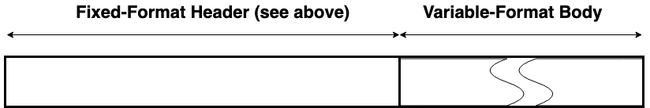
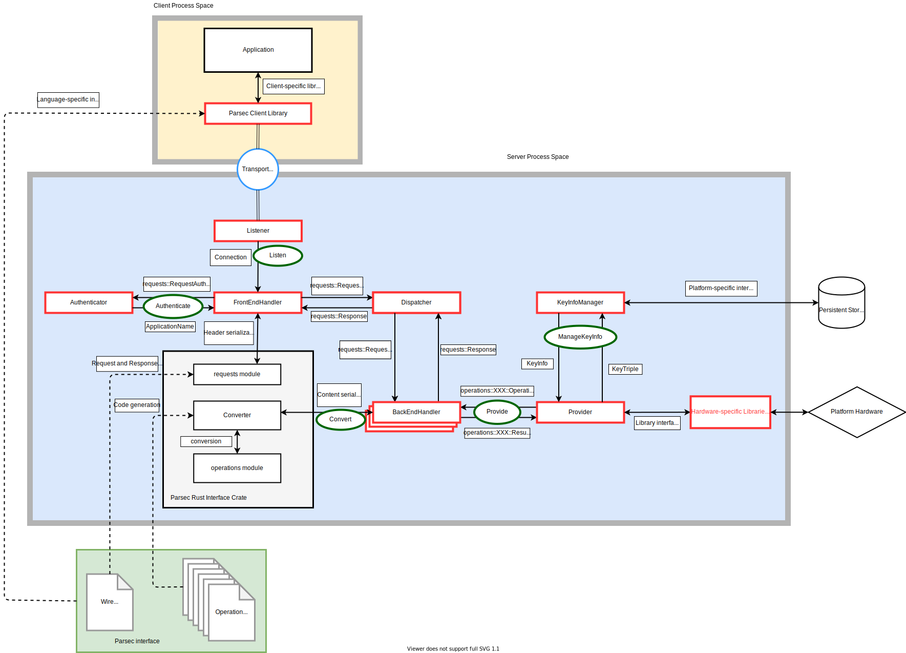
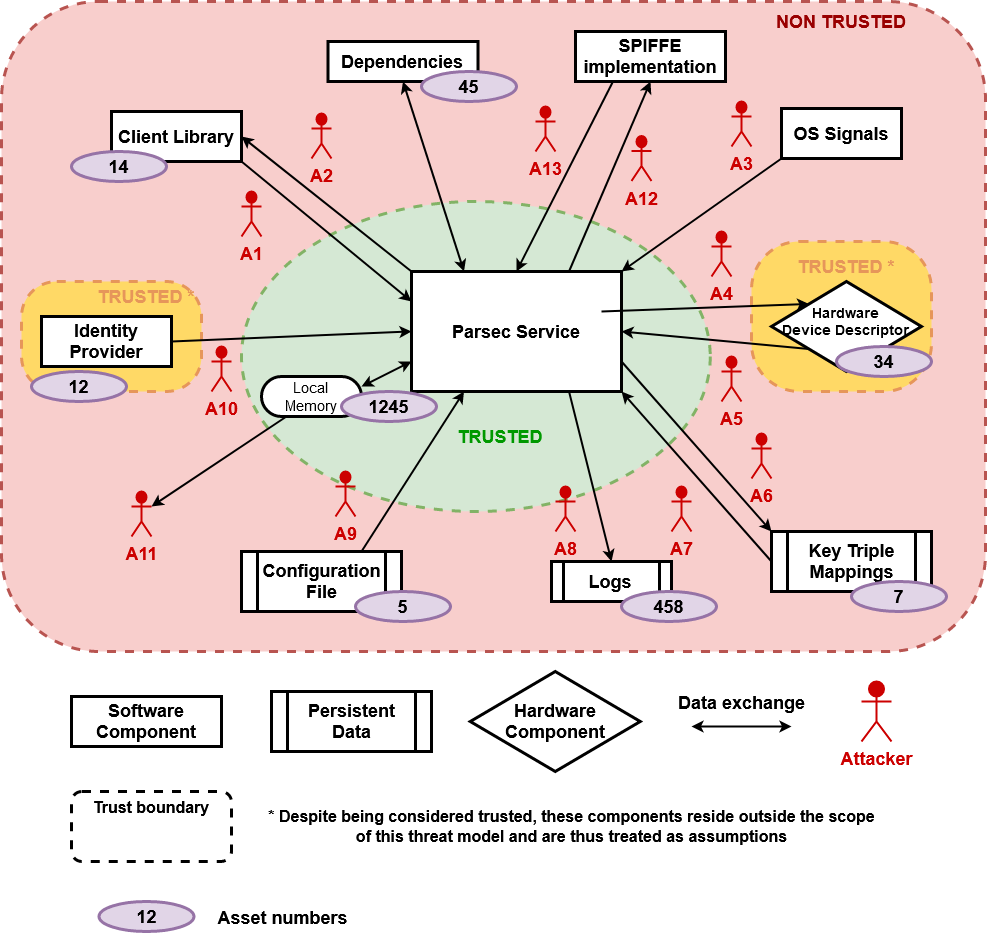
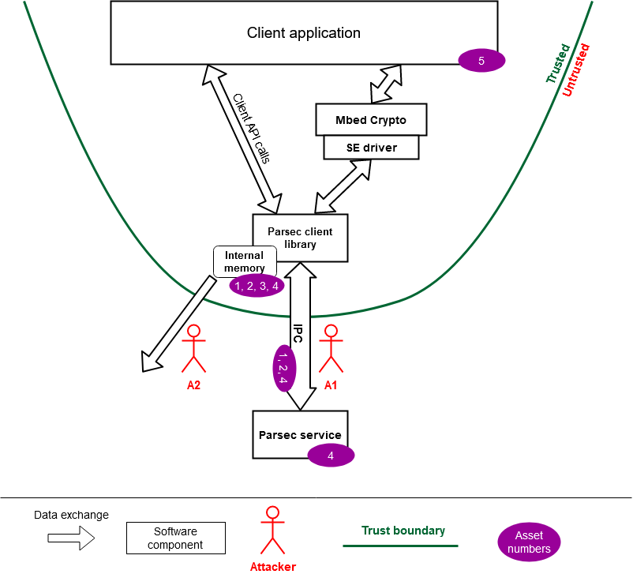

Parsec is the Platform AbstRaction for SECurity, a new open-source initiative to provide a common API to secure services in a platform-agnostic way.
Find here all the technical documentation of Parsec, alongside user and developer guides.
Go straight to the overview to learn more about the project!
Check out the Getting Started guides to quickly try out Parsec!
Then, depending on what you want to know, you can go to the users, client developers, service developers or security sections.
Don't hesitate to ask any question you would have when reading on our Community Slack Channel!
Parsec and all the repositories under the parallaxsecond organization are provided under
Apache-2.0. Contributions to this project are accepted under the same license.
Copyright 2019 Contributors to the Parsec project.
Welcome to Parsec
Parsec is the Platform AbstRaction for SECurity, a new open-source initiative to provide a common API to secure services in a platform-agnostic way.
Parsec aims to define a universal software standard for interacting with secure object storage and cryptography services, creating a common way to interface with functions that would traditionally have been accessed by more specialised APIs. Parsec establishes an ecosystem of developer-friendly libraries in a variety of popular programming languages. Each library is designed to be highly ergonomic and simple to consume. This growing ecosystem will put secure facilities at the fingertips of developers across a broad range of use cases in infrastructure computing, edge computing and the secure Internet of Things.
Why Platform-Agnostic Security?
Today's computing platforms have evolved to offer a range of facilities for secure storage and secure operations. There are hardware-backed facilities such as the Hardware Security Module (HSM) or Trusted Platform Module (TPM). There are firmware services running in Trusted Execution Environments (TEE). There are also cloud-based security services. At a bare minimum, security facilities may be provided purely in software, where they are protected by mechanisms provided in the operating system.
Over the years, software standards have emerged to allow developers to use these facilities from their applications. But these standards bring with them the following challenges:
- They are defined with the expectation that the caller is the "owner" of the platform, meaning that it has sole access to the underlying hardware. In reality, this is often not the case, because the caller might reside in a container or virtual machine, where it is sharing the host hardware with other applications. Existing software standards do not cater well for this situation.
- They are defined exhaustively, with lengthy specifications detailing all permissible operations and parameters. They are written from the perspective of the security device and its capabilities, rather than from the perspective of the application and its use case. This can offer a daunting and bewildering experience for developers, who spend a lot of time and effort figuring out how to map their use case onto the API. There is nothing to tailor the API so that it can be consumed easily for common, simple cases.
- They are specific to a programming language such as C. To consume them in other languages, it is necessary to use interoperability layers such as Foreign Function Interface (FFI), which can make the developer experience even more cumbersome and unnatural. Interoperability layers can also be a source of vulnerabilities.
- Standards tend to be adopted based on some knowledge of the target platform. So while it might be possible for code to be portable across multiple HSM vendors, for example, it is much harder to make code portable between an HSM-based platform and a TPM-based platform.
Parsec inverts this traditional approach to standardizing security interfaces, and it does so by putting applications front and center. It offers an API that is no less comprehensive, but it does so in a way that puts the needs of applications and their common use cases first.
Applications simply want the best-available security, and they want to be able to consume it in a way that is simple, natural, and hard to get wrong.
The following observations can be made about such applications:
- They can be written in a variety of programming languages.
- They may be written with no explicit knowledge of the hardware capabilities of the target platform, such as whether an HSM or TPM is available.
- They are often sharing the target platform hardware with other applications due to the use of virtualization or containerization technology.
- The secure assets owned by one application must be isolated from those owned by another. For example, private keys provisioned on a hardware device must be isolated such that only the provisioning application would be able to perform subsequent operations with those keys.
- They have differing requirements in terms of permissible cryptographic algorithms and key strengths.
These observations motivate the need for a new platform abstraction that offers a common palette of security primitives via a software interface that is both agnostic with respect to the underlying hardware capabilities, and also capable of supporting multiple client applications on the same host, whether those be within containers or within traditional virtual machines.
Parsec is a new software architecture and ecosystem that addresses this need.
Basis in Platform Security Architecture
Parsec is founded on the Platform Security Architecture (PSA). The PSA is a holistic set of threat models, security analyses, hardware and firmware architecture specifications, and an open source firmware reference implementation. The PSA provides a recipe, based on industry best practice, that allows security to be consistently designed in, at both a hardware and firmware level.
One of the provisions of the PSA is the PSA Crypto API. The PSA Crypto API is a comprehensive library of modern security primitives covering the following functional areas:
- Key provisioning and management
- Hashing
- Signing
- Message Authentication Codes (MAC)
- Asymmetric encryption
- Symmetric encryption
- Authenticated Encryption with Associated Data (AEAD)
- Key derivation
- Entropy (random number generation)
A crucial characteristic of the PSA Crypto API is that applications always reference the keys opaquely, making it ideally suited to implementations where keys are provisioned within hardware and are never exposed.
The PSA Crypto API is defined in the C language. Parsec adopts the operations and contracts of the C API, and uses them as the basis for a language-independent wire protocol. Each operation is defined, along with all of its inputs and outputs, as a serializable contract, making it suitable to be invoked over an Inter-Process Communication (IPC) transport. Parsec maintains functional equivalence with the PSA Crypto API, but allows for out-of-process callers in any programming language.
The Parsec Service
The core component of Parsec is the security service (or security daemon). This is a background process that runs on the host platform and provides connectivity with the secure facilities of that host and surfaces the wire protocol based on PSA Crypto.
The security service listens on a suitable transport medium. The transport technology is one of Parsec's many pluggable components, and no single transport is mandated. Choice of transport is dependent on the operating system and the deployment. On Linux-based systems where the client applications are running in containers (isolation with a shared kernel), the transport can be based on Unix sockets.
Client applications make connections with the service by posting API requests to the transport endpoint. This is usually done via a client library that hides the details of both the wire protocol and the transport. This is one of the ways in which the client library simplifies the experience of Parsec for application developers.
A single instance of the Parsec service executes on each physical host. In virtualized environments, the Parsec service may reside on a specially-assigned guest, or potentially within the hypervisor.
The security service does not support remote client applications. Each physical host or node must have its own instance of the service. However, it is possible for the service to initiate outbound remote calls of other services, such as cloud-hosted HSM services.
Multitenancy and Access Control
In addition to surfacing the common API, the Parsec service is also responsible for brokering access to the underlying security facilities amongst the multiple client applications. The exact way that this is done will vary from one deployment to another. (See the section below on pluggable back-end modules). Some of the brokering functionality may already reside in kernel drivers and other parts of the software stack. The Parsec service is responsible for creating isolated views of key storage and cryptographic services for each client application. The secure assets of one client must be kept protected from those of another.
Central to this multi-tenant operation is the notion of application identity and the need for a separate identity provider service. A Parsec-enabled host must contain an identity provider service in addition to the Parsec service itself.
For more information about application identities and the identity provider, please refer to the system architecture document.
Pluggable Back-End Modules
The Parsec service employs a layered architecture, structured into a front-end and a back-end.
The front-end module provides the transport endpoint and listens for connections from clients. The front-end understands the wire protocol and the common API. It is responsible for serialization and de-serialization of the operation contracts.
The back-end modules are known as providers. An instance of the Parsec security service can load one or more providers. Providers implement the API operations using platform-specific or vendor-specific code. They provide the "last mile" of connectivity down to the underlying hardware, software or firmware.
For a deeper dive into the modular structure of the Parsec service, please take a look at the interfaces and dataflow design document.
Then delve into the source code to discover the back-end provider modules that exist. If you cannot find one that is compatible with the platform you intend to use, then please consider contributing a new provider.
Beautiful Client Libraries
A key aim of Parsec is to evolve an ecosystem of developer-friendly client libraries in multiple programming languages.
Parsec avoids the cumbersome, auto-generated language bindings that are so often a part of standardized interfaces.
Parsec's client libraries are beautiful.
Each client library is carefully crafted to follow the idioms of the language that it targets. Consuming a Parsec client library will always feel natural to a developer who works in that language. Everything from naming conventions to object lifecycle will be blended to create a highly-idiomatic developer experience.
But Parsec's focus on developer ergonomics goes further than this. Parsec's client interface is filled with conveniences to eliminate complexity unless complexity is required. The Parsec API is functionally equivalent with the PSA Crypto API, and none of this functional completeness is lost in the client layer. All possible variants of key type and algorithm type are exposed in case they are needed. But the client library offers smart default behaviours so that simple use cases can be achieved with very little code. Parsec enables client code to be small and elegant. And even if it needs to be less small, it should still be elegant.
Source Code Structure
Parsec is composed of multiple code repositories. For more information about how the code in the repository is organized, please see the source code structure document.
Copyright 2019 Contributors to the Parsec project.
Getting Started
Quickly get the Parsec service up and running to try it out! Choose the flavour that you would prefer:
- Quickstart for Linux on x86: running Parsec with Mbed Crypto natively on your machine, the fastest
- Quickstart using a Docker container: running a Docker container with all providers included, the most complete
Copyright 2021 Contributors to the Parsec project.
Quickstart for Linux on x86
Run Parsec with the Mbed Crypto provider natively on your machine.
Overview
In this guide you will learn how to quickly get started with Parsec in a toy environment. More specifically you will:
- download and start the Parsec service
- perform some Parsec commands using
parsec-tool - see (and maybe run) Rust and Go clients code example
Note that this installation method is only made for educational purposes and is not secure. To securely install Parsec on Linux for production, check this guide instead.
Prerequisites
- a 64 bit Linux running on x86
- GLIBC version 2.27+ (check it with
ldd --version)
Downloading Parsec
Run the following command to download and unpack the linux_x86 folder. It contains the Parsec
service (parsec), its pre-built configuration (config.toml) and the Parsec tool (parsec-tool).
curl -s -N -L https://github.com/parallaxsecond/parsec/releases/download/0.7.0/quickstart-0.7.0-linux_x86.tar.gz | tar xz
Starting Parsec
From within the quickstart-0.7.0-linux_x86 directory, start the Parsec service:
$ ./parsec &
[INFO parsec] Parsec started. Configuring the service...
[INFO parsec_service::key_info_managers::on_disk_manager] Found 0 mapping files
[INFO parsec_service::utils::service_builder] Creating a Mbed Crypto Provider.
[INFO parsec] Parsec is ready.
The Parsec service will now wait listening from clients connecting via parsec.sock.
Using the Parsec Tool
As the Parsec socket file is at a non-default location, you will need to set the
PARSEC_SERVICE_ENDPOINT environment variable first.
export PARSEC_SERVICE_ENDPOINT=unix:$(pwd)/parsec.sock
Then, a ping should work using parsec-tool:
$ ./parsec-tool ping
[INFO ] Service wire protocol version
1.0
Generate an ECC key pair and sign with it:
$ ./parsec-tool create-ecc-key -k toto
[INFO ] Creating ECC key...
[INFO ] Key "toto" created.
$ ./parsec-tool sign -k toto "Hello Parsec!"
[INFO ] Hashing data with Sha256...
[INFO ] Signing data with Ecdsa { hash_alg: Specific(Sha256) }...
MEYCIQCrc9cys35NeXwNAr8lYu8WPu0RiutkoAIWn+jYfYofPwIhAKPlNNsW//ykW8nX11KABNpWWYsNGNoZXt0yiGyBEtnb
Execute the tool without any argument to check all the possible commands!
Killing and reloading Parsec
Kill the Parsec service with:
$ pkill parsec
[INFO parsec] SIGTERM signal received. Shutting down Parsec, waiting for all threads to finish...
[INFO parsec] Parsec is now terminated.
If you make any change to its configuration, reload it with:
$ pkill -SIGHUP parsec
[INFO parsec] SIGHUP signal received. Reloading the configuration...
[INFO parsec_service::key_info_managers::on_disk_manager] Found 1 mapping files
[INFO parsec_service::utils::service_builder] Creating a Mbed Crypto Provider.
[WARN parsec_service::front::domain_socket] Removing the existing socket file at ./parsec.sock.
[INFO parsec] Parsec configuration reloaded.
Rust example
TODO
Go example
TODO
Copyright 2021 Contributors to the Parsec project.
Docker
TODO
Copyright 2021 Contributors to the Parsec project.
Parsec for users
How to use Parsec
On a system where Parsec is installed, it can easily be used with a Parsec Client Library. Those libraries communicate with the Parsec service and integrate with the rest of the software idiomatically.
Parsec Client Libraries are available in the following languages:
- Rust. See examples on how to use the
BasicClient. - C: support is currently being built to use Parsec through the PSA Crypto API
- Go (work in progress!)
Also have a look at parsec-tool, a command-line
client to access Parsec from the terminal.
Please contribute to add more Parsec Client Libraries in the languages that you want!
Building, running and installing Parsec
If you would like to compile and run the Parsec service on your system (if it does not exist), follow these guides:
Copyright 2019 Contributors to the Parsec project.
Parsec for client library developers
This section offers the information needed for building Parsec client libraries. The topics covered are:
- API overview - overview of the API and the design principles behind it
- Wire protocol - detailed description of the representation and meaning of data communicated between the client and service
- Status codes - comprehensive list of response codes returned by the service and their meaning
- Writing a new client library - hints and tips for getting started with developing a new client library
- Operations - structured description of all Parsec operations; this subsection provides the official documentation for the API
Copyright 2019 Contributors to the Parsec project.
API Overview
Introduction
This document introduces the API contract that exists between the client and the service, covering its general principles and organisation. Use this document in combination with the wire protocol specification and the operation directory as a reference guide for the development of client libraries.
Audience
This document details the API that is exposed directly by the service to its clients. This is the API that is invoked over the IPC transport between the client process and the service. Client applications do not consume this API directly. Instead, they consume a client library in their chosen programming language. The client library will present an idiomatic and simplified view of the API, making heavy use of argument defaulting to shield application developers from much of the complexity of invoking cryptographic operations. Client libraries should present the API in a form that is "easy to use and hard to get wrong". The audience for this document is the client library developer, not the application developer. Application developers should consult the client library documentation package instead.
Opcodes and Contracts
The API is expressed as a set of individual and distinct operations. Each operation has a unique numerical opcode to set it apart from other operations, and to allow for it to be unambiguously selected for in a client request. (See the wire protocol specification for information about how the client must structure such requests). Each operation also has an input contract, which defines the arguments that the client must supply when invoking it. It also has an output contract, which defines the operation results that the client can expect to receive from the service upon completion. In current manifestations of the API, all input and output contracts are defined as protobuf messages, which provides a strong contractual definition and good interoperability with multiple programming languages.
All operations are catalogued in the operation directory. There is a separate documentation page for each operation, which will specify the correct opcode to use, and will provide links to the input and output contracts.
In order to make an API call, the client must use the wire protocol specification to form a valid request to the service. The request header must contain the opcode of the operation being performed, and the request body must contain serialized data bytes conforming to that operation's input contract. The service will execute the operation, and form a response according to the wire protocol. The response will contain serialized data bytes conforming to the operation's output contract.
Selecting Providers
All of the operations in the API are implemented by back-end modules known as providers. A provider is a module that is capable of implementing operations by making use of available platform hardware or services. For example, if cryptographic services are supplied by a hardware secure element of some kind, then there would be a provider for that secure element. There may be a different provider for a software-only solution. And so forth. It is valid for these different providers to co-reside within the service. The availability of providers is governed by configuration that is applied at service-deployment time.
While the service can be composed from multiple providers, any given API operation needs to be implemented by a single provider. This means that client code needs to specify the target provider when it makes an operation request. To achieve this, the service assigns an 8-bit integer value (from 0 to 255) to each available provider. In practice, the number of providers would be very small: probably just two or three. This integer value is the provider identifier. Client code must set a single provider identifier in each API request. The wire protocol specification explains how a request header field is used to route the request to the correct provider.
In order to set a provider identifier in an API request, the client must first be able to determine
what providers are available, what their identifiers are, and what their characteristics are (such
as whether they are hardware-backed or software-backed). This is done by first referencing the
core provider. The core provider is the only provider that is guaranteed to be available in any
deployment of the service. It has a provider identifier of zero (0x00, the only reserved value for
provider identifiers). The core provider is special in that it doesn't implement any security or
cryptographic operations. The core provider is used to represent the service as a whole. The
operations of the core provider can be used to gather information about the health and configuration
of the service. It can be used to ping the service to check whether it is responsive, and to check
the highest version of the wire protocol that it supports. The core provider can also be used to get
information about the cryptographic providers, their characteristics and their 8-bit identifier
values. Based on this information, the client can determine which provider is best suited to its
requirements. It can then use the integer identifier of that provider to make API requests.
The expected pattern is that a client would determine a single provider that best suits its needs, and then use that provider exclusively for all cryptographic operations. While this usage would be considered typical, it is certainly not enforced. There is nothing to prevent a client from using different providers for different operations if it so desires. In many deployments, it is possible that only a single cryptographic provider would be available anyway. To determine the best available or most suitable provider, a client application can use the capability check mechanism, described below.
Open-Closed Principle
The API is designed to evolve over time. This evolution will be governed by the open-closed principle. In practice, this means that each operation in the API, once introduced, will not be contractually modified. The API can only change by introducing new operations. This preserves backwards compatability with client code. Any client code that makes use of any given operation will continue to work, even if new operations are introduced.
Deprecation
While the open-closed principle dictates that operations will not be contractually changed once they have been introduced, it may sometimes be necessary to deprecate specific operations. This will often be to encourage the use of a new operation with an improved feature set and a different contract. Deprecation is largely a documentation exercise: the operation directory will indicate when an operation has been deprecated. This does not mean that the operation will no longer work. It simply means that any new use of the operation is strongly discouraged in favour of a better alternative.
Capability Checks
The API includes a capability check operation, which allows the client to determine the set of operations that are available. There are two reasons why the client needs this capability check:
- The API can evolve over time, introducing new operations with new opcodes. In general, a client cannot know whether it is talking to a service that supports these newer operations, so it needs to check the level of support in advance.
- Different cryptographic providers have different capabilities. An operation that is supported in one provider might not be supported in another.
Refer to the operation directory for information on how to perform a capability check.
Application Identity
Every client application that uses the API must present an application identity. Application identities are arbitrary byte strings, which are used by the service to isolate the activities of one client from those of another. The storage of secure assets such as keys is segregated on a per-client basis: assets created by one client cannot be accessed by another. The service always uses the client's application identity string to maintain this separation.
The means by which application identities are generated or assigned is outside of the scope of this specification. The only requirements for application identities is that they must be unique and stable. This means that any given application identity string can be used to identify one and only one client application. It also means that the application identity string for any given client should remain the same over time, even across system resets.
The granularity of application identities is not defined. In particular, there is no assumption that a client application corresponds precisely with a single client process. A client application might be composed of multiple processes. Conversely, a single process might contain multiple distinct client applications. Client applications might also be organised into isolated environments such as containers. Provided that client application is able to present a unique and stable identity string for each API call, it does not matter how they are structured and deployed.
Authentication and Sessions
Clients present their identity strings to the service on each API call. As set out in the wire protocol specification, they do this using the authentication field of the API request.
There are currently three ways in which the client can use the authentication field to share its identity with the service:
- direct authentication.
- authentication tokens.
- Unix peer credentials.
With direct authentication, the client authenticates the request by directly copying the application identity string into the authentication field of the request.
With authentication tokens, the client obtains a token from an identity provider and sends it as the authentication field of the request. The token is reusable for a specified duration of time, after which a new one must be issued. The application identity is contained in the token and can be extracted by the service after verifying the authenticity of the token. A more detailed description of authentication tokens and their lifecycle is present in the sytem architecture specification.
With Unix peer credentials, the client authenticates by self-declaring its Unix user identifier (UID) inside the authentication field of the request. The Parsec service verifies that this self-declared UID matches the actual UID of the connecting process via the Unix peer credentials mechanism.
When it makes an API request, the client needs to tell the server which kind of authentication is being used. This is so that the server knows how to interepret the bytes in the authentication field of the request. As described in the wire protocol specification, the client does this by setting an integer value in the auth type field of the request header. The permitted numerical values for this field are given as follows:-
- A value of 0 (
0x00) indicates that there is no authentication. The service will not expect any content in the authentication field of the request. If any authentication bytes are present, they will be ignored, but the request will still be considered valid. (For clients, it is considered bad practice to supply a non-empty authentication field in this case, because it is contradictory to supply authentication material while indicating an unauthenticated call, and it indicates improper coding or a possible defect on the client side). See the section below on unauthenticated operations. - A value of 1 (
0x01) indicates direct authentication. The service will expect the authentication field to contain a cleartext copy of the application identity, encoded as a UTF-8 string. - A value of 2 (
0x02) indicates authentication tokens. This authentication type is not currently supported. The service will expect the authentication field to contain a JWT token. Tokens must be signed with the private key of the identity provider and their validity period must cover the moment when the check is done. - A value of 3 (
0x03) indicates Unix peer credentials authentication. The service expects the authentication field to contain the Unix user identifier (UID, not username) of the connecting process as a zero-padded little-endian 32-bit unsigned integer. The Parsec service will verify that this self-declared UID is consistent with the UID from the Unix peer credentials. - A value of 4 (
0x04) indicates authentication through JWT SPIFFE Verifiable Identity Document. The service expects the authentication field to contain a JWT-SVID token as described in the SPIFFE standard. The token must be encoded using the JWS Compact Serialization. The service will use the SPIFFE ID validated from the SVID as application identity.
Other values are unsupported and will be rejected by the service. See the authenticators page for more details.
Unauthenticated Operations
Authentication via the application identity is only needed for cryptographic operations. Core
provider operations do not require authentication. Core provider operations include those that are
used to ping the service and gather information about its capabilities. These operations neither
require nor support any notion of per-client isolation. Consequently, they can be called without any
authentication. For requests to the core provider, the auth type header field should always be
set to 0 (0x00).
Content Type and Accept Type
As per the wire protocol specification, API request headers contain fields
for content type and accept type, which respectively indicate how the request body and
response body are encoded. Currently, the only supported value for these fields is one (0x01),
meaning that all request and response bodies contain serialized protobuf messages. All other values
are unsupported and will be rejected by the service.
PSA Crypto Operations
The majority of the operations in this API are derived from the PSA Crypto API Specification. There is a near one-to-one correspondence of functional operations between the two APIs. The main difference is that the PSA Crypto API is defined in the C programming language, whereas the API described here is language-agnostic. There is otherwise a close contractual equivalence between the two, and this is intentional.
In the operation directory, operations derived from the PSA Crypto API have symbolic names that start with the Psa prefix, and their numerical opcodes are all in the 1,000-1,999 (decimal) range. Opcode ranges are an important aspect of the API design because they form the basis of an extensibility mechanism. In the future, it will be possible for contributors to partition the numerical opcode space with ranges for custom operations.
Key Names, Enumerating and Referencing
While this API is closely aligned with the PSA Crypto API, there are some differences. One important difference is in the conventions used to name and reference cryptographic keys.
In the PSA Crypto API, every key has a 32-bit numerical identifier. This identifier is set by the caller when the persistent key is created. Client code then uses this 32-bit identifier to refer to the key for use in any cryptographic operation.
This API is different: the key names are not 32-bit numerical values, they are UTF-8 strings. Cryptographic operations are all specified in terms of the key name string. It is important to understand that the opacity of keys - one of the critical design characteristics of the PSA Crypto API - is preserved here. Key names are used to reference keys for cryptographic operations, but the actual key material is never exposed to the caller of the API unless an explicit operation is invoked to export the key (and the key's usage policy permits for such an export to occur).
The use of string names offers greater flexibility in how names can be chosen and structured. It allows for names to be readable and meaningful. It also allows for names to follow a structured pattern with separators, similar to a file path. This allows keys to not only be named in meaningful ways, but also for them to be organised according to a meaningful structure, just like files on a file system. Keys with a similar purpose, for example, can be stored in the same part of the notional "tree".
Key names adopt a path structure similar to Unix file paths, such as /keys/rsa/my_key_1.
This key naming convention permits for the API to support key enumeration, where the client is
able to determine the set of known keys according to some wildcard pattern such as /keys/rsa/*.
All key names are implicitly in a per-client namespace, so it is impossible for one client application to enumerate or otherwise discover the keys that are owned by another client application.
Providers can impose length restrictions on key names to help with internal storage and argument validation. This API reference does not define any single fixed maximum length. Clients must determine the maximum length at runtime using the capability checking mechanism.
Service discovery
Establishing a connection between the client and the service requires common understanding of the
communication mechanism and the address at which the service can be found. While the default
mechanism is through a Unix domain socket found at /run/parsec/parsec.sock, that can be easily
changed by an admin for various reasons. Clients must therefore be made aware of such changes and
the defined mechanism for this uses environment variables.
The PARSEC_SERVICE_ENDPOINT environment variable is the preferred method of indicating to a
process where to find the communication channel for the Parsec service. The variable should contain
a URI as defined in RFC3986 - for example, for the default
domain socket location, the URI would be unix:/run/parsec/parsec.sock. Client libraries must be
capable of scanning for the environment variable, parsing it, and bootstrapping communication using
the URI, with no input from the client application. The libraries must also allow the application to
override these settings.
Full API Reference
For the full reference guide to individual API operations, please refer to the operation directory.
Copyright 2019 Contributors to the Parsec project.
Wire Protocol
Introduction
This document describes and specifies the wire protocol that exists between the service and its clients. It explains the general principles of how the protocol is structured, and goes on to provide a full specification that can be used as the basis of both client-side and service-side code.
Scope
This document describes the principles, patterns and low-level details of the wire protocol. This covers the details that are common to all messages that pass between the service and its clients. This document is not an API specification for the service. Individual API operations, along with their behaviours, inputs and outputs are described separately in the API specification. The wire protocol is the underlying message-passing mechanism that enables the API.
Audience
A thorough understanding of the wire protocol is necessary if you are developing new capabilities within certain parts of the service, or if you are developing or extending one of its client libraries. However, it is not necessary to understand the wire protocol in order to consume the client API into an application.
General Principles
Binary Protocol
The wire protocol is a binary and stream-oriented protocol. It is designed for speed and compactness of transmission.
Requests and Responses
The wire protocol is principally structured around the notion of a request and a response. Requests and responses are self-contained pairs of entities, where each request is answered by exactly one response. Requests always travel from the client to the service, and responses always travel back from the service to the client. Each pair of request and response encapsulates a single call to a single operation provided by the service. Client library code is concerned with forming requests and transmitting them to the service. Service code is concerned with processing requests, forming responses, and transmitting those responses back to the client. The term message is used to refer generically to requests and responses in contexts where there is no need to draw a distinction between them.
Analogy With HTTP and REST
The request-response pattern of the wire protocol is intentionally modelled on the familiar notion of calling a REST API over HTTP. In fact, one of the guiding principles of the wire protocol design has been to create something that might loosely be called a "lightweight REST". This term must be applied with caution, however. REST is a collection of architectural principles, not a protocol. It does not follow that all of the RESTful principles are adopted here. However, thinking of the wire protocol as being like a web service protocol, only without any dependency on HTTP or similar stacks, can be a good way to gain an initial understanding. Some patterns of the wire protocol design have their foundation in a mixture of concepts taken from HTTP and REST, but the wire protocol itself is neither of these things: it is an entirely bespoke protocol.
Synchronous Operation
The wire protocol is based on requests and responses, and therefore models synchronous patterns of interaction. There is nothing in current versions of the protocol to assist with asynchronous patterns of interaction between the client and the service. Future versions of the protocol may introduce such concepts. In the meantime, depending on the type of transport used, it may be possible for the service or the clients to take advantage of asynchronous features of the transport (such as the non-blocking mode of a socket) to provide certain levels of asynchronous control.
Separation of Protocol and Transport
The wire protocol defines the format of messages, and some key characteristics and invariants concerning their transmission between the service and its clients. It does not mandate a specific transport stack. The wire protocol is a binary, stream-oriented protocol. As such, it can be carried by any transport medium that supports the reliable transmission of binary octet streams, such as Unix domain sockets (connected in streaming mode) or TCP sockets. Datagram-oriented transports are not supported, because the protocol depends on the reliable transmission of entire messages in the proper sequence.
Separation of Header and Body
Every message (whether request or response) has a header and a body. Again, this is conceptually similar to the separation of header and body in HTTP. And, like HTTP, this protocol allows some flexibility in how the body content is encoded. The wire protocol borrows HTTP's notion of the content-type and accept header fields, which allow the client to tell the server how to interpret the content, and also to declare what kind of response is acceptable in return. The only difference is that the wire protocol uses numerical byte fields to indicate these values, where HTTP uses string key-value pairs and media types. This is another illustration of how the wire protocol can be viewed as a more compact and stripped-down HTTP.
The message headers are fixed-length and fixed-format. The headers themselves have no variability in their encoding, nor do they adhere to any encoding or serialization standard. The format of the header is defined solely by this specification. When writing code to either transmit or receive a header, the code must be written and validated according to this specification alone. Headers are composed of a series of single-byte and multi-byte fields.
The header format is specified to be identical for requests and responses. Request and response headers are of identical size, and have identical fields specified at identical offsets. This means that developers only need to understand and code to a single header format. This design also means that shared memory transport technologies can be used where the header resides in a single shared buffer. However, this design does also means that some fields are redundant depending on the context. A full specification of the byte fields for the header will be found later in this document, including information about how and when they should be populated or interpreted.
Headers carry a fixed set of metadata fields that are common to all messages. However, they do not carry any inputs to or outputs from specific API operations. API inputs and outputs are always carried in the body. Unlike the header, which is always fixed-length and fixed-format, the body can be both variable-length and variable-format.
Protobuf Body
As described above, the wire protocol design allows for the message body to be structured and encoded in a variety of formats. However, in current manifestations of the protocol, only a single encoding is defined for use in the message bodies, and this encoding is based on protocol buffers, also known as protobuf.
For each operation in the API, two separate protobuf message definitions will exist: one for that operation's inputs, and another for its outputs. The body in a request message can be converted through protobuf-generated code into a model object for the inputs. Likewise, the body in a response message can be converted through protobuf-generated code into a model object for the outputs.
Processing any message is, therefore, a two-phase process: firstly, the header must be processed by writing code that is conformant with this specification; and secondly, the content must be processed according to its content type, which is currently always protobuf.
Future manifestations of the wire protocol might support encoding schemes other than protobuf, in which case the second phase of processing would differ. This is the reason why the protocol design has granted some flexibility in terms of the message body encoding.
It is worth re-iterating that protobuf encodings are employed only for message bodies and not for headers. As explained above, headers employ a bespoke binary encoding that is fully defined within this specification alone. There is no use of protobuf within the header. Headers can be parsed and generated only by writing code that conforms to this specification document. Again, this permits for the possibility that a future manifesation might support different encoding schemes.
Authentication
As described above, all messages in this protocol have a header and a body. If a message is a request (as opposed to a response), then it will additionally carry a third component: its authentication field.
The wire protocol is agnostic about how the authentication field is interpreted. The request header measures the size of the field so that the service can consume the correct number of bytes from the input stream. The request header also includes a one-byte integer label to inform the service how to interpret the authentication bytes.
Authentication is based on the invariant that all client applications have access to a persistent unique identifier. This is a string token that allows the assets and actions of one client to be cleanly separated from those of another. But while this identifier string is the core component of authentication, there are different ways that it can be used, and consequently there are different ways for the authentication field to be populated. One simple method is for the client identifier to be passed directly. But it is also possible to use the identifier as input to an HMAC algorithm over the body, in which case the authentication field would contain the computed HMAC, rather than the identifier itself.
See the API Overview section for a description of possible authentication type values for the authentication field.
Sessions
The wire protocol supports the notion of sessions, which can be used to allow the client and the service to track state across multiple API calls. The protocol allocates space within the request header and the response header for an 8-byte session identifier. Details of how to create and manage sessions are given in the API specification.
Wire Protocol Versions
The wire protocol is versioned. It caters for situations where the service and its clients may be operating at different versions. All messages (requests and responses) carry a major and minor version number field. Although the design supports having different wire protocol versions, changes are not expected to happen regularly, and they may not happen at all.
Clients can use the Ping operation to determine what is the highest version of
the protocol that the service support and switch to that one if they want to. Requests made with a
wire protocol version not supported by the service will be sent back a
WireProtocolVersionNotSupported status code response.
Responses will be sent using the same wire protocol version than the requests they originate from.
Please note that the wire protocol version is not the mean of finding out the level of support for specific operations in the API. The ListOpcodes operation should be used, per provider basis, to determine if an operation is supported by the provider.
Opcodes
All requests contain an unsigned 4-byte integer field called the opcode. The opcode is the value that determines which API operation is being invoked by the requests. Recall that each request/response pair corresponds to the invocation of exactly one API operation, and each of these operations is assigned an integer opcode.
The opcode zero is not used and is not valid. The lowest valid opcode is 0x0001, and the highest
valid opcode is 0xFFFF.
All opcodes are defined within the API specification.
Status
All responses contain an unsigned 2-byte integer field called the status, which is defined to indicate the overall success or failure of the operation.
The status value of zero (0x0000) is used universally to mean that the operation completed
successfully.
With the exception of zero as a special case, other status values are partitioned according to the same strategy as the opcodes. Status values from 1-999 are reserved for internal service housekeeping operations, and status values from 1000-1999 are reserved for status codes corresponding to the Platform Security Architecture (PSA) Cryptography API.
All status values and their definition can be found on the Status Codes page.
Message Structure Specifications
General Rules
This section provides a complete specification for the interpretation of messages. Based on this specification, service and client code can be created to both consume and produce conformant messages on any suitable transport medium.
All multi-byte numerical fields are transported in little-endian format: the least significant byte is sent first.
The Fixed Common Header
Requests and responses share a common fixed-format header whose specification is given below. Because the header format is the same for requests and responses, it means that some of the data fields in the header are unused/ignored depending on whether the header is an outgoing request (being transmitted from the client to the service), or an incoming response (being returned from the service back to the client). However, most fields are relevant and common to both.
Each field is annotated according to the following scheme:
- "Common" indicates that the field is common to both request messages and response messages.
- "Requests only" indicates that the field is only used in requests and must be ignored in responses. In a response, these fields should be set to a value of zero.
- "Responses only" indicates that the field is only used in responses and must be ignored in requests. In a request, these fields should be set to a value of zero.
Fields occur in contiguous memory and there must be no additional padding between them. On the following diagram, the bytes go left to right from least significant to most significant.

| Name | Scheme | Size (in bytes) | Description |
|---|---|---|---|
| Magic number | Common | 4 | Must be 0x5EC0A710 (selected to be an approximate transcoding of SECurity API). This field can be used as an initial validity check for incoming messages. This field must be populated in all messages. This field will remain the same across different wire protocol versions. |
| Header size | Common | 2 | Size of the remainder of the header in bytes (once the magic number and header size fields have been consumed). Consumers must use this field to consume the correct number of bytes of header from the input stream, rather than use this specification to deduce the header size. This field's position and width will remain the same across different wire protocol versions. Only the value of this field may change between versions. |
| Major version number | Common | 1 | Versioning field. Currently the only supported and valid value for this field is 0x01. This field's position and width will remain the same across different wire protocol versions. Only the value of this field may change between versions. |
| Minor version number | Common | 1 | Versioning sub-field. Currently the only supported and valid value for this field is 0x00. This field's position and width will remain the same across different wire protocol versions. Only the value of this field may change between versions. |
| Flags | Common | 2 | Currently unused and should be set to 0x0000. |
| Provider | Common | 1 | Identify the back-end service provider for which the request is intended. A value of zero indicates that the request is intended for a special provider, which always exists, and is used for service discovery and communication bootstrapping. |
| Session handle | Common | 8 | Session identifier. |
| Content type | Common | 1 | Defines how the message body should be processed. The only currently-supported value is 0x00, which indicates that the message body should be treated as a serialized protobuf message. |
| Accept type | Requests only | 1 | Defines how the service should provide its response. The only currently-supported value is 0x00, which indicates that the service should provide a response whose body is a serialized protobuf message. |
| Auth type | Requests only | 1 | Defines how the authentication bytes should be interpreted. See the authentication section above. |
| Content length | Common | 4 | Provides the exact number of bytes of body. |
| Auth length | Requests only | 2 | Provides the exact number of bytes of authentication. |
| Opcode | Common | 4 | Indicates the operation being performed by this request. See the section above on opcodes. |
| Status | Responses only | 2 | Indicates the overall success or failure of the operation. A value of zero is used universally to mean success. Other values should be interpreted according to the API specification. |
| Reserved | Common | 2 | Currently unused and must be set to zero. |
Requests
A request message begins with the fixed-format header as specified above, followed contiguously by a variable-length field of zero or more message body bytes, which is in turn followed contiguously in memory by a variable-length field of zero or more authentication bytes.
The interpretation of the body and authentication bytes is specified by the relevant fields in the fixed-format header.
The request body bytes must immediately follow the request header bytes, and the size of the body must precisely match the Content Length field of the header with no additional padding or alignment.
The authentication bytes must immediately follow the request body bytes, and the size of the authentication field must precisely match the Auth Length field of the header with no additional padding or alignment.

Responses
A response message begins with the fixed-format header as specified above, followed contiguously by a variable-length field of zero or more message body bytes.
The interpretation of the body is specified by the relevant fields in the fixed-format header.
The response body bytes must immediately follow the response header bytes, and the size of the body must precisely match the Content Length field of the header with no additional padding or alignment.

Copyright 2019 Contributors to the Parsec project.
Response Status Codes
The value 0, Success, is for a successful operation.
Service Internal Response Status Codes
These codes originate in components in the service outside of the Provide trait implementation by
the providers.
| Response Status Code | Value | Descrption |
|---|---|---|
WrongProviderID | 1 | Requested provider ID does not match that of the backend |
ContentTypeNotSupported | 2 | Requested content type is not supported by the backend |
AcceptTypeNotSupported | 3 | Requested accept type is not supported by the backend |
WireProtocolVersionNotSupported | 4 | Requested version is not supported by the backend |
ProviderNotRegistered | 5 | No provider registered for the requested provider ID |
ProviderDoesNotExist | 6 | No provider defined for requested provider ID |
DeserializingBodyFailed | 7 | Failed to deserialize the body of the message |
SerializingBodyFailed | 8 | Failed to serialize the body of the message |
OpcodeDoesNotExist | 9 | Requested operation is not defined |
ResponseTooLarge | 10 | Response size exceeds allowed limits |
AuthenticationError | 11 | Authentication failed |
AuthenticatorDoesNotExist | 12 | Authenticator not supported |
AuthenticatorNotRegistered | 13 | Authenticator not supported |
KeyInfoManagerError | 14 | Internal error in the Key Info Manager |
ConnectionError | 15 | Generic input/output error |
InvalidEncoding | 16 | Invalid value for this data type |
InvalidHeader | 17 | Constant fields in header are invalid |
WrongProviderUuid | 18 | The UUID vector needs to only contain 16 bytes |
NotAuthenticated | 19 | Request did not provide a required authentication |
BodySizeExceedsLimit | 20 | Request length specified in the header is above defined limit |
AdminOperation | 21 | The operation requires admin privilege |
PSA Response Status Codes
These codes originate from within the Provide trait implementation.
| Response Status Code | Value | Descrption |
|---|---|---|
PsaErrorGenericError | 1132 | An error occurred that does not correspond to any defined failure cause |
PsaErrorNotPermitted | 1133 | The requested action is denied by a policy |
PsaErrorNotSupported | 1134 | The requested operation or a parameter is not supported by this implementation |
PsaErrorInvalidArgument | 1135 | The parameters passed to the function are invalid |
PsaErrorInvalidHandle | 1136 | The key handle is not valid |
PsaErrorBadState | 1137 | The requested action cannot be performed in the current state |
PsaErrorBufferTooSmall | 1138 | An output buffer is too small |
PsaErrorAlreadyExists | 1139 | Asking for an item that already exists |
PsaErrorDoesNotExist | 1140 | Asking for an item that doesn't exist |
PsaErrorInsufficientMemory | 1141 | There is not enough runtime memory |
PsaErrorInsufficientStorage | 1142 | There is not enough persistent storage available |
PsaErrorInssuficientData | 1143 | Insufficient data when attempting to read from a resource |
PsaErrorCommunicationFailure | 1145 | There was a communication failure inside the implementation |
PsaErrorStorageFailure | 1146 | There was a storage failure that may have led to data loss |
PsaErrorHardwareFailure | 1147 | A hardware failure was detected |
PsaErrorInsufficientEntropy | 1148 | There is not enough entropy to generate random data needed for the requested action |
PsaErrorInvalidSignature | 1149 | The signature, MAC or hash is incorrect |
PsaErrorInvalidPadding | 1150 | The decrypted padding is incorrect |
PsaErrorCorruptionDetected | 1151 | A tampering attempt was detected |
PsaErrorDataCorrupt | 1152 | Stored data has been corrupted |
Copyright 2019 Contributors to the Parsec project.
Writing a new Parsec Client Library
If a client library does not already exist in your preferred programming language, you can create one. Writing a new client library is a great way to enhance the Parsec client ecosystem.
When creating a new client library, please make sure you understand the Parsec philosophy for client libraries. It is very important that you design your client library to provide a highly ergonomic and idiomatic developer experience.
You will need to understand the wire protocol specification and the API specification in depth in order to create a client library.
You will need to know which Listener the Parsec service is
currently using and how it was configured in order to communicate with it.
Copyright 2019 Contributors to the Parsec project.
Operations
Introduction
This document provides links to full descriptions for all of the operations in the API. The operations are defined in a format-neutral language where types can easily and implicitely be translated to the specific operation implementation language used.
Overview
| Operation | Opcode |
|---|---|
| Ping | 0x0001 |
| PsaGenerateKey | 0x0002 |
| PsaDestroyKey | 0x0003 |
| PsaSignHash | 0x0004 |
| PsaVerifyHash | 0x0005 |
| PsaImportKey | 0x0006 |
| PsaExportPublicKey | 0x0007 |
| ListProviders | 0x0008 |
| ListOpcodes | 0x0009 |
| PsaAsymmetricEncrypt | 0x000A |
| PsaAsymmetricDecrypt | 0x000B |
| PsaExportKey | 0x000C |
| PsaGenerateRandom | 0x000D |
| ListAuthenticators | 0x000E |
| PsaHashCompute | 0x000F |
| PsaHashCompare | 0x0010 |
| PsaAeadEncrypt | 0x0011 |
| PsaAeadDecrypt | 0x0012 |
| PsaRawKeyAgreement | 0x0013 |
| PsaCipherEncrypt | 0x0014 |
| PsaCipherDecrypt | 0x0015 |
| PsaMacCompute | 0x0016 |
| PsaMacVerify | 0x0017 |
| PsaSignMessage | 0x0018 |
| PsaVerifyMessage | 0x0019 |
| ListKeys | 0x001A |
| ListClients | 0x001B |
| DeleteClient | 0x001C |
Find here the current level of support of those operations in Parsec.
Core Operations
Core operations are non-cryptographic operations supported by the core provider. Set the
provider field of the request header to 0 (0x00) to invoke these operations.
Some operations are reserved for administrators. They are marked below with "(admin)". These
operations can only be executed by a set of application names chosen by the Parsec administrator. If
user applications try to execute those operations, a AdminOperation response status error code
will be returned.
Service Health
Service Configuration
- ListProviders
- ListOpcodes
- ListAuthenticators
- ListKeys
- ListClients (admin)
- DeleteClient (admin)
PSA Crypto Operations
These operations are all derived from equivalent function definitions in the PSA Crypto API Specification. Most of the documentation in this book directly come from the specification.
Key Management
Message Digests
Message Authentication Codes (MAC)
Unauthenticated Ciphers
Authenticated Encryption with Associated Data (AEAD)
Asymmetric Signature
Asymmetric Encryption
Key Agreement
Random Number Generation
Copyright 2019 Contributors to the Parsec project.
Parsec Operations Coverage
These tables define the current level of coverage in Parsec for the operations and their parameters. Only the operations specified and that have a dedicated page are put in the following table.
Not all parameters (key types, algorithms) of the operation might be supported. See the following sections for details.
| Operation \ Provider | Core | Mbed Crypto | PKCS 11 | TPM 2.0 | Trusted Service | CryptoAuth library |
|---|---|---|---|---|---|---|
| Ping | ✅ | ❎ | ❎ | ❎ | ❎ | ❎ |
| ListProviders | ✅ | ❎ | ❎ | ❎ | ❎ | ❎ |
| ListOpcodes | ✅ | ❎ | ❎ | ❎ | ❎ | ❎ |
| ListAuthenticators | ✅ | ❎ | ❎ | ❎ | ❎ | ❎ |
| ListKeys | ✅ | ❎ | ❎ | ❎ | ❎ | ❎ |
| DeleteClient | ✅ | ❎ | ❎ | ❎ | ❎ | ❎ |
| ListClients | ✅ | ❎ | ❎ | ❎ | ❎ | ❎ |
| PsaImportKey | ❎ | ✅ | ✅ | ✅ | ✅ | ❌ |
| PsaGenerateKey | ❎ | ✅ | ✅ | ✅ | ✅ | ✅ |
| PsaDestroyKey | ❎ | ✅ | ✅ | ✅ | ✅ | ✅ |
| PsaExportKey | ❎ | ✅ | ❌ | ❌ | ❌ | ❌ |
| PsaExportPublicKey | ❎ | ✅ | ✅ | ✅ | ✅ | ❌ |
| PsaHashCompute | ❎ | ✅ | ❌ | ❌ | ❌ | ✅ |
| PsaHashCompare | ❎ | ✅ | ❌ | ❌ | ❌ | ✅ |
| PsaMacCompute | ❎ | ❌ | ❌ | ❌ | ❌ | ❌ |
| PsaMacVerify | ❎ | ❌ | ❌ | ❌ | ❌ | ❌ |
| PsaCipherEncrypt | ❎ | ❌ | ❌ | ❌ | ❌ | ❌ |
| PsaCipherDecrypt | ❎ | ❌ | ❌ | ❌ | ❌ | ❌ |
| PsaAeadEncrypt | ❎ | ✅ | ❌ | ❌ | ❌ | ❌ |
| PsaAeadDecrypt | ❎ | ✅ | ❌ | ❌ | ❌ | ❌ |
| PsaSignMessage | ❎ | ❌ | ❌ | ❌ | ❌ | ❌ |
| PsaVerifyMessage | ❎ | ❌ | ❌ | ❌ | ❌ | ❌ |
| PsaSignHash | ❎ | ✅ | ✅ | ✅ | ✅ | ❌ |
| PsaVerifyHash | ❎ | ✅ | ✅ | ✅ | ✅ | ❌ |
| PsaAsymmetricEncrypt | ❎ | ✅ | ✅ | ✅ | ❌ | ❌ |
| PsaAsymmetricDecrypt | ❎ | ✅ | ✅ | ✅ | ❌ | ❌ |
| PsaRawKeyAgreement | ❎ | ✅ | ❌ | ❌ | ❌ | ❌ |
| PsaGenerateRandom | ❎ | ✅ | ❌ | ❌ | ❌ | ✅ |
- ✅: The provider supports the operation (maybe not all of its parameters, check below).
- ❎: The operation is not meant to be implemented on this provider (core operation on a crypto provider or opposite).
- ❌: The provider does not currently support the operation.
Key types support
This table describe if the following key types are supported for key management operations.
| Key type \ Provider | Mbed Crypto | PKCS 11 | TPM 2.0 | Trusted Service | CryptoAuth library |
|---|---|---|---|---|---|
| RawData | ✅ | ❌ | ❌ | ❌ | ✅ |
| Hmac | ❌ | ❌ | ❌ | ❌ | ❌ |
| Derive | ❌ | ❌ | ❌ | ❌ | ❌ |
| Aes | ✅ | ❌ | ❌ | ❌ | ✅ |
| Des | ❌ | ❌ | ❌ | ❌ | ❌ |
| Camellia | ✅ | ❌ | ❌ | ❌ | ❌ |
| Arc4 | ❌ | ❌ | ❌ | ❌ | ❌ |
| Chacha20 | ✅ | ❌ | ❌ | ❌ | ❌ |
| RsaPublicKey | ✅ | ✅ | ✅ | ✅ | ❌ |
| RsaKeyPair | ✅ | ✅ | ✅ | ✅ | ❌ |
| EccKeyPair | ✅ | ❌ | ✅ | ✅ | ✅ |
| EccPublicKey | ✅ | ❌ | ✅ | ✅ | ✅ |
| DhKeyPair | ✅ | ❌ | ❌ | ❌ | ❌ |
| DhPublicKey | ✅ | ❌ | ❌ | ❌ | ❌ |
Elliptic curve families
This table describes if the following elliptic curve families are supported. Not all curves from those families might be supported.
| ECC Curve Family \ Provider | Mbed Crypto | PKCS 11 | TPM 2.0 | Trusted Service | CryptoAuth library |
|---|---|---|---|---|---|
| SECP-K1 | ✅ | ❌ | ❌ | ✅ | ❌ |
| SECP-R1 | ✅ | ❌ | ✅ | ✅ | ✅ |
| SECP-R2 | ✅ | ❌ | ❌ | ✅ | ❌ |
| SECT-K1 | ✅ | ❌ | ❌ | ✅ | ❌ |
| SECT-R1 | ✅ | ❌ | ❌ | ✅ | ❌ |
| SECT-R2 | ✅ | ❌ | ❌ | ✅ | ❌ |
| Brainpool P R1 | ✅ | ❌ | ❌ | ✅ | ❌ |
| FRP | ✅ | ❌ | ❌ | ✅ | ❌ |
| Montgomery | ✅ | ❌ | ❌ | ✅ | ❌ |
Algorithm support
These tables describe if the following algorithms are supported in all cryptographic operations they could be used in.
Hash algorithms
| Algorithm \ Provider | Mbed Crypto | PKCS 11 | TPM 2.0 | Trusted Service | CryptoAuth library |
|---|---|---|---|---|---|
| MD2 | ✅ | ❌ | ❌ | ✅ | ❌ |
| MD4 | ✅ | ❌ | ❌ | ✅ | ❌ |
| MD5 | ✅ | ❌ | ❌ | ✅ | ❌ |
| RIPEMD-160 | ✅ | ❌ | ❌ | ✅ | ❌ |
| SHA-1 | ✅ | ✅ | ✅ | ✅ | ❌ |
| SHA-224 | ✅ | ❌ | ❌ | ✅ | ❌ |
| SHA-256 | ✅ | ✅ | ✅ | ✅ | ✅ |
| SHA-384 | ✅ | ✅ | ✅ | ✅ | ❌ |
| SHA-512 | ✅ | ✅ | ✅ | ✅ | ❌ |
| SHA-512/224 | ✅ | ❌ | ❌ | ✅ | ❌ |
| SHA-512/256 | ✅ | ❌ | ❌ | ✅ | ❌ |
| SHA3-224 | ✅ | ❌ | ❌ | ✅ | ❌ |
| SHA3-256 | ✅ | ❌ | ✅ | ✅ | ❌ |
| SHA3-384 | ✅ | ❌ | ✅ | ✅ | ❌ |
| SHA3-512 | ✅ | ❌ | ✅ | ✅ | ❌ |
MAC algorithms
| Algorithm \ Provider | Mbed Crypto | PKCS 11 | TPM 2.0 | Trusted Service | CryptoAuth library |
|---|---|---|---|---|---|
| HMAC | ❌ | ❌ | ❌ | ❌ | ❌ |
| CBC-MAC | ❌ | ❌ | ❌ | ❌ | ❌ |
| CMAC | ❌ | ❌ | ❌ | ❌ | ❌ |
Cipher algorithms
| Algorithm \ Provider | Mbed Crypto | PKCS 11 | TPM 2.0 | Trusted Service | CryptoAuth library |
|---|---|---|---|---|---|
| Stream Cipher | ❌ | ❌ | ❌ | ❌ | ❌ |
| CTR | ❌ | ❌ | ❌ | ❌ | ❌ |
| CFB | ❌ | ❌ | ❌ | ❌ | ❌ |
| OFB | ❌ | ❌ | ❌ | ❌ | ❌ |
| XTS | ❌ | ❌ | ❌ | ❌ | ❌ |
| ECB with no padding | ❌ | ❌ | ❌ | ❌ | ❌ |
| CBC with no padding | ❌ | ❌ | ❌ | ❌ | ❌ |
| CBCP with PKCS#7 padding | ❌ | ❌ | ❌ | ❌ | ❌ |
AEAD algorithms
| Algorithm \ Provider | Mbed Crypto | PKCS 11 | TPM 2.0 | Trusted Service | CryptoAuth library |
|---|---|---|---|---|---|
| CCM | ✅ | ❌ | ❌ | ❌ | ❌ |
| GCM | ✅ | ❌ | ❌ | ❌ | ❌ |
| ChaCha20-Poly1305 | ✅ | ❌ | ❌ | ❌ | ❌ |
Asymmetric signature algorithms
| Algorithm \ Provider | Mbed Crypto | PKCS 11 | TPM 2.0 | Trusted Service | CryptoAuth library |
|---|---|---|---|---|---|
| RSA PKCS#1 v1.5 signature with hashing | ✅ | ✅ | ✅ | ✅ | ❌ |
| Raw PKCS#1 v1.5 signature | ❌ | ❌ | ❌ | ❌ | ❌ |
| RSA PSS signature with hashing | ❌ | ✅ | ❌ | ❌ | ❌ |
| ECDSA signature with hashing | ❌ | ❌ | ✅ | ❌ | ❌ |
| ECDSA signature without hashing | ❌ | ❌ | ❌ | ❌ | ❌ |
| Deterministic ECDSA signature with hashing | ❌ | ❌ | ❌ | ❌ | ❌ |
Asymmetric encryption algorithms
| Algorithm \ Provider | Mbed Crypto | PKCS 11 | TPM 2.0 | Trusted Service | CryptoAuth library |
|---|---|---|---|---|---|
| RSA PKCS#1 v1.5 encryption | ✅ | ✅ | ✅ | ❌ | ❌ |
| RSA OAEP encryption | ✅ | ✅ | ✅ | ❌ | ❌ |
Key agreement algorithms
| Algorithm \ Provider | Mbed Crypto | PKCS 11 | TPM 2.0 | Trusted Service | CryptoAuth library |
|---|---|---|---|---|---|
| FFDH | ✅ | ❌ | ❌ | ❌ | ❌ |
| ECDH | ✅ | ❌ | ❌ | ❌ | ❌ |
Increasing PSA API coverage
You can help increase the coverage of the PSA Crypto API! See here on how you can contribute.
Copyright 2020 Contributors to the Parsec project.
PSA Key Attributes
The attributes are used to fully describe a cryptographic key: its type, size and what is permitted to do with that key.
Some of the algorithms defined here are deprecated and should not be used without a valid reason. It is at the discretion of the system administrator whether those algorithms are permitted or not.
Notice: not all possible attributes are currently supported by Parsec. Please see the Operations Coverage for an overview of what Parsec currently supports. Some of the attributes might not be supported by some providers as it is not in their interface.
KeyAttributes type
A KeyAttributes type contains the following members:
| Name | Type | Description |
|---|---|---|
key_type | KeyType | Intrinsic category and type of a key |
key_bits | Unsigned integer | Size of a key in bits |
key_policy | KeyPolicy | Policy restricting the permitted usage of the key |
KeyType type
A KeyType type can contain one of the following key types:
RawDataHmacDeriveAesDesCamelliaArc4Chacha20RsaPublicKeyRsaKeyPairEccKeyPairEccPublicKeyDhKeyPairDhPublicKey
RawData type
Not a valid key type for any cryptographic operation but can be used to store arbitrary data in the key store.
The bit size of a raw key must be a non-zero multiple of 8.
Hmac type
HMAC key. The key policy determines which underlying hash algorithm the key can be used for.
The bit size of an HMAC key must be a non-zero multiple of 8. An HMAC key is typically the same size as the output of the underlying hash algorithm. An HMAC key that is longer than the block size of the underlying hash algorithm will be hashed before use.
Derive type
A secret key for derivation. The key policy determines which key derivation algorithm the key can be used for.
The bit size of a secret for key derivation must be a non-zero multiple of 8.
Aes type
Key for a cipher, AEAD or MAC algorithm based on the AES block cipher.
The size of the key is related to the AES algorithm variant. For algorithms except the XTS block cipher mode, the following key sizes are used:
- AES-128 uses a 16-byte key:
key_bits= 128 - AES-192 uses a 24-byte key:
key_bits= 192 - AES-256 uses a 32-byte key:
key_bits= 256
For the XTS block cipher mode, the following key sizes are used:
- AES-128-XTS uses two 16-byte keys:
key_bits= 256 - AES-192-XTS uses two 24-byte keys:
key_bits= 384 - AES-256-XTS uses two 32-byte keys:
key_bits= 512
The AES block cipher is defined in FIPS Publication 197: Advanced Encryption Standard (AES)
FIPS197.
Des type
Key for a cipher or MAC algorithm based on DES or 3DES (Triple-DES).
The size of the key determines which DES algorithm is used:
- Single DES uses an 8-byte key:
key_bits= 64 - 2-key 3DES uses a 16-byte key:
key_bits= 128 - 3-key 3DES uses a 24-byte key:
key_bits= 192
Warning: Single DES and 2-key 3DES are weak and strongly deprecated and are only recommended for decrypting legacy data. 3-key 3DES is weak and deprecated and is only recommended for use in legacy protocols.
The DES and 3DES block ciphers are defined in NIST Special Publication 800-67: Recommendation for the Triple Data Encryption Algorithm (TDEA) Block Cipher SP800-67.
Camellia type
Key for a cipher, AEAD or MAC algorithm based on the Camellia block cipher.
The size of the key is related to the Camellia algorithm variant. For algorithms except the XTS block cipher mode, the following key sizes are used:
- Camellia-128 uses a 16-byte key:
key_bits= 128 - Camellia-192 uses a 24-byte key:
key_bits= 192 - Camellia-256 uses a 32-byte key:
key_bits= 256
For the XTS block cipher mode, the following key sizes are used:
- Camellia-128-XTS uses two 16-byte keys:
key_bits= 256 - Camellia-192-XTS uses two 24-byte keys:
key_bits= 384 - Camellia-256-XTS uses two 32-byte keys:
key_bits= 512
The Camellia block cipher is defined in Specification of Camellia — a 128-bit Block Cipher NTT-CAM and also described in A Description of the Camellia Encryption Algorithm RFC3713.
Arc4 type
Key for the RC4 stream cipher.
The ARC4 cipher supports key sizes between 40 and 2048 bits, that are multiples of 8 (5 to 256 bytes).
Use a Cipher algorithm with Stream Cipher variant to use this
key with the ARC4 cipher.
Warning: The RC4 cipher is weak and deprecated and is only recommended for use in legacy protocols.
Chacha20 type
Key for the ChaCha20 stream cipher or the Chacha20-Poly1305 AEAD algorithm.
The ChaCha20 key size is 256 bits (32 bytes).
- Use Cipher algorithm with Stream Cipher variant to use this key with the ChaCha20 cipher for unauthenticated encryption.
- Use Aead algorithm with ChaCha20-Poly1305 variant to use this key with the ChaCha20 cipher and Poly1305 authenticator for AEAD.
RsaPublicKey type
RSA public key.
RsaKeyPair type
RSA key pair: both the private and public key.
EccKeyPair type
Elliptic curve key pair: both the private and public key. Uses one of the ECC curve family supported.
EccPublicKey type
Elliptic curve public key. Uses one of the ECC curve family supported.
DhKeyPair type
Diffie-Hellman key pair: both the private key and public key. Uses one of the Diffie-Hellman group family supported.
DhPublicKey type
Diffie-Hellman public key. Uses one of the Diffie-Hellman group family supported.
Supported ECC curve families
Enumeration of elliptic curve families supported. They are needed to create an ECC key. The specific
curve used for each family is given by the key_bits field of the key attributes.
- SEC Koblitz curves over prime fields. This family comprises the following curves:
- secp192k1:
key_bits= 192 - secp224k1:
key_bits= 225 - secp256k1:
key_bits= 256
- secp192k1:
- SEC random curves over prime fields. This family comprises the following curves:
- secp192r1:
key_bits= 192 - secp224r1:
key_bits= 224 - secp256r1:
key_bits= 256 - secp384r1:
key_bits= 384 - secp521r1:
key_bits= 512
- secp192r1:
- SEC additional random curves over prime fields. This family comprises the following curves:
- secp160r2:
key_bits= 160 (DEPRECATED)
- secp160r2:
- SEC Koblitz curves over binary fields. This family comprises the following curves:
- sect163k1:
key_bits= 163 (DEPRECATED) - sect233k1:
key_bits= 233 - sect239k1:
key_bits= 239 - sect283k1:
key_bits= 283 - sect409k1:
key_bits= 409 - sect571k1:
key_bits= 571
- sect163k1:
- SEC random curves over binary fields. This family comprises the following curves:
- sect163r1:
key_bits= 163 (DEPRECATED) - sect233r1:
key_bits= 233 - sect283r1:
key_bits= 283 - sect409r1:
key_bits= 409 - sect571r1:
key_bits= 571
- sect163r1:
- SEC additional random curves over binary fields. This family comprises the following curves:
- sect163r2 :
key_bits= 163 (DEPRECATED)
- sect163r2 :
- Brainpool P random curves. This family comprises the following curves:
- brainpoolP160r1:
key_bits= 160 (DEPRECATED) - brainpoolP192r1:
key_bits= 192 - brainpoolP224r1:
key_bits= 224 - brainpoolP256r1:
key_bits= 256 - brainpoolP320r1:
key_bits= 320 - brainpoolP384r1:
key_bits= 384 - brainpoolP512r1:
key_bits= 512
- brainpoolP160r1:
- FRP. Curve used primarily in France and elsewhere in Europe. This family comprises one 256-bit
curve:
- FRP256v1:
key_bits= 256
- FRP256v1:
- Montgomery curves. This family comprises the following Montgomery curves:
- Curve25519:
key_bits= 255 - Curve448:
key_bits= 448
- Curve25519:
Supported DH group families
Enumeration of Diffie Hellman group families supported. They are needed to create a DH key. The
specific group used for each family is given by the key_bits field of the key attributes.
- RFC7919. Finite-field Diffie-Hellman groups defined for TLS in RFC 7919. This family includes groups with the following key sizes (in bits): 2048, 3072, 4096, 6144, 8192. Keys is this group can only be used with the FFDH key agreement algorithm.
KeyPolicy type
Definition of the key policy, what is permitted to do with the key. A KeyPolicy type contains the
following members:
| Name | Type | Description |
|---|---|---|
key_usage_flags | UsageFlags | Usage flags for the key |
key_algorithm | Algorithm | Permitted algorithms to be used with the key |
UsageFlags type
Definition of the usage flags. They encode what kind of operations are permitted on the key. A
UsageFlags type contains the following members:
| Name | Type | Description |
|---|---|---|
export | Boolean | Permission to export the key |
copy | Boolean | Permission to copy the key |
cache | Boolean | Permission for the implementation to cache the key |
encrypt | Boolean | Permission to encrypt a message with the key |
decrypt | Boolean | Permission to decrypt a message with the key |
sign_message | Boolean | Permission to sign a message with the key |
verify_message | Boolean | Permission to verify a message with the key |
sign_hash | Boolean | Permission to sign a hash with the key |
verify_hash | Boolean | Permission to verify a hash with the key |
derive | Boolean | Permission to derive other keys from this key |
Copyright 2019 Contributors to the Parsec project.
PSA Algorithm
The algorithm is used to select the specific cryptographic operation and to set a policy on a new key.
Some of the algorithms defined here are deprecated and should not be used without a valid reason. It is at the discretion of the system administrator whether those algorithms are permitted or not.
Notice: not all possible algorithms are currently supported by Parsec. Please see the API coverage for an overview of what Parsec currently supports. Some of the attributes might not be supported by some providers as it is not in their interface.
Algorithm type
An Algorithm type can contain one of the following algorithm types:
None algorithm
An invalid algorithm identifier value. None does not allow any cryptographic operation with the key. The key can still be used for non-cryptographic actions such as exporting, if permitted by the usage flags.
Hash algorithm
Possible hash algorithms are:
- MD2. DEPRECATED: the MD2 hash is weak and deprecated and is only recommended for use in legacy protocols.
- MD4. DEPRECATED: the MD4 hash is weak and deprecated and is only recommended for use in legacy protocols.
- MD5. DEPRECATED: the MD5 hash is weak and deprecated and is only recommended for use in legacy protocols.
- RIPEMD-160.
- SHA-1.
- SHA-224.
- SHA-256.
- SHA-384.
- SHA-512.
- SHA-512/224.
- SHA-512/256.
- SHA3-224.
- SHA3-256.
- SHA3-384.
- SHA3-512.
Mac algorithm
The Message Authentication Code algorithms supported are:
- HMAC. Uses one of the hash algorithm supported.
- CBC-MAC construction over a block cipher. Warning: CBC-MAC is insecure in many cases. A more secure mode, such as CMAC, is recommended.
- CMAC construction over a block cipher.
Truncated MAC algorithms are also supported. A truncated MAC algorithm is identical to the corresponding MAC algorithm except that the MAC value for the truncated algorithm consists of only the first wanted bytes of the MAC value for the untruncated algorithm.
Cipher algorithm
Unauthenticated cipher alhorithms.
Warning: The unauthenticated cipher API is provided to implement legacy protocols and for use cases where the data integrity and authenticity is guaranteed by non-cryptographic means. It is recommended that newer protocols use Authenticated Encryption with Associated Data (AEAD).
- Stream Cipher: the stream cipher mode of a stream cipher algorithm. The underlying stream cipher is determined by the key type:
- CTR: A stream cipher built using the Counter (CTR) mode of a block cipher. CTR is a stream cipher which is built from a block cipher. The underlying block cipher is determined by the key type. For example, to use AES-128-CTR, use this algorithm with a key of type AES and a length of 128 bits (16 bytes).
- CFB: A stream cipher built using the Cipher Feedback (CFB) mode of a block cipher. The underlying block cipher is determined by the key type.
- OFB: A stream cipher built using the Output Feedback (OFB) mode of a block cipher. The underlying block cipher is determined by the key type.
- XTS: The XTS cipher mode of a block cipher. XTS is a cipher mode which is built from a block cipher. It requires at least one full block of input, but beyond this minimum the input does not need to be a whole number of blocks.
- ECB with no padding: The Electronic Code Book (ECB) mode of a block cipher, with no padding. The underlying block cipher is determined by the key type. Warning: ECB mode does not protect the confidentiality of the encrypted data except in extremely narrow circumstances. It is recommended that applications only use ECB if they need to construct an operating mode that the implementation does not provide. Implementations are encouraged to provide the modes that applications need in preference to supporting direct access to ECB.
- CBC with no padding: The Cipher Block Chaining (CBC) mode of a block cipher, with no padding. The underlying block cipher is determined by the key type.
- CBC with PKCS#7 padding: The Cipher Block Chaining (CBC) mode of a block cipher, with PKCS#7 padding. The underlying block cipher is determined by the key type.
Aead algorithm
Authenticated encryption with associated data (AEAD). The supported algorithms are:
- CCM: the CCM authenticated encryption algorithm. The underlying block cipher is determined by the key type.
- GCM: the GCM authenticated encryption algorithm. The underlying block cipher is determined by the key type.
- ChaCha20-Poly1305: the ChaCha20-Poly1305 AEAD algorithm. The ChaCha20-Poly1305 construction is defined in RFC 7539.
AEAD algorithms with a shortened tag are also supported. An AEAD algorithm with a shortened tag is similar to the corresponding AEAD algorithm, but has an authentication tag that consists of fewer bytes. Depending on the algorithm, the tag length might affect the calculation of the ciphertext.
AsymmetricSignature algorithm
Asymmetric signature algorithms. Supported algorithms:
- RSA PKCS#1 v1.5 signature with hashing. This is the signature scheme defined by RFC
8017 (PKCS#1: RSA Cryptography Specifications) under
the name
RSASSA-PKCS1-v1_5. Uses one of the hash algorithm supported. - Raw PKCS#1 v1.5 signature. The input to this algorithm is the DigestInfo structure used by RFC 8017 §9.2 (PKCS#1: RSA Cryptography Specifications), in steps 3–6.
- RSA PSS signature with hashing. This is the signature scheme defined by RFC 8017 (PKCS#1: RSA Cryptography Specifications) under the name RSASSA-PSS, with the message generation function MGF1, and with a salt length equal to the length of the hash. The specified hash algorithm is used to hash the input message, to create the salted hash, and for the mask generation. Uses one of the hash algorithm supported.
- ECDSA signature with hashing. This is the Elliptic Curve Digital Signature Algorithm (ECDSA) defined by ANSI X9.62-2005, with a random per-message secret number (k). The representation of the signature as a byte string consists of the concatenation of the signature values r and s. Each of r and s is encoded as an N-octet string, where N is the length of the base point of the curve in octets. Each value is represented in big-endian order, with the most significant octet first. Uses one of the hash algorithm supported.
- ECDSA signature without hashing. This is the same signature scheme as above, but without specifying a hash algorithm. This algorithm is only recommended to sign or verify a sequence of bytes that are an already-calculated hash. Note that the input is padded with zeros on the left or truncated on the left as required to fit the curve size.
- Deterministic ECDSA signature with hashing. This is the deterministic ECDSA signature scheme defined by RFC 6979. Uses one of the hash algorithm supported.
When defining the permitted algorithms in a key policy, the hash-and-sign algorithms above can use the value Any Hash for their hash algorithm, meaning that it will allow any hash algorithm. This value must not be used to build an algorithm specification to perform an operation. It is only valid to build policies.
AsymmetricEncryption algorithm
Asymmetric encryption algorithms. Supported algorithms:
- RSA PKCS#1 v1.5 encryption.
- RSA OAEP encryption. This is the encryption scheme defined by RFC 8017 (PKCS#1: RSA Cryptography Specifications) under the name RSAES-OAEP, with the message generation function MGF1. Uses one of the supported hash algorithms.
KeyAgreement algorithm
Key agreement algorithms.
- FFDH: the finite-field Diffie-Hellman (DH) key agreement algorithm.
- ECDH: the elliptic curve Diffie-Hellman (ECDH) key agreement algorithm.
A combined algorithm that chains a key agreement with a key derivation is also supported.
KeyDerivation algorithm
Key derivation algorithms.
- HKDF algorithm. Uses of the hash algorithms supported.
- TLS-1.2 PRF algorithm. Uses of the hash algorithms supported.
- TLS-1.2 PSK-to-MasterSecret algorithm. Uses of the hash algorithms supported.
Copyright 2020 Contributors to the Parsec project.
Ping
Determines whether the service is present and responsive on the expected endpoint. Opcode: 1
(0x0001)
Parameters
No parameters are needed for this operation.
Results
| Name | Type | Description |
|---|---|---|
wire_protocol_version_maj | Unsigned integer | Wire protocol version major |
wire_protocol_version_min | Unsigned integer | Wire protocol version minor |
Specific response status codes
No specific response status codes returned.
Description
Clients should follow the following bootstrapping sequence if they want to switch to the highest wire protocol version that the service support:
- Client requests a Ping operation using the wire protocol version
1.0. - Service responds with the highest wire protocol version supported
x.y. - Client can now use any wire protocol version up to and including
x.yfor further requests.
Contract
Copyright 2019 Contributors to the Parsec project.
PsaGenerateKey
Generate a key or key pair. Opcode: 2 (0x0002)
Parameters
| Name | Type | Description |
|---|---|---|
key_name | String | Name of the key to generate |
attributes | KeyAttributes | The attributes of the new key |
- The
key_typefield ofattributescan not be an asymmetric public key.
Results
No values are returned by this operation.
Specific response status codes
PsaErrorAlreadyExists: There is already a key with the given name.PsaErrorNotSupported: The key type or key size is not supported.PsaErrorInvalidArgument: The key attributes, as a whole, are invalid.
Description
The key is generated randomly. Its location, policy, type and size are taken from attributes.
The following type-specific considerations apply:
- For RSA keys (key type is
RsaKeyPair), the public exponent is65537. The modulus is a product of two probabilistic primes between2^{n-1}and2^nwherenis the bit size specified in the attributes.
Contract
Copyright 2019 Contributors to the Parsec project.
PsaDestroyKey
Destroy a key. Opcode: 3 (0x0003)
Parameters
| Name | Type | Description |
|---|---|---|
key_name | String | Name of the key to erase |
Results
No values are returned by this operation.
Specific response status codes
PsaErrorNotPermitted: The key cannot be erased because it is read-only, either due to a policy or due to physical restrictions.PsaErrorCommunicationFailure: There was an failure in communication with the cryptoprocessor. The key material might still be present in the cryptoprocessor.PsaErrorStorageFailure: The storage operation failed. Implementations must make a best effort to erase key material even in this situation, however, it might be impossible to guarantee that the key material is not recoverable in such cases.PsaErrorDataCorrupt: The storage is corrupted. Implementations must make a best effort to erase key material even in this situation, however, it might be impossible to guarantee that the key material is not recoverable in such cases.PsaErrorCorruptionDetected: An unexpected condition which is not a storage corruption or a communication failure occurred. The cryptoprocessor might have been compromised.
Description
This function destroys a key from storage. This function also erases any metadata such as policies and frees resources associated with the key. If a key is currently in use in a multi-part operation, then destroying the key will cause the multi-part operation to fail.
Contract
Copyright 2019 Contributors to the Parsec project.
PsaSignHash
Sign an already-calculated hash with a private key. Opcode: 4 (0x0004)
Parameters
| Name | Type | Description |
|---|---|---|
key_name | String | Name of the key to use for the operation |
alg | AsymmetricSignature | An asymmetric signature algorithm that separates the hash and sign operations that is compatible with the type of key |
hash | Vector of bytes | The input to sign |
key_namemust be the name of an asymmetric key pair. The key must allow the usage flagsign_hash.hashis usually the hash of a message. See the detailed description of this function and the description of individual signature algorithms for a detailed description of acceptable inputs.
Results
| Name | Type | Description |
|---|---|---|
signature | Vector of bytes | Buffer containing the signature |
Specific response status codes
PsaErrorNotPermitted: The key does not have thesign_hashflag, or it does not permit the requested algorithm.
Description
With most signature mechanisms that follow the hash-and-sign paradigm, the hash input to this function is the hash of the message to sign. The hash algorithm is encoded in the signature algorithm. Some hash-and-sign mechanisms apply a padding or encoding to the hash. In such cases, the encoded hash must be passed to this function. The current version of this specification defines one such signature algorithm: Raw PKCS#1 v1.5 signature.
Note: To perform a hash-and-sign algorithm, the hash must be calculated before passing it to this function. This could be done with the operation PsaHashCompute or with a multi-part hash operation. Those operations are not yet implemented. Alternatively, to hash and sign a message in a single call, you could use PsaSignMessage.
Contract
Copyright 2019 Contributors to the Parsec project.
PsaVerifyHash
Verify the signature of a hash or short message using a public key. Opcode: 5 (0x0005)
Parameters
| Name | Type | Description |
|---|---|---|
key_name | String | Name of the key to use for the operation |
alg | AsymmetricSignature | An asymmetric signature algorithm that separates the hash and sign operations that is compatible with the type of key |
hash | Vector of bytes | The input whose signature is to be verified |
signature | Vector of bytes | Buffer containing the signature to verify |
key_namemust be the name of a public key or an asymmetric key pair. The key must allow the usage flagverify_hash.hashis usually the hash of a message. See the detailed description of this function and the description of individual signature algorithms for a detailed description of acceptable inputs.
Results
No values are returned by this operation. If Success is returned the signature is valid.
Specific response status codes
PsaErrorNotPermitted: The key does not have theverify_hashflag, or it does not permit the requested algorithm.PsaErrorInvalidSignature: The calculation was performed successfully, but the passed signature is not a valid signature.
Description
With most signature mechanisms that follow the hash-and-sign paradigm, the hash input to this function is the hash of the message to sign. The hash algorithm is encoded in the signature algorithm. Some hash-and-sign mechanisms apply a padding or encoding to the hash. In such cases, the encoded hash must be passed to this function. The current version of this specification defines one such signature algorithm: Raw PKCS#1 v1.5 signature.
Note: To perform a hash-and-sign algorithm, the hash must be calculated before passing it to this function. This could be done with the operation PsaHashCompute or with a multi-part hash operation. Those operations are not yet implemented. Alternatively, to hash and verify a message signature in a single call, you could use PsaVerifyMessage.
Contract
Copyright 2019 Contributors to the Parsec project.
PsaImportKey
Import a key in binary format. Opcode: 6 (0x0006)
Parameters
| Name | Type | Description |
|---|---|---|
key_name | String | Name of the key to import |
attributes | KeyAttributes | The attributes of the new key |
data | Vector of bytes | Buffer containing the key data |
The content of the data buffer is interpreted according to the type declared in attributes. Parsec
supports the formats described in the documentation of PsaExportKey or
PsaExportPublicKey for the chosen type. The key size is always
determined from the data buffer. If the key size in attributes is nonzero, it must be equal to the
size from data.
Results
No values are returned by this operation.
Specific response status codes
PsaErrorAlreadyExists: There is already a key with the given name.PsaErrorNotSupported: The key type or key size is not supported.PsaErrorInvalidArgument: The key attributes, as a whole, are invalid.PsaErrorInvalidArgument: The key data is not correctly formatted.PsaErrorInvalidArgument: The size in attributes is nonzero and does not match the size of the key data.
Description
This function supports any output from PsaExportKey. Refer to the documentation of PsaExportPublicKey for the format of public keys and to the documentation of PsaExportKey for the format for other key types.
This specification supports a single format for each key type. Parsec might support other formats in the future.
Contract
Copyright 2019 Contributors to the Parsec project.
PsaExportPublicKey
Export a public key or the public part of a key pair in binary format. Opcode: 7 (0x0007)
Parameters
| Name | Type | Description |
|---|---|---|
key_name | String | Name of the public key to export |
Results
| Name | Type | Description |
|---|---|---|
data | Vector of bytes | Buffer containing the key data |
Specific response status codes
PsaErrorInvalidArgument: The key is neither a public key nor a key pair.
Description
The output of this function can be passed to PsaImportKey to create an object that is equivalent to the public key.
For standard key types, the output format is as follows:
- For RSA public keys, with key type
RsaPublicKey, the DER encoding of the representation defined by Algorithms and Identifiers for the Internet X.509 Public Key Infrastructure Certifiate and Certificate Revocation List (CRL) Profile RFC 3279 §2.3.1 asRSAPublicKey([1]). - For elliptic curve public keys, with key type
EccPublicKey, the format depends on the curve family:- For Weierstrass curve families sectXX, secpXX, FRP and Brainpool, the uncompressed
representation of an elliptic curve point as an octet string defined in SEC 1: Elliptic Curve
Cryptography SEC1 §2.3.3. If
mis the bit size associated with the curve, i.e. the bit size ofqfor a curve overF_q. The representation consists of:- The byte
0x04; x_Pas aceiling(m/8)-byte string, big-endian;y_Pas aceiling(m/8)-byte string, big-endian.
- The byte
- For Montgomery curve family, the scalar value of the ‘public key’ in little-endian order as
defined by Elliptic Curves for Security RFC 7748
§6. This is a
ceiling(m/8)-byte string wheremis the key size in bits.- This is 32 bytes for Curve25519, computed as
X25519(private_key, 9). - This is 56 bytes for Curve448, computed as
X448(private_key, 5).
- This is 32 bytes for Curve25519, computed as
- For Weierstrass curve families sectXX, secpXX, FRP and Brainpool, the uncompressed
representation of an elliptic curve point as an octet string defined in SEC 1: Elliptic Curve
Cryptography SEC1 §2.3.3. If
- For Diffie-Hellman key exchange public keys, with key types
DhPublicKey, the format is the representation of the
public key
y = g^x mod pas a big-endian byte string. The length of the byte string is the length of the base primepin bytes.
Exporting a public key object or the public part of a key pair is always permitted, regardless of the key’s usage flags.
[1]: The RSAPublicKey representation is:
RSAPublicKey ::= SEQUENCE {
modulus INTEGER, -- n
publicExponent INTEGER -- e
}
Contract
Copyright 2019 Contributors to the Parsec project.
ListProviders
Gets a prioritised list of available Parsec providers to be used by clients. Opcode: 8 (0x0008)
Parameters
No parameters are needed for this operation.
Results
| Name | Type | Description |
|---|---|---|
providers | Vector of ProviderInfo | List of provider information |
ProviderInfo type
A ProviderInfo type contains the following members:
| Name | Type | Description |
|---|---|---|
uuid | String | Unique, permanent, identifier of the provider (version 4 UUID) |
description | String | Short description of the provider |
vendor | String | Provider vendor |
version_maj | Unsigned integer | Provider implementation version major |
version_min | Unsigned integer | Provider implementation version minor |
version_rev | Unsigned integer | Provider implementation version revision number |
id | Unsigned integer | Provider ID to use on the wire protocol to communicate with this provider |
Specific response status codes
No specific response status codes returned.
Description
The version triplet returned by this operation (version_maj, version_min and version_rev) is
the implementation version of the specific Parsec provider. For the Core Provider, this version is
the implementation version of the whole Parsec service.
The providers vector returned is in order of provider priority: the highest priority providers
come first. The core provider will always come last. The provider at position zero, if not the core
provider, can be treated as default provider by the client. Clients should still check the supported
opcodes of the provider, even the default one, as it might not implement the operations they want.
Contract
Copyright 2019 Contributors to the Parsec project.
ListOpcodes
Gets a list of available opcodes supported by a Parsec provider. Opcode: 9 (0x0009)
Parameters
| Name | Type | Description |
|---|---|---|
provider_id | Unsigned integer | Provider for which the supported opcodes are requested. |
Results
| Name | Type | Description |
|---|---|---|
opcodes | Vector of unsigned integers | List of supported opcodes |
Specific response status codes
No specific response status codes returned.
Description
Gets a list of available opcodes supported by a Parsec provider.
Contract
Copyright 2019 Contributors to the Parsec project.
PsaAsymmetricEncrypt
Encrypt a short message with a public key. Opcode: 10 (0x000A)
Parameters
| Name | Type | Description |
|---|---|---|
key_name | String | Name of the key to use for the operation |
alg | AsymmetricEncryption | An asymmetric encryption algorithm that is compatible with the type of key |
plaintext | Vector of bytes | Short message to encrypt |
salt | Vector of bytes | Salt to use during encryption, if supported by the algorithm |
key_namemust be the name of an RSA asymmetric key pair or public key. The key must allow the usage flagencrypt.saltcan be provided if supported by the algorithm. If the algorithm does not support salt, pass an empty vector. If the algorithm supports optional salt, pass an empty vector to indicate no salt. For RSA PKCS#1 v1.5 encryption, no salt is supported.
Results
| Name | Type | Description |
|---|---|---|
ciphertext | Vector of bytes | Buffer containing the encrypted message |
Specific response status codes
PsaErrorNotPermitted: The key does not have theencryptflag, or it does not permit the requested algorithm.
Description
This function will encrypt a short message with the public key provided, or of the provided key pair.
Contract
Copyright 2020 Contributors to the Parsec project.
PsaAsymmetricDecrypt
Decrypt a short message with a private key. Opcode: 11 (0x000B)
Parameters
| Name | Type | Description |
|---|---|---|
key_name | String | Name of the key to use for the operation |
alg | AsymmetricEncryption | An asymmetric encryption algorithm that is compatible with the type of key |
ciphertext | Vector of bytes | Short message to decrypt |
salt | Vector of bytes | Salt to use during encryption, if supported by the algorithm |
key_namemust be the name of an RSA asymmetric key pair. The key must allow the usage flagdecrypt.saltcan be provided if supported by the algorithm. If the algorithm does not support salt, pass an empty vector. If the algorithm supports optional salt, pass an empty vector to indicate no salt. For RSA PKCS#1 v1.5 encryption, no salt is supported.
Results
| Name | Type | Description |
|---|---|---|
plaintext | Vector of bytes | Buffer containing the decrypted message |
Specific response status codes
PsaErrorNotPermitted: The key does not have thedecryptflag, or it does not permit the requested algorithm.
Description
This function will decrypt a short message with the private key of the provided key pair.
Contract
Copyright 2020 Contributors to the Parsec project.
PsaExportKey
Export a key in binary format. Opcode: 12 (0x000C)
Parameters
| Name | Type | Description |
|---|---|---|
key_name | String | Name of the key to export |
- The key must allow the usage flag
export.
Results
| Name | Type | Description |
|---|---|---|
data | Vector of bytes | Buffer containing the key data |
Specific response status codes
PsaErrorNotPermitted: The key is not have the [export] usage flag.
Description
The output of this function can be passed to PsaImportKey to create an object that is equivalent to key.
For standard key types, the output format is as follows:
- For symmetric keys, including HMAC keys, the format is the raw bytes of the key.
- For
DES, the key data consists of 8 bytes. The parity bits must be correct. - For
Triple-DES, the format is the concatenation of the two or three DES keys. - For RSA key pairs, with key type
RsaKeyPair, the format is the non-encrypted DER encoding of the representation defined in PKCS #1: RSA Cryptography Specifications Version 2.2RFC 8017asRSAPrivateKey, version 0 ([1]). - For elliptic curve key pairs, with key type
EccKeyPair, the format is a representation of the private value.- For Weierstrass curve families
sectXX,secpXX,FRPandBrainpool, the content of theprivateKeyfield of theECPrivateKeyformat defined by Elliptic Curve Private Key StructureRFC 5915. This is aceiling(m/8)-byte string in big-endian order wheremis the key size in bits. - For Montgomery curve family, the scalar value of the ‘private key’ in little-endian order
as defined by Elliptic Curves for Security RFC 7748
§6. The value must have the forced bits
set to zero or one as specified by
decodeScalar25519()anddecodeScalar448()in RFC7748 §5. This is aceiling(m/8)-byte string wheremis the key size in bits. This is 32 bytes for Curve25519, and 56 bytes for Curve448.
- For Weierstrass curve families
- For Diffie-Hellman key exchange key pairs, with key types
DhKeyPair, the format is the representation of the
private key
xas a big-endian byte string. The length of the byte string is the private key size in bytes, and leading zeroes are not stripped. - For public keys, the format is the same as for PsaExportPublicKey
[1]: The RSAPrivateKey representation is:
RSAPrivateKey ::= SEQUENCE {
version INTEGER, -- must be 0
modulus INTEGER, -- n
publicExponent INTEGER, -- e
privateExponent INTEGER, -- d
prime1 INTEGER, -- p
prime2 INTEGER, -- q
exponent1 INTEGER, -- d mod (p-1)
exponent2 INTEGER, -- d mod (q-1)
coefficient INTEGER, -- (inverse of q) mod p
}
Contract
Copyright 2020 Contributors to the Parsec project.
PsaGenerateRandom
Generate a vector of random bytes. Opcode: 13 (0x000D)
Parameters
| Name | Type | Description |
|---|---|---|
size | usize | The number of random bytes to generate |
Results
| Name | Type | Description |
|---|---|---|
random_bytes | Vector of unsigned bytes | The randomly generated bytes |
Specific response status codes
No specific response status codes returned.
Description
The bytes are generated using a cryptographically secure random number generator.
Contract
Copyright 2020 Contributors to the Parsec project.
ListAuthenticators
Gets a list of Parsec authenticators available for use at the listener endpoint. Opcode: 14
(0x000E)
Parameters
No parameters are needed for this operation.
Results
| Name | Type | Description |
|---|---|---|
authenticators | Vector of AuthenticatorInfo | List of authenticator information |
AuthenticatorInfo type
A AuthenticatorInfo type contains the following members:
| Name | Type | Description |
|---|---|---|
description | String | Short description of the authenticator |
version_maj | Unsigned integer | Authenticator implementation version major |
version_min | Unsigned integer | Authenticator implementation version minor |
version_rev | Unsigned integer | Authenticator implementation version revision number |
id | Unsigned integer | Authenticator ID to use on the wire protocol to communicate with this authenticator |
Specific response status codes
No specific response status codes returned.
Description
The version triplet returned by this operation (version_maj, version_min and version_rev) is
the implementation version of the specific Parsec authenticator.
The authenticators vector returned is in priority order. The primary authenticator will always
occupy index 0 in the vector.
Contract
Copyright 2019 Contributors to the Parsec project.
PsaHashCompute
Calculate the hash (digest) of a message. Opcode: 15 (0x000F)
Parameters
| Name | Type | Description |
|---|---|---|
alg | Hash | The hash algorithm to compute |
input | Vector of unsigned bytes | Buffer containing message to hash |
Results
| Name | Type | Description |
|---|---|---|
hash | Vector of unsigned bytes | Buffer containing hash of message |
Specific response status codes
PsaErrorNotSupported:algis not supported.
Description
Calculates the hash of the given message, using the specified algorithm.
Note: To verify the hash of a message against an expected value, use PsaHashCompare.
Contract
Copyright 2020 Contributors to the Parsec project.
PsaHashCompare
Calculate the hash (digest) of a message and compare it with a reference value. Opcode: 16
(0x0010)
Parameters
| Name | Type | Description |
|---|---|---|
alg | Hash | The hash algorithm to compute |
input | Vector of unsigned bytes | Buffer containing message to hash |
hash | Vector of unsigned bytes | Buffer containing expected hash value |
Results
No values are returned by this operation.
If no error occurs, the computed hash matches the expected hash value.
Specific response status codes
PsaErrorInvalidSignature: The hash of the message was calculated successfully, but it differs from the expected hash.PsaErrorNotSupported:algis not supported.PsaErrorInvalidArgument: The length ofinputorhashdoes not match the hash size foralg.
Description
Calculates the hash of the given message, using the specified algorithm, and compares the result with an expected hash value.
Contract
Copyright 2020 Contributors to the Parsec project.
PsaAeadEncrypt
Process an authenticated encryption operation. Opcode: 17 (0x0011)
Parameters
| Name | Type | Description |
|---|---|---|
key_name | String | Name of the key to use for the operation |
alg | Aead | The AEAD algorithm to compute |
nonce | Vector of unsigned bytes | Nonce or IV to use |
additional_data | Vector of unsigned bytes | Additional data that will be authenticated but not encrypted |
plaintext | Vector of unsigned bytes | Data that will be authenticated and encrypted |
key_namemust allow the usage flagencrypt.noncemust be appropriate for the selected algorithm.
Results
| Name | Type | Description |
|---|---|---|
ciphertext | Vector of unsigned bytes | Buffer containing the authenticated and encrypted data |
- The additional data is not part of
ciphertext. For algorithms where the encrypted data and the authentication tag are defined as separate outputs, the authentication tag is appended to the encrypted data.
Specific response status codes
PsaErrorNotPermitted: The key does not have theencryptflag, or it does not permit the requested algorithm.PsaErrorInvalidArgument: Thekeyis not compatible withalg.PsaErrorNotSupported:algis not supported.
Description
Authenticates and encrypts the given data using the given AEAD algorithm.
Contract
Copyright 2020 Contributors to the Parsec project.
PsaAeadDecrypt
Process an authenticated decryption operation. Opcode: 18 (0x0012)
Parameters
| Name | Type | Description |
|---|---|---|
key_name | String | Name of the key to use for the operation |
alg | Aead | The AEAD algorithm to compute |
nonce | Vector of unsigned bytes | Nonce or IV to use |
additional_data | Vector of unsigned bytes | Additional data that has been authenticated but not encrypted |
ciphertext | Vector of unsigned bytes | Data that has been authenticated and encrypted |
key_namemust allow the usage flagdecrypt.noncemust be appropriate for the selected algorithm.- For algorithms where the encrypted data and the authentication tag are defined as separate inputs,
ciphertextmust contain the encrypted data followed by the authentication tag.
Results
| Name | Type | Description |
|---|---|---|
plaintext | Vector of unsigned bytes | Buffer containing the decrypted data |
Specific response status codes
PsaErrorInvalidSignature: The ciphertext is not authentic.PsaErrorNotPermitted: The key does not have thedecryptflag, or it does not permit the requested algorithm.PsaErrorInvalidArgument: Thekeyis not compatible withalg.PsaErrorNotSupported:algis not supported.
Description
Authenticates and decrypts the given data using the given AEAD algorithm. Process an authenticated decryption operation.
Contract
Copyright 2020 Contributors to the Parsec project.
PsaRawKeyAgreement
Perform a key agreement and return the raw shared secret. Opcode: 19 (0x0013)
Parameters
| Name | Type | Description |
|---|---|---|
alg | RawKeyAgreement | The key agreement algorithm to compute |
private_key_name | String | Name of the private key to use |
peer_key | Vector of unsigned bytes | Public key of the peer |
private_key_namemust allow the usage flagderive.peer_keymust be in the same format that PsaImportKey accepts.
Results
| Name | Type | Description |
|---|---|---|
shared_secret | Vector of unsigned bytes | The raw shared secret |
Specific response status codes
PsaErrorNotPermitted: The key does not have thederiveusage flag, or does not permit the requested algorithm.PsaErrorInvalidArgument:private_key_nameis not compatible withalg, orpeer_key_nameis not valid foralgor not compatible withprivate_key_name.PsaErrorNotSupported:algis not a supported key agreement algorithm.
Description
Warning: The raw result of a key agreement algorithm such as finite-field Diffie-Hellman or elliptic curve Diffie-Hellman has biases, and is not suitable for use as key material. Instead it is recommended that the result is used as input to a key derivation algorithm. To chain a key agreement with a key derivation, use psa_key_derivation_key_agreement() and other functions from the key derivation interface.
Contract
Copyright 2020 Contributors to the Parsec project.
PsaCipherEncrypt
Encrypt a short message with a symmetric cipher. Opcode: 20 (0x0014)
Parameters
| Name | Type | Description |
|---|---|---|
key_name | String | Name of the key to use for the operation |
alg | Cipher | A cipher algorithm that is compatible with the type of key |
plaintext | Vector of bytes | Short message to encrypt |
key_namemust allow the usage flagencrypt.
Results
| Name | Type | Description |
|---|---|---|
ciphertext | Vector of bytes | Buffer containing the random IV followed by the encrypted message |
Specific response status codes
PsaErrorNotPermitted: The key does not have theencryptflag, or it does not permit the requested algorithm.
Description
This function will encrypt a short message with a random initialisation vector (IV).
Contract
Copyright 2020 Contributors to the Parsec project.
PsaCipherDecrypt
Decrypt a short message with a symmetric cipher. Opcode: 21 (0x0015)
Parameters
| Name | Type | Description |
|---|---|---|
key_name | String | Name of the key to use for the operation |
alg | Cipher | A cipher algorithm that is compatible with the type of key |
ciphertext | Vector of bytes | IV followed by the ciphertext |
key_namemust allow the usage flagdecrypt.ciphertextmust be the IV followed by the ciphertext.
Results
| Name | Type | Description |
|---|---|---|
plaintext | Vector of bytes | Buffer containing decrypted message |
Specific response status codes
PsaErrorNotPermitted: The key does not have thedecryptflag, or it does not permit the requested algorithm.
Description
This function will decrypt a short message using the provided initialisation vector (IV).
Contract
Copyright 2020 Contributors to the Parsec project.
PsaMacCompute
Calculate the MAC of a message. Opcode: 22 (0x0016)
Parameters
| Name | Type | Description |
|---|---|---|
key_name | String | Name of the key to use for the operation |
alg | Mac | Mac algorithm to compute |
input | Vector of bytes | Buffer containing the input message |
key_namemust allow the usage flagsign_message.
Results
| Name | Type | Description |
|---|---|---|
mac | Vector of bytes | Buffer containing the MAC |
Specific response status codes
PsaErrorNotPermitted: The key does not have thesign_messageflag, or it does not permit the requested algorithm.
Description
This function will calculate the message authentication code (MAC) of a message.
Contract
Copyright 2020 Contributors to the Parsec project.
PsaMacVerify
Calculate the MAC of a message and compare it to an expected value. Opcode: 23 (0x0017)
Parameters
| Name | Type | Description |
|---|---|---|
key_name | String | Name of the key to use for the operation |
alg | Mac | Mac algorithm to compute |
input | Vector of bytes | Buffer containing the input message |
mac | Vector of bytes | Buffer containing the expected MAC value |
key_namemust allow the usage flagverify_message.
Results
No values are returned by this operation. If Success is returned the MAC is valid.
Specific response status codes
PsaErrorNotPermitted: The key does not have theverify_messageflag, or it does not permit the requested algorithm.PsaErrorInvalidSignature: The MAC of the message was calculated successfully, but it differs from the expected value.
Description
This function will calculate the message authentication code (MAC) of a message and compare it to an expected value.
Contract
Copyright 2020 Contributors to the Parsec project.
PsaSignMessage
Sign a message with a private key. Opcode: 24 (0x0018)
Parameters
| Name | Type | Description |
|---|---|---|
key_name | String | Name of the key to use for the operation |
alg | AsymmetricSignature | An asymmetric signature algorithm that separates the message and sign operations that is compatible with the type of key |
message | Vector of bytes | The message to sign |
key_namemust be the name of an asymmetric key pair. The key must allow the usage flagsign_hash.
Results
| Name | Type | Description |
|---|---|---|
signature | Vector of bytes | Buffer containing the signature |
Specific response status codes
PsaErrorNotPermitted: The key does not have thesign_hashflag, or it does not permit the requested algorithm.
Description
This function will sign a message with a private key. For hash-and-sign algorithms, this includes the hashing step.
Contract
Copyright 2020 Contributors to the Parsec project.
PsaVerifyMessage
Verify the signature of a message using a public key. Opcode: 25 (0x0019)
Parameters
| Name | Type | Description |
|---|---|---|
key_name | String | Name of the key to use for the operation |
alg | AsymmetricSignature | An asymmetric signature algorithm that separates the message and sign operations that is compatible with the type of key |
message | Vector of bytes | The message whose signature is to be verified |
signature | Vector of bytes | Buffer containing the signature to verify |
key_namemust be the name of a public key or an asymmetric key pair. The key must allow the usage flagverify_hash.
No values are returned by this operation. If Success is returned the signature is valid.
Specific response status codes
PsaErrorNotPermitted: The key does not have theverify_hashflag, or it does not permit the requested algorithm.PsaErrorInvalidSignature: The calculation was performed successfully, but the passed signature is not a valid signature.
Description
This function will verify the signature of a message with a public key, using a hash-and-sign verification algorithm.
Contract
Copyright 2020 Contributors to the Parsec project.
ListKeys
Lists all keys belonging to the application. Opcode: 26 (0x001A)
Parameters
No parameters are needed for this operation.
Results
| Name | Type | Description |
|---|---|---|
keys | Vector of KeyInfo | List of key information |
KeyInfo type
A KeyInfo type contains the following members:
| Name | Type | Description |
|---|---|---|
provider_id | Unsigned integer | ID of the provider holding the key |
name | String | Name of the key |
attributes | KeyAttributes | Attributes of the key |
Specific response status codes
No specific response status codes returned.
Description
This operation lists all the keys that an application created in all providers.
Contract
Copyright 2020 Contributors to the Parsec project.
ListClients
Lists all clients currently having keys in the service. Opcode: 27 (0x001B)
Parameters
No parameters are needed for this operation.
Results
| Name | Type | Description |
|---|---|---|
clients | Vector of String | List of clients |
Specific response status codes
AdminOperation: this operation is an admin operation and cannot be requested by a user application.
Description
This operation lists all clients that are currently storing data in the Parsec service. The
clients field contain a vector of the application names used by clients.
This operation necessitates admin privilege.
Only the clients using the same authentication method as this request will be listed. It has no impact currently as only one authentication method in the service is supported but might do if the service supports multiple.
Note: this operation might return wrong results if clients' data is being modified while it executes. For example, if a new client is creating keys while this operation is being performed, this new client might not show in the output.
Contract
Copyright 2021 Contributors to the Parsec project.
DeleteClient
Delete all keys a client has in the service. Opcode: 28 (0x001C)
Parameters
| Name | Type | Description |
|---|---|---|
client | String | Client to delete |
Results
No values are returned by this operation.
Specific response status codes
AdminOperation: this operation is an admin operation and cannot be requested by a user application.
Description
This operation deletes all data a client owns in Parsec. The client parameter string must match
one of the clients returned by the ListClients operation.
This operation necessitates admin privilege.
Only the clients using the same authentication method as this request will be deleted. It has no impact currently as only one authentication method in the service is supported but might do if the service supports multiple.
Note: this operation might return wrong results if clients' data is being modified while it executes. For example, if the client named creates a new key while this operation is being performed, this key might not be deleted.
Contract
Copyright 2021 Contributors to the Parsec project.
Parsec for service developers
Find in this sections guides for those looking to work hands-on with the Parsec service source code. They cover the following concepts:
- Interfaces and Dataflow - description of all the components forming the Parsec service and their interactions
- Source Code Structure - overview of Parsec service source code organisation
- Parsec Providers - overview of current Parsec providers
- Parsec Converters - overview of current Parsec converters
- Parsec Authenticators - overview of current Parsec authenticators
- Parsec Listeners - overview of current Parsec listeners
- Parsec Key Info Managers - overview of current Parsec key info managers
- Writing a Provider - guide for implementing a new provider that will add Parsec support for new platforms
- Building and Running - description of the options that can be used for building and running the service
- Installation - installing Parsec as a systemd daemon
- Configuration - how to configure Parsec
- Testing - details about the kinds of tests we employ and how to set up your environment in preparation for running them
Copyright 2019 Contributors to the Parsec project.
Interfaces and Dataflow
Introduction
This document describes the key interfaces and data flows within the service. It can be used in combination with the source code structure and wire protocol documents to gain an understanding of how API requests are received by the service and ultimately fulfilled by providers.
Data Flow Diagram
The sections within this documentation are best understood with reference to the following data flow diagram. The shaded areas below can also be used to cross-reference the data flow with the source code structure document, which can help with finding the relevant definitions and implementations.

The Data Flow Backbone
The data flow backbone refers to the overall flow of a single API request from a client application, via the client library, through the IPC transport, through the service to a provider, and then back again. It is captured by the bold red boxes in the flow diagram above. This fundamental flow is common to all requests, no matter how they are fulfilled. Once a request hits a back-end provider, it can be processed in an arbitrary number of different ways, using a combination of hardware and software facilities provided by the target platform. However, the same fundamental flow is always used to carry the request through the core parts of the service between the provider and the client application.
There are at least two distinct processes involved in any API interaction: the client application and the service. The architecture also supports out-of-process co-services that can be spawned as child processes by the main service, making it possible for a full deployment to involve three or even more distinct processes. Whenever data is transferred between processes, whether between the client and the service, or between the service and a co-service, the same wire protocol specification is always used to transfer the data as a serialized stream of bytes.
Out-of-process providers are supported in the architecture, but are not yet supported in the implementation. The rationale for out-of-process providers is that it allows for them to be developed in programming languages other than Rust.
This document concentrates on the data flows within the service. It does so by examining the role of the key Rust objects, modules and interfaces, and the stages by which they process the request and return the result.
The Listener
The Listener is responsible for accepting incoming connections from clients on the transport
endpoint. This could take the form of a Unix domain socket listener. It is the only part of the
system that understands the form of transport being used. Its responsibility is to accept
connections and to produce streams capable of reading from and writing to the underlying connection.
The Listener does not perform any serialization or deserialization (marshalling) functions. It
deals only in connections and streams.
The Listener implements the Listen trait. Possible listeners are listed here.
The Front-End Handler
Once an incoming byte stream has been obtained by the Listener, the stream is passed to the
FrontEndHandler, which is where the first phase of wire protocol interpretation is performed. The
FrontEndHandler is responsible for de-serializating the request header using the rules set out in
the wire protocol specification.
The FrontEndHandler only de-serializes the request header. It does not serialize the request
body. The body content is processed at a later step. This means that the FrontEndHandler only
needs to understand the documented encoding scheme of the header format. It does not need to
understand protobuf or any other encoding scheme that might be employed for the body. The
FrontEndHandler makes use of the model objects and de-serialization support in the interface crate
to create a structured data model for the request. In this structured model, the request header
fields are all fully parsed, but the request body and authentication fields are still just arrays of
bytes.
The Authenticator
Before the request is sent forward it must be authenticated. This involves the FrontEndHandler
choosing an appropriate Authenticator object from the set created at system startup, based on the
AuthType field in the request header. The Authenticator either returns an application name if
the authentication was successful, or an error value which is then returned to the client.
The Authenticator implements the Authenticate trait. Possible authenticators are listed
here.
The partially-decoded request and application name are now sent to the Dispatcher.
The Dispatcher
The Dispatcher processes the requests::Request object, which represents a request with a
fully-parsed header, but an unparsed byte array for the body. Since the header is parsed, the
Dispatcher has access to all of the information that is needed to dispatch a request to the
appropriate back-end. This information includes the provider identifier, the body encoding type
(which is currently always protobuf, but in theory could be something else), and the protocol
version major and minor fields.
The responsibility of the Dispatcher is to loop over the available BackEndHandlers in order to
find one that is capable of servicing the request.
Aside from selecting a suitable BackEndHandler, the Dispatcher does not perform any additional
processing of the request. It is passed to the next stage still in the form of the
requests::Request structure, which contains the parsed header fields and the unparsed body.
The next stage of processing is a branch point. The service contains only a single Dispatcher, but
there are multiple BackEndHandlers. The Dispatcher is informed about the available handlers via
a registration mechanism that executes at service start-up.
The Back-End Handler
The BackEndHandler accepts the request in order to route it to its associated provider. The flow
differs here depending on whether the provider is an in-process Rust Provider object, or a
provider residing in an out-of-process co-server. If the provider is in a co-server, the
BackEndHandler will use the wire protocol to re-serialize the request and transmit it to the
co-server's transport endpoint, where it will then block in order to wait for a response. The onward
flow within the co-server is beyond the scope of this document, since co-servers can have arbitrary
implementations.
Assuming that the provider is an in-process Rust Provider object, the BackEndHandler will
fully-decode the request in order to turn it into a model object from the operations module. These
model objects are named Operation and are namespaced with the operation name module such as
operations::list_opcodes::Operation. Once the operation model has been constructed, it is executed
on the Provider.
The Converter
The Converter in the interface crate is responsible to deserialize the body of the request to an
operation from the operations module or to serialize a result to a response body. There is one
Converter per format of operation contracts. protobuf converter is currently implemented in the
interface.
The Converter implements the Convert trait. Possible converters are listed
here.
The Provider
The Provider is where the request is fulfilled using whatever combined software and hardware stack
it has been coded for. The service can support any number of providers to interact with platform
facilities such as TPM, HSM or TA. The provider does whatever is necessary to implement the
operation. It then returns a result. Results are also communicated using model objects from the
operations module. These are named Result, namespaced with the operation name module such as
operations::psa_import_key::Result. This is where the data flow changes direction and begins its
return journey to the client application. For a more detailed description of the current providers,
see the Providers page.
The Provider implements the Provide trait.
The Key Info Manager
Providers may make use of Key Info Managers to persistently and safely store key information material, and thus another step for conversion from key name to provider-specific identifier is needed.
The KeyInfoManager implements the ManageKeyInfo trait. Possible key info managers are listed
here.
Return Journey
The return journey is a mirror-image of what has been described above, except that there is no
dispatch phase (because the provider has already been chosen). The result is handled by the
BackEndHandler, which uses the correct encoding scheme (currently always protobuf) to serialize
the operation outputs into a new requests::Response struct. It also populates the response header
fields.
The Response is passed directly back from the Dispatcher to the FrontEndHandler, which uses
the rules of the wire protocol to transform the response header into a byte stream that can be
concatenated with the operation outputs that were already serialized in the above step. Again, it
makes use of serialization functions in the interface crate to serialize the header.
The response, at this stage, is now simply a sequence of bytes, which can be written back to the
transport endpoint by the FrontEndHandler, thus completing the cycle.
Copyright 2019 Contributors to the Parsec project.
Source Code Structure
Introduction
This document presents the overall organisation of the source code repository, and provides pointers to key definitions and implementations.
Audience
An understanding of the source code repository structure is essential for developers who are contributing functionality to the service or any of its client libraries.
Overview
This project is a client-server system. It is composed of a service which exposes an API to clients that reside in separate processes on the same host. An IPC mechanism is defined to allow these external client processes to call the API in any programming language. This project maintains client libraries for a number of popular programming languages. The service itself is written in the Rust programming language. The API provides access to platform security facilities for key management and cryptography. Client applications call the API in order to access these facilities without needing to know about the underlying platform hardware. The service fulfills the operations by routing them to whatever platform facilities are available, such as a Hardware Security Module (HSM), Trusted Platform Module (TPM) or Trusted Application (TA).
The API is closely aligned with the Platform Security Architecture (PSA) Crypto API. PSA Crypto is specifically a C interface. This project takes the operations of that C interface and wraps each of them in an IPC wire protocol. There is intentionally a very close correpondence between the two APIs, and the contracts of the operations are identical in the majority of cases. However, the service also exposes a number of new operations that are designed to help clients consume it more easily.
The Parsec project is organised over multiple repositories. The remainder of the document will examine the contents of some of these.
The Parsec Repository
The parsec repository contains the code for the service. The service is written in
Rust. Rust projects are organised into modular units known as
crates,
each of which is formed of one or more
modules,
which are built using the Cargo
build system. A Rust crate can be compiled into either a library or an executable. The service is
composed of a series of modules - represented by folders - defining the major components of the
system.
The src/bin directory defines the executable which links all the components together and runs the
main loop of the service.
The front module houses the code for the front-end functionality of the service. The front-end is
responsible for listening on the endpoint, such as a domain socket, and using the wire
protocol to read and interpret API requests from clients. The
front-end is also responsible for serializing responses according to the same wire protocol, in
order to relay them back to the calling client.
The back module is responsible for routing client API requests to a back-end provider. A
provider is a module that knows how to fulfill a request using available platform facilities such as
HSM, TPM, TA or software. The service can be linked against one or more providers. The back-end
module could evolve to include a registration mechanism that allows the providers to announce their
presence in the overall system. There is also a dispatch mechanism that allows each incoming request
to be routed to the appropriate provider. The provider is instructed to perform the operation, and
the results are marshalled back to the front-end for onward serialization and return to the client.
The authenticators module contains the components that carry out the authentication of incoming
requests. Depending on the auth_type specified in the request header, the appropriate
authenticator is selected to parse and assess the authentication request field. The result is
either an error or the identifier of the application sending the request. Authenticators may use the
underlying security hardware to determine if the request has been correctly authenticated. For a
more detailed description of authentication and application identity, see the API
overview.
The key_info_managers module offers functionality for the providers for persisting mappings
between key names and provider-specific key information. The key info managers close the gap between
the API, which allows keys to be addressed by a UTF-8 name, and the providers which have specific
requirements for key handles (e.g. Mbed Crypto uses a 32 bit value for handles of persistent keys).
Using a key info manager is only required for persistent keys and the only current implementation
stores the mappings on disk.
The utils module contain various components like the service builder and the global configuration
mechanism.
Building the service will combine the frontend and backend components mentioned above into one executable. It also links additional Rust crates that contain the providers, as well as crates to support the IPC interface. On Linux systems, this binary runs as a daemon. While it is running, client applications (on the same host) can locate the endpoint and make API calls.
The Providers Sub-Folder
The src/providers folder contains the provider modules, which connect the service back-end with
the hardware or software security facilities of supported target platforms.
Currently each provider sits in its own module implementing all the functionality needed to mediate between the PSA interface and the platform it supports. This generally involves two types of mediation:
- process convergence: the code implementing the operation calls is geared towards executing identical cryptographic operations using different APIs; this can include functionality that is not directly related to the desired operation (e.g. setting up sessions, managing key material etc.).
- data convergence: data passed into and returned from every operation should be provider-independent; however, APIs can and tend to have differing ways of describing algorithms, schemes, response codes and so on, and thus require conversion utilities; a similar, tangential issue is that of encoding formats used or expected by underlying APIs.
Providers can be conditionally linked into the service as described in the Parsec build documentation.
The providers folder is also a key extension point for partner contributors. This project eagerly
welcomes contributions of new providers in order to connect the service with the security facilities
of host platforms and extend the ecosystem.
It is not necessary for providers to be written in Rust. A provider must be written in Rust in order to be statically linked into the core service and hence to reside within the same running process. But the architecture also supports providers running as separate processes. These providers can be written in any suitable programming language. This will be an option to consider if you wish to contribute a new back-end provider, but you wish to use a programming language other than Rust. Currently the service implementation does not offer this functionality.
The Interface Repository
The parsec-interface crate contains the Rust code that is needed to allow the service to conform
to the interface and wire protocol. It is also used by the Rust client library, but it is not used
by other client libraries (since those are written in other languages).
The crate contains three Rust modules: requests, operations and operations_protobuf.
The requests module defines model objects for request and response headers as described in the
wire protocol specification. It also contains the Rust code needed to serialize and de-serialize
these header structures (a process sometimes known as marshalling). This code is hand-written and
verified according to the written specification. It is not auto-generated, and it is unrelated to
the protobuf API contracts. The requests module functions according to the wire protocol
specification, regardless of whether protobuf is used in request body. This leaves the door open for
supporting schemes other than protobuf in the future.
The operations module defines model objects for each of the operations in the API. Again, these
definitions are independent of protobuf so that encoding schemes other than protobuf can be adopted
if needed. The Rust structs in the operations module capture the specific inputs and outputs for
each API operation. Those operations being based on the PSA Crypto API, a lot of types used in the
operations module are directly taken from the
psa-crypto crate.
The operations_protobuf module provides compatibility between the protobuf contracts and the
equivalent model objects in the operations module. Auto-generated code is generated from the
protobuf contracts at build-time, and is injected into this module, alongside hand-written
converters that translate to and from the operations structs. This extra level of translation may
seem cumbersome, but it is important in order to isolate the use of protobuf from the rest of the
system, so that a different encoding scheme could be adopted in the future without affecting
anything else. Most of the service uses the operations module to model API operations and their
results.
The Operations Repository
The protobuf folder in the parsec-operations repository contains the language-neutral input and
output contracts of all of the operations that are supported in the API. This includes all of the
operations derived from the PSA Crypto API Specification, as well as additional operations that are
specific to this service. All of these contracts are defined using protocol
buffers, also known as protobuf. Refer to
the wire protocol specification for more details on the use
of protobuf. The protobuf contracts are programming-language-agnostic, and can be used to develop
interoperable code within both the service and the client.
The API is a collection of operations. Each operation is denoted by an integer opcode, an input contract and an output contract. Each input contract and output contract is defined using a protobuf message structure. These messages collect together the inputs and outputs of each operation. The messages can be used in combination with a protobuf compiler tool to generate language bindings for these inputs and outputs. A client library uses these bindings alongside code derived from the wire protocol specification in order to create a complete language binding for the API.
The Client Repositories
Client libraries are expected to reside in independent repositories, most likely inheriting the
protobuf contracts from the parsec-operations repository. Each client library is subject to
its own sub-structure, build system and documentation system underneath that. The structures and
build systems will naturally vary from one language to another, and these are not governed by the
project overall.
This project eagerly welcomes contributions of new client libraries in different programming
languages in order to enhance the ecosystem and increase adoption. The Parsec for users page contains a list of currently available client libraries.
Repository Map
Please refer to the following diagram to understand the overall code structure and the dependency arcs between the modules.

Copyright 2019 Contributors to the Parsec project.
Listeners
Domain Socket Listener
This listener communicates with its client using a Unix domain socket.
The socket default path is: /run/parsec/parsec.sock.
The socket_path option can be used to modify the socket path, for example for testing. By default,
clients will expect the socket to be at this path but clients libraries should also implement the
service discovery feature to dynamically
change it.
Copyright 2020 Contributors to the Parsec project.
Authenticators
The auth_type field in the configuration allows to change the authenticator currently used by
Parsec. Because keys are not namespaced with the authentication method, the authenticator must
not be changed while there are keys stored in Parsec. In a future version, Parsec might support
multiple concurrent authenticators, see this
issue for details.
Direct Authenticator
The direct authenticator directly parses the authentication field as a UTF-8 string and uses that as application identity.
Warning notice: The Direct Authenticator is only secure under specific requirements. Please make sure to read the Recommendations on a Secure Parsec Deployment. Please only use it for testing or if you are really sure what you are doing.
Unix Peer Credentials Authenticator
The Unix peer credentials authenticator uses Unix peer credentials to authenticate the clients as different Unix users. Here 'Unix peer credentials' refers to metadata about the connection between client and server that contains the effective Unix user identifier (UID) and Unix group identifier (GID) of the connecting process.
To use this authenticator, the application must self-declare its UID (not username) in the authentication field of the request as a zero-padded little-endian 32-bit unsigned integer. This authenticator will then verify that the UID sourced from the peer credentials matches the one self-declared in the request. If they match up, authentication is successful and the application identity is set to the UID.
Note that a Unix domain socket transport is not limited to the Unix peer credentials authenticator; this transport can be used with a different authenticator if required.
The GID and PID components of the Unix peer credentials are currently unused by the peer credentials authenticator.
JWT SPIFFE Verifiable Identity Document Authenticator
The JWT-SVID authenticator uses the JWT-SVID token to authenticate clients. The SPIFFE ID contained and verified in the JWT-SVID is used as application identity for each client.
Please see the JWT SPIFFE Verifiable Identity Document for more information about the structure of the JWT-SVID token.
The token is passed in the authentication field using the JWS Compact Serialization.
The SPIFFE Workload API is used by clients to fetch their JWT-SVID token and by the service to
verify it. Its aud claim (audience) must be set to parsec. A low expiration time is recommended
through the exp claim.
Copyright 2019 Contributors to the Parsec project.
Converters
Protobuf Converter
The Protobuf converter uses the Protobuf format for the operation contracts to convert between request and response bodies and native operation objects. The Protobuf converter is the one currently used in the Parsec service.
Copyright 2020 Contributors to the Parsec project.
Providers
This document offers details on the currently supported providers.
For information regarding the function providers play in the Parsec service, read the Interfaces and Dataflow doc. For details on how the service code is structured around providers, read the Source Code Structure doc.
Core Provider
Provider UUID: 47049873-2a43-4845-9d72-831eab668784
The core provider is a non-cryptographic provider, tasked with storing and distributing both static and dynamic information about the service. It is the base for service discovery, helping clients identify what functionality is available.
One instance of the core provider must always be running with a provider ID of zero (0x00).
Mbed Crypto Provider
Provider UUID: 1c1139dc-ad7c-47dc-ad6b-db6fdb466552
The Mbed Crypto provider is a software-based provider built on top of Mbed Crypto - the reference implementation of the PSA cryptography specification. Mbed Crypto is loaded as a static library and executes with the rest of the service in user-space.
As a software provider, Mbed Crypto does not offer the same security guarantees as other hardware-based providers and does not store its keys in a secure location in hardware, but directly on disk. Because of that, the Mbed Crypto provider should not be used securely for private key operations but can be used to simplify proof of concept projects.
TPM Provider
Provider UUID: 1e4954a4-ff21-46d3-ab0c-661eeb667e1d
The TPM provider offers an abstraction over hardware (or software) Trusted Platform Modules (TPM) version 2. It uses the TPM2 Software Stack Enhanced System API to communicate with the TPM and thus requires the TSS libraries to be on the machine.
Follow the installation guide to
install the TSS libraries. To use the "device" TCTI, the user running Parsec will need to have
access rights on /dev/tpm0 and /dev/tpmrm0. For that matter, installing the udev rules is needed
and the user running Parsec will need to be in the tss group.
The provider operates with keys based in the Owner Hierarchy. Thus, Parsec needs to be able to authenticate with the TPM and to create a primary key and children keys derived from the primary. Given current constraints, only one request at a time can be serviced by this provider - the rest being blocked, waiting their turn.
PKCS 11 Provider
Provider UUID: 30e39502-eba6-4d60-a4af-c518b7f5e38f
The PKCS11 provider is a wrapper around the PKCS 11 standard interface, capable of working with software or hardware modules that expose this API. Linking is done dynamically, and requires a library that can drive the crypto engine.
Connecting to the PKCS11 module requires a slot number and, ideally, a PIN number that secures the slot.
Microchip CryptoAuthentication Library Provider
Provider UUID: b8ba81e2-e9f7-4bdd-b096-a29d0019960c
This provider allows to use the ATECCx08 cryptographic chip using a wrapper around the CryptoAuthentication Library.
Trusted Service Provider
Provider UUID: 71129441-508a-4da6-b6e8-7b98a777e4c0
This provider exposes functionaility provided by the Crypto Trusted Service running in a Trusted Execution Environment.
Copyright 2019 Contributors to the Parsec project.
Key Info Managers
The key info stored by the key info managers consist in a structure composed of:
- an
id, which is the reference to a key in the specific provider attributes, which are the attributes of the key
Providers can directly use a KeyInfoManagerClient instance to simplify handling of the KIM with
their own provider ID and their own key ID type.
On-Disk Key Info Manager
The on-disk key info manager stores the mapping between key triple and key information directly on disk, in a folder with a configurable path.
The application and key name length are limited by the operating system Parsec is running on.
Copyright 2020 Contributors to the Parsec project.
Adding a new Parsec Provider
Creating new providers means enabling Parsec to work on new platforms and is one of the main goals
of the project. As such, the interface that must be implemented by each provider was built with
modularity in mind, allowing developers to choose which operations they implement and when. This
interface is represented by a Rust trait -
more precisely, the
Provide
trait.
The full list of operations that can be implemented can be found in the link above and will be expanded as the project progresses towards supporting more use cases.
Mandatory methods
Some Provide trait methods are mandatory for the service to behave normally. They are used on a
service-level by the core provider and so must be supported by all providers.
describe: Each provider must offer a description of itself in the shape of aProviderInfovalue, by implementing thedescribemethod. The UUID identifying the provider is developer-generated and should not clash with existing providers. This process also requires the new provider to be added to theProviderIDenum. Thedescribemethod is also used to return the supported opcodes by the provider.list_keys: the provider must implement this method to return all the keys stored within the provider for a particular application name.list_clients: the provider must implement this method to return the application names that have data stored within the provider.
list_keys and list_clients can often be implemented by directly using the
KeyInfoManagerClient.
Data format
Lots of care must be taken when implementing operations that the inputs and outputs are in the correct format, especially in the case of byte arrays. Detailed description of all input and output can be found in the operations documentation.
Key management
A helpful utility that the Parsec service offers to providers is the use of key info managers. These
allow the provider to persist mappings between key names and key information material and is
generally needed since providers are expected to support UTF-8 encoded strings as key names. To use
the KeyInfoManager in a thread-safe and convenient way, the KeyInfoManagerClient structure can be
used. The key ID type used will have to implement serde Serialize and DeserializedOwned
traits.
Dealing with key triple mappings coherency
During the lifetime of the Parsec service, it might happen that the mappings do not correctly reflect the state of the actual key store: a key stored in the KeyInfoManager does not map to any key in the keystore backend. Providers should implement the following policies to prevent that.
- During the provider construction, fetch all key infos linked to that provider. For each one of
them, get the associated ID and issue one command to the backend to check if a key with that ID
exists. If it does not, add the key to a
to_deletelist and then delete all the mappings in theto_deletelist. Check the existing providers' constructors for an example. - Follow the algorithm described in the documentation of
psa_generate_key,psa_import_keyandpsa_destroy_keywhen implementing thoseProvidemethods.
The goal of those policies is to make sure, in a best-effort way, that key management operations have the behaviour wanted: it is possible to create a key with the same name if the key creation/deletion operation failed and that at any given time only valid keys can be used.
Because of those policies focused on clients' convenience, it might be possible that some keys become "zombies" in the keystore: they can no longer be accessed via Parsec but still exist.
Please also note that those policies do not protect against hardware attacks. In our threat model is documented as an assumption (ASUM-1):
The hardware modules are physically and functionally secure. Only trusted agents can physically access the system.
Copyright 2019 Contributors to the Parsec project.
How to build and run Parsec
This project is coded in the Rust Programming Language. To build it, you first need to install Rust.
Because the providers supported by Parsec are dependent on libraries and/or hardware
features present on the platform, the build is fragmented through Rust features so that the
resulting binary only contains the desired providers. Currently the service provides some of the
following features: mbed-crypto-provider, pkcs11-provider, and tpm-provider. Please check the
dependencies for what is needed to build each provider.
The mbed-crypto-provider feature is going to be used as an example in this guide. This can be
replaced by a subset of the features mentioned above, space or comma separated. If you would like to
test the TPM or PKCS check the related
guides.
On a real deployment (as explained in our installation guide) specific
owners and permissions need to be set up on multiple folders. For testing only, it is fine to run
Parsec from the current directory, have the key information mappings in ./mappings and the socket
at /tmp/parsec.sock. The test configuration will make those choices.
Having cloned the Parsec repository, to build and run from source using the Mbed Crypto provider and the test configuration:
cargo build --features "mbed-crypto-provider,direct-authenticator"
RUST_LOG=info ./target/debug/parsec -c e2e_tests/provider_cfg/mbed-crypto/config.toml
parsec will then construct the service based on the configuration file and
wait for clients.
At the end of initialization, it should print Parsec is ready which means that it is ready to take
requests from clients.
From another terminal, it is now possible to execute the end-to-end tests on Parsec!
cd e2e_tests
cargo test --features mbed-crypto-provider normal_tests
Killing Parsec
On Linux, sending SIGTERM will gracefully terminate Parsec, waiting all of its threads to finish.
pkill parsec
Reloading Parsec
On Linux, sending SIGHUP will reload Parsec: it will wait for its threads to finish, drop all of
its components, read the configuration and instantiate all the components again. It is usefull to
change the Parsec configuration without having to kill the service.
pkill -SIGHUP parsec
Dependencies
The Parsec Interface needs the protoc command to be available on the PATH in order to use the
Protobuf contracts. On Ubuntu-like distributions, it can be installed via the package manager under
the name protobuf-compiler:
sudo apt install protobuf-compiler
To use bindgen and generate the Rust to C wrappers, libclang (version at least 3.9) is needed:
sudo apt install llvm-dev libclang-dev clang
Each provider has external dependencies that are needed to compile.
Mbed Crypto
The Mbed Crypto provider is built on top of the reference implementation of the PSA Cryptography API. You can find a list of dependencies here.
PKCS 11 Crypto
The PKCS 11 provider will try to dynamically load the library indicated in the configuration file, hence a library implementing the PKCS 11 API is needed.
TPM Crypto
The TPM provider will try to build the tss-esapi crate which needs built TSS 2.0 esys and tctildr
libraries. It will use pkg-config to find them using the names tss2-esys and tss2-tctildr.
Make sure you also follow the requirements of the tss-esapi crate.
CryptoAuth Library
TODO
Trusted Service
TODO
Cross-compilation
The Parsec service can be cross-compiled to other target triplets. You might need to install a
cross-compilation C toolchain for the target you want to compile for. The default ones are indicated
in the .cargo/config file.
Copyright 2019 Contributors to the Parsec project.
How to securely install Parsec on Linux
Parsec can be built and installed as a Linux daemon using systemd. The daemon is a systemd user
daemon run by the parsec user. Some manual steps are needed to make sure that permissions are set
up correctly so that Parsec is installed respecting the operational mitigations of our threat
model.
If your Linux system uses systemd to manage daemons, you can follow these steps. $DESIRED_FEATURES
can be a space or comma-separated subset of *-provider and *-authenticator features. Choose the
providers you want to install depending on what is available on the platform. Only one authenticator
can be chosen at runtime, the Unix Peer Credentials one is compiled in by default.
This guide will assume that an authenticator is used. If you wish to install Parsec with Direct
Authentication and mutually trusted clients, please follow this guide first and then go to the
dedicated section for the subsequent steps. You will need to add the
direct-authenticator feature to your $DESIRED_FEATURES variable.
From an admin user with privileges
Create the parsec user with a strong password.
sudo useradd -m parsec
sudo passwd parsec
Create the following Parsec directories, with good permissions:
/var/lib/parsecfor storing persistent data like themappingsfolder./etc/parsecto contain the configuration file./usr/libexec/parsecto contain theparsecexecutable binary file./run/parsecto contain the socket file.
Commands:
sudo mkdir /var/lib/parsec
sudo chown parsec /var/lib/parsec
sudo chmod 700 /var/lib/parsec
sudo mkdir /etc/parsec
sudo chown parsec /etc/parsec
sudo chmod 700 /etc/parsec
sudo mkdir /usr/libexec/parsec
sudo chown parsec /usr/libexec/parsec
sudo chmod 700 /usr/libexec/parsec
sudo mkdir /run/parsec
sudo chown parsec /run/parsec
sudo chmod 755 /run/parsec
From the parsec user
Log in to parsec.
su --login parsec
Depending on which features of Parsec the parsec user is going to use, it might need to be given
more privileges in order to access some resources on the system. Refer to the
Providers page for more information.
In its home directory, clone and compile Parsec. If a Rust toolchain is not available widely on the system, it will need to be installed for that specific user.
Below is an example with Parsec 0.6.0, update with the version you want!
git clone --branch 0.6.0 https://github.com/parallaxsecond/parsec
cargo build --manifest-path parsec/Cargo.toml --features $DESIRED_FEATURES --release
cp parsec/target/release/parsec /usr/libexec/parsec
Adapt and copy the configuration you want to use. Particulary, add and configure
the providers you set in the $DESIRED_FEATURES.
cp parsec/config.toml /etc/parsec/config.toml
Warning: do not set "Direct" for auth_type as this will make Parsec insecure. If you would
like to use Direct Authentication with mutually trusted clients, please continue the steps described
below and then go to the dedicated section.
Install the systemd unit files and activate the Parsec socket.
mkdir -p ~/.config/systemd/user
cp -r parsec/systemd-daemon/parsec.service ~/.config/systemd/user
systemctl --user enable parsec
systemctl --user start parsec
Check the Parsec logs with:
journalctl --user -u parsec
If later you change the configuration file, you can reload the service with:
systemctl --user kill -s HUP parsec
From a Parsec client
The definition of a client will depend on the authenticator that you configured Parsec with.
Clients can now use Parsec! They can test it by installing the
parsec-tool:
$ parsec-tool ping
[INFO] Pinging Parsec service...
[SUCCESS] Service wire protocol version is 1.0.
Using Direct Authentication
Using this authentication method, clients will be able to declare their own identity. Clients using
Parsec with this authentication need to be mutually trusted and part of the parsec-clients group.
Warning: you must only follow those steps if Parsec is not currently storing any keys.
As the parsec user, stop the service.
systemctl --user stop parsec
As the admin, add the parsec-clients group and restrict the visibility of the socket folder to
that group.
sudo groupadd parsec-clients
sudo chown parsec:parsec-clients /run/parsec
sudo chmod 750 /run/parsec
Add mutually trusted clients to the parsec-clients group. For example, adding the imaginary
parsec-client-1 user to the parsec-clients group:
sudo usermod -a -G parsec-clients parsec-client-1
Users just added to that group might need to log-out and log-in again to make sure the change apply.
They can also try the newgrp command with no parameters to re-initialize their environment.
Modify the auth_type in /etc/parsec to "Direct".
[authenticator]
auth_type = "Direct"
As the parsec user, start the service again.
systemctl --user start parsec
parsec-clients users can now use Parsec! You can test it (having logged in a parsec-clients
user) by installing the parsec-tool:
$ parsec-tool ping
[INFO] Pinging Parsec service...
[SUCCESS] Service wire protocol version is 1.0.
Note: if you encounter a "Permission Denied" error while executing the end-to-end tests, make sure
that the group change has taken effect. You can check it by calling groups with no arguments. If
you do not see parsec-clients, please try logging the user out and in again to apply the change.
Copyright 2019 Contributors to the Parsec project.
Parsec Configuration
All Parsec configuration is done at startup with a configuration file. The config.toml file needs
to be in the same directory where the parsec command is executed. Please check in the source code
of Parsec for an example of a
configuration file.
Copyright 2019 Contributors to the Parsec project.
How to test Parsec
Parsec relies on a mix of unit, end-to-end, integration, stress and fuzz tests. Unit tests are
usually found in the same module as the code they verify. End-to-end and stress tests can be found
in the e2e_tests directory (along with the code framework required for running them), and come in
two flavours: single-provider and all-providers. Integration tests are found in the tests
directory and test the public module that the parsec-service crate exports.
Single-provider tests do a thorough verification of each individual provider, while all-providers tests check that the common functionality is capable of supporting multiple providers at the same time. Another subcategory of integration tests are persistance tests which check that key material is persisted through service restarts.
The stress test simply constructs and sends random requests as fast as possible using a multithreaded client. Valid requests are sent intermittently so as to check that the service is still up and working correctly.
The ci.sh script executes all tests and is used on the CI.
rustfmt and
clippy are needed for code formatting and static
checks.
Executing tests manually
Static tests
Checking code formatting
cargo fmt --all -- --check
Checking lints
cargo clippy --all-targets --all-features -- -D clippy::all -D clippy::cargo
Unit tests
Doc tests
cargo test --doc --all-features
Unit tests
cargo test --lib --all-features
End-to-end tests
They need to be executed from the e2e_tests folder with a specific set of features describing for
which providers the tests should be run against. You can choose from the following list:
mbed-crypto-provider, pkcs11-provider and tpm-provider. all-providers selects them all. In
the following sections, the mbed-crypto-provider will be assumed.
Normal tests
cargo test --features mbed-crypto-provider normal_tests
Persistence integration tests
Those check if the Key Info mapping persist after a shutdown (check the ci.sh script for details
of commands to execute).
Stress tests
cargo test --features mbed-crypto-provider stress_test
All providers end-to-end tests.
This expects the Parsec service to include all providers.
cargo test --features all-providers all_providers
Configuration tests, using all providers (must be run single-threaded):
cargo test --features all-providers config -- --test-threads=1
Fuzz testing
Fuzz testing works, at the moment, on a service level, generating random requests and sending them
to be processed. Running the fuzz tests can be done through the fuzz.sh script in the root of the
repository. ./fuzz.sh run builds a Docker image where the fuzz tests will run. It then sets up the
environment and initiates the test in the container. The fuzzing engine
(libFuzzer) works by generating random inputs for a fuzzing
target and then observing the code segments reached using said input. To stop the fuzzer, simply run
./fuzz.sh stop. To view the logs of a currently executing fuzzer, run ./fuzz.sh follow. Any
crashes or slow tests, as well as tests that lead to a timeout, are stored in
./fuzz/artifacts/fuzz_service/.
Testing the TPM provider using the Software TPM
If you do not have a hardware TPM, or you do not want to use it for tests, you might want to use the IBM Software TPM. You will need to follow these steps:
- install the TSS libraries (installation guide). Parsec has been tested with version 2.3.3.
- install the TPM tools. Parsec has been tested with version 4.1.
- install the Software TPM, run
makein thesrcdirectory. It will build thetpm_serverexecutable. - install Parsec with the
tpm-providerfeature:cargo build --features tpm-provider.
Once the required software is installed you can:
Launch the TPM server in the background (in the src folder where the TPM is installed):
$ rm NVChip # this deletes the TPM cache
$ ./tpm_server &
Use the TPM tools to startup the TPM server and set its owner hierarchy password (the tools need to
be on the PATH):
$ tpm2_startup -c -T mssim
$ tpm2_changeauth -c owner tpm_pass -T mssim
Start Parsec with the TPM configuration:
$ RUST_LOG=info ./target/debug/parsec -c e2e_tests/provider_cfg/tpm/config.toml
Which should print a [INFO parsec] Parsec is ready. You can now execute the end-to-end tests using
that provider!
Testing the PKCS11 provider using the Software HSM
If you do not have a hardware HSM, or you do not want to use it for tests, you might want to use the Software HSM. You will need to follow these steps:
- install SoftHSMv2. We use version 2.5.0 for tests in Parsec.
- install Parsec with the
pkcs11-providerfeature:cargo build --features pkcs11-provider.
Create a new token in a new slot.
softhsm2-util --init-token --slot 0 --label "Parsec Tests" --pin 123456 --so-pin 123456
The slot number assigned will be random and can be found and appended at the end of the configuration file with the following commands:
SLOT_NUMBER=`softhsm2-util --show-slots | head -n2 | tail -n1 | cut -d " " -f 2`
# Find all TOML files in the directory (except Cargo.toml) and replace the commented slot number with the valid one
find . -name "*toml" -not -name "Cargo.toml" -exec sed -i "s/^# slot_number.*$/slot_number = $SLOT_NUMBER/" {} \;
Start Parsec with the PKCS11 configuration:
$ RUST_LOG=info ./target/debug/parsec -c e2e_tests/provider_cfg/pkcs11/config.toml
Which should print a [INFO parsec] Parsec is ready. You can now execute the end-to-end tests using
that provider!
Copyright 2019 Contributors to the Parsec project.
List of existing tests
The code coverage information of some of Parsec repositories can be found here.
End-to-end testing
These tests are meant to be executed on a running Parsec service and using a Parsec client to
communicate to it. The
parsec/e2e_tests crate contains
a test client based on the Rust client that is used inside the tests written in
parsec/e2e_tests/tests.
The end-to-end tests contain tests to be executed:
- with a Parsec service containing a single provider:
per_providertests - with a Parsec service containing all providers:
all_providers
The
parsec/e2e_tests/provider_cfg
folder contain the Dockerfile and Parsec configuration needed to run Parsec for the corresponding
tests.
| Name | Description |
|---|---|
| All providers normal e2e tests | End-to-end tests on a service with all providers. Mostly to test core operations. |
| All providers cross-providers e2e tests | Test that the output of various operations from different providers is accepted by the other providers. |
| All providers configuration e2e tests | These check if the behaviour of the service is correct before and after reloading with a different configuration. |
| All providers multitenancy e2e tests | Test that multiple tenants of Parsec using different authentication methods can not access each other's keys. |
| Per provider normal tests | E2E tests checking most cryptographic operations on a single provider. Parsec results are also verified with third party software crypto implementations (ring, the rsa crate, etc...). |
| Per provider persistence tests | E2E tests checking correct behaviour of the service around persistence of keys in the Key Info Manager. |
| Per provider stress tests | Stress tests executing a large number of canonical operations at high frequency on a single provider. |
Fuzz testing
| Name | Description |
|---|---|
| Fuzz testing | Tests sending random requests to the service and waiting it to crash/timeout. |
Unit testing
| Name | Description |
|---|---|
| Direct authenticator tests | Testing the Authenticate trait with this authenticator. |
| On-disk key info manager tests | Testing the ManageKeyInfo trait with various strings for application and key names. The persistence is tested in the end-to-end tests. |
In dependencies
The dependencies that we maintain in the parallaxsecond organisation also contain their own set of
integration and unit tests: parsec-interface-rs, rust-psa-crypto and rust-tss-esapi.
Copyright 2020 Contributors to the Parsec project.
Parsec Security
Find in this section security related articles:
- Parsec Threat Model - threat model of the Parsec service
- Recommendations for Secure Deployment - instructions on how to deploy/install Parsec securely on your system
- Parsec Rust Client Threat Model - threat model of the Parsec Rust Client
Parsec Threat Model
This document presents the generic Parsec Threat Model in a multi-tenant environment with an Identity Provider, as envisaged in the System Architecture page.
Parsec could also be deployed in different configurations with other types of authentication in place and thus with other requirements for the host environment. The other configurations that have been considered by the Parsec team are listed below.
- (GNRC) Generic deployment model with Identity Provider
- (DSPC) Unix Domain Socket Peer Credential authentication model - the operating system acts as a substitute identity provider
- (DRCT) Direct authentication with mutually trusted clients - no identity provider
- (JWTS) JWT SPIFFE Verifiable Identity Document authentication - the SPIFFE implementation acts as an identity provider for clients but it is also used by the service to verify the identities (the JWT-SVID tokens)
Items in the following sections may be marked as "applicable to a subset of configurations". Such markings will always be written in italic and can take two forms:
- Short form - e.g. (GNRC, DSPC) , meaning the item at hand is only applicable to the (GNRC) and (DSPC) deployment models. Can also be reductive - (not GNRC), meaning the item does not apply to the (GNRC) deployment model.
- Long form - e.g. Not applicable for deployment (GNRC)
Dataflow Diagram

Assumptions
Basic requirements based on which the service can operate securely. Mitigations can be implemented to make the system more resilient, but if some of these assumptions are not met, the security stance of the service cannot be guaranteed.
- The hardware modules are physically and functionally secure. Only trusted agents can physically access the system.
- The service is configured and started by a trusted administrator.
- The OS can be trusted to enforce access-control over critical resources (configuration file, key info mappings, communication socket, etc.) and inter-process communication mechanisms. System calls are also trusted to execute correctly.
- Users with privilege rights are trusted to exercise them in a non-malicious way.
- (GNRC, JWTS) The authentication tokens are stored with confidentiality by the clients.
- (GNRC) There is a trusted Identity Provider available.
Assets
What we want to protect. Each one of these has a combination of security properties: Confidentiality, Integrity and Availability. The assets are labelled so that it can be seen in the threat tables below which ones are impacted by each threat.
Authentication Token - AS1
The Client Library gets its Authentication Token from the Identity Provider. It is signed by the IP's private key and sent by the Client Library on each request. Parsec verifies the Authentication Token using the IP's public key.
Confidentiality : if known (the authentication token), an attacker could impersonate a specific
application and execute operations in their name. The admin application authentication token is
especially sensitive as if it is stolen by an attacker, they can then have access to operations
impacting all clients such as DeleteClient.
(JWTS): the JWT-SVID tokens share the same Confidentiality property although the verification happens remotely in the SPIFFE implementation.
Not applicable for deployment (DSPC). The OS is trusted to enforce separation between users and to provide correct peer credential information that the service will then rely upon for access control.
Not applicable for deployment (DRCT). Clients are assumed to be mutually trusted and given that we trust the OS to enforce access control on the service endpoint, there's no concern around the confidentiality of client identity tokens.
Identity Provider Public Key- AS2
The IP's public certificate is sent to the service periodically. It is used by the service to verify the authentication tokens.
Integrity : if sent by a malicious IP, attackers could then sign their own application identities and Parsec will verify them successfully. If they know the Authentication Token of clients, they can impersonate them.
Availability : Parsec needs it in order to execute a request.
Not applicable for deployments (DSPC, DRCT, JWTS).
Private Keys- AS3
Private keys created by Parsec on behalf of its clients. They should be stored on hardware and never be extractable.
Confidentiality, Integrity and Availability : by nature.
Client's data- AS4
Data sent by the client as part of a request or data about a client processed by the service. This could appear in logs.
Confidentiality : some of the client's data could be confidential (example: a buffer to encrypt).
Integrity : the data should not be modifiable by attackers. Parsec should be sure that the source is trusted, and that the client is not being impersonated.
Availability : the client should be able to access its stored data in a certain amount of time.
Configuration data- AS5
Data stored in the configuration file, read at each reloading of Parsec to instantiate components.
Confidentiality : the data contains secrets like the user pin of the PKCS 11 device or the owner hierarchy password of the TPM device.
Integrity : the data should only be modified by a trusted Parsec administrator.
Availability : the data should be available when loading or re-loading Parsec.
Availability of the service- AS6
General asset to describe the fact that each client's request should be done in a sane amount of time. The service should be available at any given point from the moment it is started by the administrator.
Key Triple Mappings- AS7
Data containing the mapping between a Key Triple (application name, provider ID, key name) and the key attributes with a provider-specific identifier of the key. For the Mbed Crypto and PKCS11 providers this is an ID number, for the TPM provider this is the wrapped key.
Integrity : Parsec expects this data to be valid.
Availability : the data should be available when Parsec needs the specific key.
Logs- AS8
Data stored in logs emitted by any component of the stack.
Confidentiality : the logs can contain confidential information of different parts of the service.
Integrity : the integrity of the logs is essential to prove that some events took place in Parsec.
Availability : the logs should be available for reading and writing when needed.
Attackers
Each dataflow is analysed from an attacker's perspective using STRIDE method. Nothing is supposed on the different components.
In the following tables are present the type of each possible threat, its description, its mitigation status and the assets impacted. A threat can be unmitigated (U), mitigated within the service (M) or mitigated through operational requirements (O). The assumptions context applies for all threats but when one of them is particularly relevant, it will be noted with ASUM.
Attacker "Client Request" - A1
This attacker uses the existing Listener endpoint, created by the service, to communicate with it.
Not applicable for deployment (DRCT).
| Description | Mitigation | Assets | |
|---|---|---|---|
| S | (GNRC, JWTS) An attacker uses another client's authentication token. He can then have access (reference) to any of the impersonated client's keys and execute any operation in their name. | U-2, O-15 | AS3 |
| S | (GNRC, JWTS) An attacker uses brute-force on the AUTH field of the request until he does not have an AuthenticationError response status to then deduce a valid authentication token. | M-2 | AS1 |
| S | (DSPC) An attacker uses another client's Unix account. He can then have access (reference) to any of the impersonated client's keys and execute any operation in their name. | U-5 | AS3 |
| S | (DSPC) An attacker uses a Unix account with the same UID as a client. He can then have access (reference) to any of the impersonated client's keys and execute any operation in their name. | O-11, ASUM-3 | AS3 |
| S | An attacker uses a weakness or a bug of the current authenticator to access all keys created with past and present authentication methods. | O-12, U-6 | AS3 |
| T | An attacker modifies the valid request of another client to modify the operation and make it non-secure. | M-3 | AS4 |
| R | A client denies the authorship of a request. | U-7 | |
| I | An attacker can read the confidential information of a request from another client. | M-3 | AS1, AS4 |
| I | (GNRC, JWTS) An attacker steals the authentication token from a client's request to then execute any operation in their name. | M-3 | AS4, AS3 |
| D | An attacker modifies the valid request of another client to modify the operation and make it fail. | M-3 | AS6 |
| D | An attacker overloads/crashes the system and thus prevents any other user from making use of the service. | Crashes: M-0, M-5 Overloads: U-0 | AS6 |
| E | A malicious request, formatted in a specific way, triggers remote code execution in Parsec privilege level. | U-3, M-5 | All |
| E | A malicious request exploits a vulnerability in the software stack and leads to an attacker having Parsec privilege level on key management in the underlying hardware. | U-3, M-5 | AS3, AS6 |
Attacker "Service Response" - A2
This attacker uses the existing Listener endpoint, created by the service, to communicate with the client. It can also create a spoofed endpoint, mimicking the service's one.
For protection of the clients' assets, please check the Parsec Clients Threat Models.
Not applicable for deployment (DRCT).
| Description | Mitigation | Assets | |
|---|---|---|---|
| S | An attacker impersonates the Parsec service: clients share their data with a malicious entity. | O-2, O-9 | AS3, AS4, AS6 |
| T | An attacker modifies the response of another client to change its body or its header and thus alter the type, content or status of the response. | M-3 | AS4 |
| R | A client denies that the response was indeed sent by the Parsec service. | O-2, U-7, O-9 | |
| I | An attacker can read the content of a response. | M-3 | AS4 |
| I | The response code of a request gives too much information about the way the data is processed by the service that an attacker can use for an attack. | M-1 | Depends on the attack |
| D | An attacker modifies the valid response of another client to pretend it failed or succeeded. | M-3 | AS6 |
| D | An attacker modifies the response in such a way that it leads the client to crash. | M-3 | |
| E | An attacker modifies the response in such a way that it leads to code execution in the client sandbox at the same level as the client. | M-3 |
Attacker "OS Signal" - A3
This attacker has the capability of sending signals to the Parsec process. For example, on a Linux
machine a SIGINT signal.
| Description | Mitigation | Assets | |
|---|---|---|---|
| S | N/A | ||
| T | A SIGHUP is modified by an attacker into SIGTERM or the other way around. | ASUM-3 | AS6 |
| R | N/A | ||
| I | N/A | ||
| D | An attacker can kill the Parsec service, gracefully or not or trigger an infinite loop of configuration reloads. | O-0 | AS6 |
| E | N/A |
Attacker "Service Operation" - A4
This attacker communicates with the security hardware on the platform using the operating system interfaces.
| Description | Mitigation | Assets | |
|---|---|---|---|
| S | An attacker directly drives the platform hardware to execute commands on it. | O-8 | AS3, AS6 |
| T | An attacker modifies the commands sent to hardware modules. | O-8, U-3 | AS3, AS6 |
| R | Commands cannot be proven to have originated in the service. | U-7 | |
| I | An attacker can read the content of commands to the hardware. | O-8, U-3 | AS3, AS4, AS5 |
| D | An attacker modifies the commands sent to the hardware to make them fail. | O-8, U-3 | AS6 |
| D | Attacker causes the underlying hardware to fail or be generally unusable. | O-8, U-3 | AS6 |
| D | Attacker disrupts the software stack that drives the hardware (e.g. replaces or removes PKCS 11 dynamic libraries). | O-8, U-3 | AS6 |
| E | An attacker uses the configured state of a hardware module to make operations with a higher privilege on it. | O-8, U-3, U-4 | AS3, AS6 |
Attacker "Hardware Result" - A5
This attacker communicates with the service using the operating system interfaces for hardware. It can also create a spoofed hardware interface.
| Description | Mitigation | Assets | |
|---|---|---|---|
| S | An attacker impersonates a hardware module or uses a malicious module plugged to the machine. | O-1, ASUM-2 | AS4, AS6 |
| T | An attacker modifies the response of a hardware command. | O-8, U-3 | AS4, AS6 |
| R | Responses cannot be proven to originate from the hardware module. | U-7 | |
| I | An attacker can read the content of a command response. | U-3, O-8 | AS3, AS4, AS5 |
| D | An attacker modifies the valid command response to pretend it failed or succeeded. | U-3, O-8 | AS6 |
| E | A malicious command response, formatted in a specific way, triggers remote code execution in Parsec privilege level. | U-3, M-5, O-8 | All |
Attacker "Key Mapping Storage" - A6
Attacker with access to the key info mapping stream generated by Key Info Managers when storing its data and to the persistent storage mechanism used for this purpose.
| Description | Mitigation | Assets | |
|---|---|---|---|
| S | An attacker stores spoofed key handles/material, e.g. allowing themselves to access keys they should not have access to. | O-3 | AS3, AS6 |
| T | An attacker modifies the data stored for a mapping to either divert another user to use a different key, or to allow himself access to some key. | O-3 | AS3, AS6 |
| R | The mappings cannot be proven to have been generated by the service. | U-7 | |
| I | Key handles could be leaked and thus used to access keys through other means. | O-3 | AS3,AS4 |
| D | An attacker could prevent the storage to be completed, e.g. by filling up the disk and running into space-related issues. | O-4 | AS6 |
| E | N/A |
Attacker "Key Mapping Retrieval" - A7
Attacker with access to the data stream returning to the Key Info Manager from its source of persistent storage.
| Description | Mitigation | Assets | |
|---|---|---|---|
| S | Attacker spoofs the existence of a mapping and makes the service use an incorrect or invalid key (handle). | M-6, O-3 | AS3, AS4, AS6 |
| T | An attacker alters the retrieval of stored material to change the key that is used for an operation initiated by either himself or some other user. | M-6 | AS3, AS6 |
| R | There is no way to guarantee that the mapping being retrieved was previously stored by the service. | U-7 | |
| I | An attacker can read the mapping in transit. | M-6 | AS3 |
| D | An attacker prevents the value from being read. | M-6 | AS6 |
| D | An attacker removes all stored values, preventing users from utilizing their keys. | O-3 | AS6 |
| D | A malicious key handle, formatted in a specific way, leads to a service crash. | O-3, M-5, U-3 | AS6 |
| E | A malicious key handle, formatted in a specific way, triggers remote code execution in Parsec privilege level. | O-3, M-5, U-3 | All |
Attacker "Logging" - A8
Attacker with access to the log stream generated by the Parsec service and to the log file.
| Description | Mitigation | Assets | |
|---|---|---|---|
| S | An attacker could write to the log file, pretending to be the Parsec service and dilute the true logs, potentially hiding errors or crashes. | O-5 | AS6 |
| S | An attacker uses the same logging façade mechanism to write on the logs from a malicious Parsec dependency. | M-7 | AS6 |
| T | Attacker can modify logs to hide/modify details about crashes, errors or any other suspicious activity. | O-5 | AS6 |
| T | An attacker can delete the log file, removing all evidence of previous activity. | O-5 | AS6 |
| R | There is no guarantee about the true origin of log messages. | O-5 | |
| I | Log messages can be read by an adversary and their contents can disclose information about the activity of other users. | O-5 | AS1, AS4, AS5 |
| D | An attacker prevents access to the logging system by the service putting it in a stall state or triggering errors/crashes. | O-5, O-4 | AS6 |
| E | N/A |
Attacker "Configuration" - A9
Attacker with access to the configuration file for the Parsec service or to the OS-provided mechanism for reading it.
| Description | Mitigation | Assets | |
|---|---|---|---|
| S | An adversary can spoof a configuration file, leading to the service operating in an unsecure state, ineffective state or not starting at all. | O-6 | AS3, AS5, AS6 |
| T | The configuration file set up by the administrator might be modified, leading to the service being unsecure, ineffective or broken. | O-6 | AS3, AS5, AS6 |
| R | There are no guarantees that the person setting up the configuration file was authorised to do so. | O-6 | |
| I | The configuration file might, if read by an adversary, provide information that opens different attack avenues. | O-6 | AS5 |
| I | If the configuration file is tampered, information about the existing keys can be extracted through rogue providers. | O-6 | AS5 |
| D | Removing or altering the configuration file can lead to the Parsec service not starting or working in a broken state. | O-6 | AS6 |
| E | Parsing a malicious configuration file can lead to code execution at the Parsec privilege level. | M-5, U-3, O-6 | All |
Attacker "Identity Provider" - A10
Attacker with access to the communication running from the Identity Provider to the Parsec service.
Not applicable for deployment (DRCT). For deployment (DSPC) the operating system is considered sufficiently secure, as described in assumption 3.
| Description | Mitigation | Assets | |
|---|---|---|---|
| S | The initial trust bundle can be spoofed, and an attacker can thus gain complete control over the service. | O-7 | AS2 and then all |
| T | The trust bundle shared by the identity provider can be modified in transit to disrupt the operation of the service or take control of it. | M-3 | AS2 and then all |
| R | The service cannot guarantee that the trust bundle it received comes from the trusted identity provider. | O-7 | |
| I | N/A - the trust bundle contains public information | ||
| D | If the communication path between identity provider and service is disrupted, the service will not be in a fully functional state as it will not be able to authenticate requests. | M-3 | AS2, AS6 |
| D | A malicious share bundle could trigger a parsing bug and lead the service to crash. | M-5, U-3 | AS2, AS6 |
| E | A malicious share bundle could trigger a parsing bug and lead to code execution at the Parsec privilege level. | M-5, U-3 | All |
Attacker "Local Memory" - A11
Attacker with access to the local memory regions used by Parsec. This attacker can be another process scheduled by the OS in the same timeframe than Parsec and reading the memory which was not cleared.
| Description | Mitigation | Assets | |
|---|---|---|---|
| I | The attacker can read all the confidential assets placed in local memory by the service. | M-8 | AS1, AS2, AS4 and AS5 |
Attacker "SPIFFE Validation Request" - A12
This attacker uses the SPIFFE Workload API endpoint created by the SPIFFE implementation to interfere with the validation of the JWT-SVID token sent by the client.
Only applicable for deployment (JWTS).
| Description | Mitigation | Assets | |
|---|---|---|---|
| I | An attacker steals the authentication token from a client's request to then execute any operation in their name. | M-9 | AS4, AS3 |
| D | An attacker modifies the validation request to make it fail. | M-9 | AS6 |
| D | An attacker overloads/crashes the SPIFFE implementation and thus prevents the service from making use of it. | SPIFFE implementation specific. An "Unavailable" error can be used for implementations to perform load-shedding. | AS6 |
Attacker "SPIFFE Validation Response" - A13
This attacker uses the SPIFFE Workload API endpoint created by the SPIFFE implementation to interfere with the validation of the JWT-SVID token sent by the client. It can also create a spoofed endpoint, mimicking the SPIFFE implementation's one.
Only applicable for deployment (JWTS).
| Description | Mitigation | Assets | |
|---|---|---|---|
| S | An attacker impersonates the SPIFFE implementation: Parsec sends the authentication data of clients to malicious entity. | O-14 | AS1 |
| T | An attacker modifies the validation response of the SPIFFE implementation to yield the application identity of its choice. | O-14 | AS1 |
| D | An attacker modifies the validation response to pretend it failed or succeeded. | M-9 | AS6 |
| D | An attacker modifies the validation response in such a way that it leads the service to crash. | M-9 | AS6 |
| E | An attacker modifies the validation response in such a way that it leads to code execution at the service privilege level. | M-9 | AS4, AS5, AS6, AS7, AS8 |
Unmitigations
| ID | Justification | Consequences |
|---|---|---|
| 0 | An attacker can use all the threads of the service's thread pool, requesting for a time-consuming operation on each one of them, to leave the less amount of free time possible to other clients. | The requests take more time to execute. |
| 2 | The authentication token is stored with confidentiality by the clients. If it is stolen, the service cannot prevent access with it unless the token is revoked. | All the client's keys can be used, and exported if allowed by the key's policy. |
| 3 | Parsec dependencies are not checked for Security Vulnerabilities. | A vulnerability in one of Parsec dependency will also impact Parsec and the data Parsec shares with that dependency. |
| 4 | While Parsec is authenticated on the device, anyone can brute force a key ID to execute operations with the key. Unmitigated for the PKCS 11 Provider: all sessions share the login state; if one session logs in then all other opened sessions will also be logged in. Other sessions only need a valid key ID to execute operations with private keys. Mitigated for the TPM Provider: each key is protected by a long, random authentication value, generated by the TPM | All the client's PKCS 11 keys can be used with PKCS 11 operations. |
| 5 | (DSPC) Parsec does not know about the security quality of a client's Unix password. | All the client's keys can be used, and exported if allowed by the key's policy. |
| 6 | Parsec does not support using multiple authenticators concurrently (open issue). | If there is weakness in one authenticator, all the client's keys can be used, and exported if allowed by the key's policy. |
| 7 | Parsec does not protect from some of the repudiation threats. Logging is used as best-effort way throughout the codebase to note the identity, time and date of important events such as: "new request received", "response sent back", "new mapping created", "mapping is read from the persistent store", "a hardware command is issued" and "a hardware command is received". | There might be no proof that some event took place. See this issue. |
Mitigations
| ID | Justification | Details |
|---|---|---|
| 0 | Parsec uses a thread pool with a configurable amount of threads to limit the number of concurrent operations it can support so that the machine is not overloaded. | Done |
| 1 | Response statuses are audited to not give too much information to the client. | Done |
| 2 | (not DRCT) The authenticators should only allow authentication tokens that are secure enough that brute-force attacks are not feasible. | (JWTS) The algorithms prescribed by the JWT-SVID standard are secure enough to prevent brute-force attacks in most cases. |
| 3 | Listener implementations use an IPC mechanism respecting confidentiality and integrity of messages transmitted between the clients and the service (once the initial connection has been made). | Unix Domain Socket Listener: the sockets used on the client and service side for the communication are represented by file descriptors that are only accessible by those processes. |
| 5 | Parsec is coded with safety in mind and is tested extensively. | Done |
| 6 | The ManageKeyInfo implementations communicate with its persistence storage backend through a mechanism respecting confidentiality, integrity and availability. | On-Disk Key Info Manager: the mappings are stored on-disk using the filesystem provided by the OS. OS file permissions are used. |
| 7 | Logging is configured to include the software component from where logs are generated. | Done |
| 8 | Sensitive data that was found in the Parsec service memory is cleared once the buffer holding it is no longer used. | Done |
| 9 | (JWTS) The SPIFFE Workload API endpoint is accessed through an IPC mechanism respecting confidentiality and integrity of messages transmitted between the workloads and the SPIFFE implementation. | The SPIFFE Workload Endpoint document prescribes the use of Unix Domain Socket or TCP with strong authentication. |
Operational mitigations
Most of these operational mitigations are implemented when following the Recommendations on a Secure Parsec Deployment guide.
| ID | Justification | Details |
|---|---|---|
| 0 | A trusted administrator should start the service in such a way that un-privileged processes cannot send signals to the service. | In a Unix OS, using a separate user to run the service prevents that. |
| 1 | A trusted administrator should check the validity of the providers and hardware modules written in the service's configuration before starting/reloading it. | This is a manual step that has to be done as part of configuring the service. |
| 2 | Clients need to know from a trusted source that a trusted Parsec service is running on their machine so that they can trust the Listener endpoint. | The endpoint folder is in a location that only the trusted privileged administrator could have created so clients can trust the existance of a Parsec service. |
| 3 | Mappings should be put in a location that only the Parsec service and the trusted administrator can access. | The mappings are inside a folder for which the Parsec user should have exclusive access. |
| 4 | The trusted administrator needs to be notified when any kind of resource is running out. | Currently only the logs can be used as a way of knowing that the system is failing because a resource is running out. |
| 5 | Parsec logs coming from the service binary should be redirected to a file that is only writable by the service and readable by the trusted administrator. | Using systemd, the logs can only be written by the service and read by the Parsec user. Otherwise, they can be stored in the Parsec user home folder. |
| 6 | Parsec configuration file should be only writable by the trusted administrator and readable by the service. | The configuration is in a folder configured to be readable only by the Parsec user. |
| 7 | (GNRC) The trusted administrator needs to check that during the boot process the trusted identity provider has successfully given the root trust bundle to the service. | This is a manual check. It is possible that Parsec would not initialize correctly if the root trust bundle has not been given to it. |
| 8 | The hardware descriptors should only be accessible by trusted privileged processes. | Manual check but this should be the default on most systems. |
| 9 | The Listener endpoint is contained in a location that only the Parsec service and the trusted administrator can access (only they can create the endpoint). | The endpoint folder is owned by the Parsec user and only writable by them. |
| 10 | (DRCT) A set of mutually trusted clients has restricted read-write access to the service IPC endpoint. | A Parsec Clients Unix group needs to be created for it to exclusively have read-access on the socket. |
| 11 | (DSPC) Before a client's Unix account is deleted, all of its Parsec keys must be deleted as well. | The OS might recycle the same UID previously used by a deleted user and give it to an attacker's account. |
| 12 | The administrator should not change Parsec authentication method while it is currently storing keys. | The keys are not namespaced with authentication type which means the authentication is as strong as the weakest used. |
| 13 | (JWTS) A short expiration time should be set on the JWT-SVID token so that if it is stolen, it can only be used temporarily by attackers. | The way to set the expiration time of JWT-SVID tokens is implementation-specific. The administrator should ensure it is not too long. |
| 14 | (JWTS) The SPIFFE Workload API endpoint must exist before Parsec is started and owned by an independant user. It must not be deleted while Parsec is running. | It must not be possible for an attacker to put their own socket where the Parsec service and clients expect it. Doing a local validation of the JWT-SVID would remove the need for this mitigation. See here for details. |
| 15 | (JWTS) The Parsec clients must be registered as SPIFFE workloads with unique SPIFFE ID. | Two Parsec clients should not be assigned the same SPIFFE ID. |
Copyright 2020 Contributors to the Parsec project.
Recommendations on a Secure Parsec Deployment
The following recommendations should be applied in order for Parsec to respect some of the operational mitigations. These recommendations have been thought of for a Linux system and should be modified/ported for other operating systems. The Domain Socket Listener and the On-Disk Key Info manager are assumed to be used.
The linked operational mitigations
are noted with O-n.
- The service must be running as the
parsecuser (O-0). - Key mappings must be located at
/var/lib/parsec/mappingsand must only be read/write by theparsecuser (O-3). - The logs must be redirected to a file only readable by the
parsecuser (O-5). - The configuration file must be located at
/etc/parsec/config.tomland must only be read/write by theparsecuser (O-6). - The socket folder must be located at
/run/parsec/(O-2) and must only be writable by theparsecuser (O-9). - In a deployment using Direct authentication with mutually trusted clients, the socket folder
must be group owned by the
parsec-clientsgroup which has only read and execute permission on it (O-10). Everyone else must have no permission on the folder. Theparsec-clientsgroup is composed of mutually trusted clients only. This group must be continuously maintained to contain the mutually trusted clients. - In a deployment using Unix Peer Credentials authentication, everyone else can have read and execute permission on the socket folder.
- In a deployment using Unix Peer Credentials authentication, when a Unix account is deleted,
all of its Parsec keys must also be deleted (O-11). This can be done using a Parsec Client
library or the
parsec-tool. Warning: delete keys with caution and with the knowledge that they will never be needed again, as after this you will not be able to use them ever again. - In a deployment using JWT-SVID authentication, the the Workload API Endpoint location must exist before the Parsec service is started and originate from a genuine SPIFFE implementation. It must exist as long as the Parsec service is running using this location.
- The Parsec configuration must not be reloaded with a different authenticator if Parsec is
currently storing keys (O-12). To use a different authenticator the
mappingsfolder should point to a new, unused, location. Alternatively, all keys should be deleted.
Using systemd
Installing Parsec using systemd with the unit files provided and following the guide will make sure that the recommendations above are respected.
Copyright 2020 Contributors to the Parsec project.
Parsec Rust Client Threat Model
This document presents the Threat Model for the Parsec Rust client crate. The interactions between the Parsec client library and any external software components is assessed. Currently the presence of an Identity Provider is not considered as part of the scheme due to uncertainty as to how the dataflow would look in such a case and what security issues might arise. The threat model indirectly covers a secondary use pattern, namely via a Secure Element Driver (SE Driver) that bridges between Mbed Crypto and the Parsec client, allowing usage of the Rust stack from a C-language environment.
Dataflow Diagram

Assumptions
Basic requirements based on which the client can be used securely. Mitigations can be implemented to make the system more resilient, but if some of these assumptions are not met, the security implied by Parsec cannot be guaranteed.
- The platform on which the client application is running is trusted by the client to host the Parsec service
- With the lack of an identity provider, all applications running in parallel on the platform that could access the Parsec service are trusted to not interfere with or impersonate the client application.
- The client application obtains or generates a persistent name that it uses consistently for accessing its service-side assets.
Assets
What we want to protect. Each one of these has a combination of Security Property: Confidentiality, Integrity and Availability. The assets are labelled so that it can be seen in the threat tables below which ones are impacted by each threat.
Application Identity - AS1
Ideally, the Client Library gets its Application Identity from the Identity Provider. However, without an Identity Provider in the system applications are expected to handle their identities on their own. The identity will be used by the service to partition the assets it stores for clients into a namespace for each one.
Confidentiality : if known (the authentication token), an attacker could impersonate a specific application and execute operations in their name.
Client’s data- AS2
Data sent through the client as part of a request to the service.
Confidentiality : some of the client’s data could be confidential (example: a buffer to encrypt).
Integrity : the data should not be modifiable by attackers. The client should be certain that it is interacting with the legitimate Parsec service.
Configuration data- AS3
Configuration data passed by the client application to the library. There is some overlap between the configuration data and the application identity, as the identity is stored within the client library and could thus be considered part of its configuration data.
Confidentiality : if known (the authentication token), an attacker could impersonate a specific application and execute operations in their name.
Integrity : the data should only be modified by the client application as doing otherwise might prevent the client application from accessing Parsec functionality.
Client’s cryptographic keys - AS4
Keys provisioned by the client within the service.
Confidentiality : (private) key material is sensitive data and should not be exposed.
Integrity : neither public nor private key data should be modifiable by attackers.
Availability : the client must always be able to use their cryptographic material.
System and client application stability - AS5
The application which is using the Parsec client library and the sytem as a whole must be kept stable and responsive.
Availability : the client application must not be crashed by the library in any way.
Attackers
Each dataflow is analysed from an attacker’s perspective using STRIDE method. Nothing is supposed on the different components.
In the following tables are present the type of each possible threat, its description, its mitigation status and the assets impacted. A threat can be unmitigated (U), mitigated (M) or operational (O). The assumptions context applies for all threats but when one of them is particularly relevant, it will be noted with ASUM.
Attacker “Request to Service” - A1
This attacker uses the inter-process endpoint, presumably created by the service, to interfere with the communication between client and service.
| Description | Mitigation | Assets | |
|---|---|---|---|
| S | An attacker impersonates the service by establishing an IPC endpoint that spoofs the one used by Parsec to exfiltrate any data found in requests. | O-0, O-1 | AS1, AS2, AS4 |
| S | An attacker impersonates the service and responds to requests using bogus or malicious data. | O-0, O-1 | AS2 |
| T | The attacker modifies the data sent or received by the client while it is in transit through the IPC. | M-0 | AS2, AS4 |
| R | The service denies having sent responses to or received some requests from the client. | U-1, O-3 | |
| I | An attacker obtains requests sent by the client by sniffing the IPC traffic or spoofing the endpoint. | M-0, O-1 | AS2, AS4 |
| D | An attacker could remove the IPC endpoint or block traffic through it. | O-1 | AS4 |
| D | An attacker could swamp the service with requests so that the client's requests take a long time to service. | O-2 | AS2 |
| D | An attacker could tamper with incoming responses to exploit vulnerabilities in the client library and crash the client. | M-0, M-1, U-0 | AS5 |
| E | An attacker could tamper with incoming responses to exploit vulnerabilities in the client library and run code in the same user as the client. | M-0, M-1, U-0 | AS5 |
Attacker “Library Memory” - A2
This attacker gains access to memory released by the client library, containing potentially sensitive information.
| Description | Mitigation | Assets | |
|---|---|---|---|
| I | An attacker reads requests and responses from memory. | U-2 | AS2, AS4 |
| I | An attacker reads out the application identity from memory. | U-2 | AS1 |
Unmitigations
| ID | Justification | Consequences |
|---|---|---|
| 0 | Client library dependencies are not checked for Security Vulnerabilities. | A vulnerability in one of the Parsec client dependencies will also impact the client application and the data it shares with the Parsec library. |
| 1 | Authenticity of responses is not ensured through a MAC or asymmetric signature – it relies on trust in the platform administrator. | Any response from the service could have been spoofed or altered by any entity with sufficient capabilities. |
| 2 | Parsec does not currently clear sensitive data in memory after use. This is looked at here. | Any data that passes through the client library could be read after the memory is released. |
Mitigations
| ID | Justification | Details |
|---|---|---|
| 0 | Parsec interface uses an IPC mechanism respecting confidentiality and integrity of messages transmitted between the clients and the service (once the initial connection has been made). | Unix Domain Socket: the sockets used on the client and service side for the communication are represented by file descriptors that are only accessible by those processes. |
| 1 | The Parsec client is coded with safety in mind and is tested extensively. | Open |
Operational mitigations
| ID | Justification |
|---|---|
| 0 | Clients need to know from a trusted source that a trusted Parsec service is running on their machine so that they can trust the IPC endpoint. |
| 1 | The IPC endpoint should be secured so that only privileged users can remove or alter it. |
| 2 | A set of mutually trusted clients has restricted read-write access to the service IPC endpoint. |
| 3 | The Parsec service is configured to display detailed logs about all requests made by clients. |
Copyright 2020 Contributors to the Parsec project.
Contribution Guidelines
Please follow the guidelines below to contribute to any Parsec repository.
- Contributions follow the GitHub Standard Fork and Pull Request workflow. This guide might help you if you are not sure!
- The changes are accepted under the Developer Certificate of
Origin, so you must add the
AuthorandSigned-off-byfields to your commit message. See [1]. By default,gitshould add theAuthorfield automatically so you just have to make sure that you commit your changes withgit commit --signoffin order to add theSign-off-byfield. - The changes submitted need to pass the various Continuous Integration checks before being merged.
- The files of this project use a copyright notice referring to "Contributors to the Parsec
project". The contributors are specified in the
CONTRIBUTORS.mdfile in theparallaxsecond/parsecrepository. If you want to, please make a pull-request in that repository to include your name or your organization.
[1] Required commit message fields:
Author: Full Name <email address>
Signed-off-by: Full Name <email address>
If you'd like to get a feel for what we're looking for in contributions, we also have a checklist for PR reviewers here.
When planning to publish code to a package manager, make sure to read our package management and versioning guide.
Copyright 2019 Contributors to the Parsec project.
Pull request reviewer checklist
The following checklist is intended for reviewers of pull requests to Parsec-related repositories. It is only intended for guidance and not for strict enforcing.
Code-wise
Follow Rust API guidelines
Usage of unsafe blocks, .unwrap(), .expect(...), panic!(...) etc. should be strictly limited
to well understood and controlled cases and documented properly.
Abstract types should be preferred to generic representations - e.g. instead of representing PSA algorithms as a bitfield like in the spec, a rich Rust-native type was used.
Buffers should be zeroed out after usage if they contain any sensitive data.
Logs should not contain sensitive data, and should only present detailed data and error information (such as stack traces) if configured so.
New functionality is properly tested.
Threat model
The threat model should be reviewed if:
- Avenues for communication between the service and the rest of the system are created or modified
- Components that deal with authenticating requests are created or modified
- Key namespacing is altered in any way
Special care should also be taken around the bits of code that enforce key policies.
Documentation
If changes are made to the authentication process, the API overview and authenticators pages should be checked.
If new response codes are added, please review the status codes page.
If improving support for one of the providers, please check the service API coverage page.
If large changes are made (including additions or deletions) to the source code structure, please check the associated page.
If changes are made to the placement (in the filesystem) of service components or utility files, please check the build and run, secure installation pages.
If changes are made to the CLI arguments (Cargo features or other arguments parsed by the service binary) that need to be passed to run Parsec or its tests, please check the build and run, secure installation and testing pages.
If new kinds of tests are added, please check the testing page and its child.
Copyright 2020 Contributors to the Parsec project.
Adding operations to Parsec
This mini how-to will cover how to add operations to the Parsec service and Rust client. The steps for adding a new provider operation will differ between providers, this guide will cover Mbed Crypto. The steps for adding operations to Parsec, Rust interface, and Rust client should be the same for all backend providers.
Operation specification
parsec-book
Create the specification page for the Parsec Book, under Operations (can also be found in the menu on the left of all pages). Include operation details such as parameters, results, errors specific to the operation, a description, and a link to the protobuf contract (which will be created further on). Also update all API tables on the Parsec Operations Coverage page to reflect the new addition (create any API tables if they are missing).
The opcode used should be the next available one. To find this, go to
parsec-interface-rs/src/requests/mod.rs
and find the largest in-use opcode.
parsec-operations
Create the protobuf contracts in
parsec-operations.
These are the contracts that client libraries use to communicate with the Parsec service.
Rust Interface
parsec-interface-rs
Create the Rust interfaces for the operation. These interfaces go between
protobuf and the Parsec service on the service side, and the Rust
client library and protobuf on the client side. Take care when deciding on datatypes. Sensitive data
should be wrapped in either
Zeroizing or
Secret (choose depending on the
sensitivity of the data. Favour
Zeroizing unless there is a clear
requirement for Secret) to ensure
they are wiped from memory when dropped and should not have any output for debugging. The operation
definitions are stored in
src/operations/.
A validate method can be added to allow easy validation of the properties of the operations, to
check if there are any conflicting options, or combinations of options that are invalid. Tests must
be added for each operation with a validate method, to check it catches all erroneous combinations
of operation, and passes valid combinations.
A converter then needs to be added to
src/operations_protobuf.
This will convert to and from the protobuf contract and the Rust interface. There should be four
methods per operation; two for going to and from the operation struct, and two for going to and from
the result struct. Again, tests need to be added to ensure all conversions happen correctly.
Add your protobuf contracts to the
include_protobuf_as_module
block in
src/operations_protobuf/generated_ops.rs.
If your Rust operation and/or result interfaces do not contain any sensitive information, add them
to the
empty_clear_message!
block. Otherwise, implement
ClearProtoMessage
for the interface/s that contain sensitive information and
zeroize
any of the sensitive fields.
In
src/requests/mod.rs,
add the opcode that was specified in the parsec-book for the operation. Finally,
add the relevant
NativeOperation
and
NativeResult
entries, along with the mappings to the opcode from the
NativeOperation
and
NativeResult
to the Opcode. Then, add From implementations to NativeOperation and NativeResult.
Finally, add the mod declaration in
src/operations_protobuf/mod.rs,
along with the entries in body_to_operation, operation_to_body, body_to_result and
result_to_body.
Parsec Rust client
parsec-client-rust
Add the user facing methods to
src/core/basic_client.rs.
These are what users interacting with Parsec using Rust will use as the entrypoint. They are also
what Parsec’s e2e test
suit uses to test
Parsec, which is why this step comes before extending Parsec. Add the relevant tests to
src/core/testing/core_tests.rs.
Other clients (e.g. Go)
The procedure for adding operations to another client library should be similar. We encourage that all clients should be updated to allow the new operation is as many languages as possible.
Parsec
psa-crypto-sys
Locate the parts of the PSA API in Mbed Crypto that will need to be used during the operation you are adding. This includes all constants, datatypes, macros and functions. Note: Mbed Crypto does not yet fully conform to the PSA API 1.0 specification, so there may be inconsistencies between the PSA documentation and the macros and functions that Mbed Crypto exposes.
Starting in
psa-crypto-sys,
constants are added to
constants.rs.
Inline functions and macros require a shim. Add the inline function and macro definitions into
shim.h,
shim.c
and
shim.rs.
When adding entries to
shim.rs,
take note of where you place
unsafe.
If the PSA API specification states that
under any circumstance, an unspecified result can be returned, then mark the entire fn definition
as unsafe. Otherwise, if the return values are always specified, wrap the call to the shim method
as unsafe. Regular functions are added to pub use psa_crypto_binding::{ … }.
psa-crypto
Define a Rust native interface for the operation you are adding in
src/operations,
along with any Rust native types you need in
src/types.
Generally, any helper macro functions are placed in the impl block of the Rust native type they
are for.
The interface will work between the Rust native datatypes given to it and the C bindings in
psa-crypto-sys. It is important to ensure that the Rust interface handles all
possible situations (e.g. closing a key-handle on an error) to ensure it is a safe Rust native
interface to the operation.
At this point, you will now have a safe Rust interface for the PSA operation you added.
parsec
Add the new operation to the correct
provider (in this case, Mbed
Crypto) as a
psa_xxx_internal method. The operation method should take the user inputs, arrange them in a way
that psa-crypto accepts, and provide any extra logic or storage if required (e.g.
an output buffer). The external implementation is to be added to the provider’s
mod.rs
file, which outputs a trace entry and passes the call back to the internal implementation.
A default implementation is added to
src/providers/mod.rs
that is used when a provider does not support a particular operation. It outputs a trace entry and
returns an error, stating that the operation is not supported. The external implementation in the
provider’s mod.rs overrides this.
Add the NativeOperation mapping in
src/back/backend_handler.rs
execute_request function so Parsec can call the correct operation method when it receives a
request.
Finally, add end to end (e2e)
testing for the
new operation. Operations are added to
e2e_tests/src/lib.rs
to save from code duplication in the tests. This also makes it quick and easy to write tests, and to
see exactly what operations a test is performing. Test should be very thorough, taking the operation
through valid and invalid inputs, checking that the proper output is returned. If possible, external
data and crates should be used during testing. E.g. if testing the cryptographic operation, generate
keys and an encrypted message externally and test that Parsec can correctly decrypt the message.
(Note: if crates are added solely for testing purposes, add them to [dev-dependencies] in
Cargo.toml)
Package management and versioning guide
This page presents the details around packaging management and versioning for Parsec-related repositories. Currently our repos are mainly Rust crates, so this guide is accordingly geared towards them - when other guidelines become relevant, e.g. specific to Go libraries, new sections should be added below.
The following points are relevant to all software we publish to package management repositories:
- For published versions of a project a tag carrying the version number should be upstreamed to GitHub, e.g. if version 2.3.1 was published, a tag named "2.3.1" must be added to the commit in GitHub.
- If multiple projects that end up in a package manager reside in the same repo, the tags should reflect both the project and the version number, e.g. if version 2.3.1 of project X was published, a tag named "X-2.3.1" or similar must be used.
- Projects should follow Semantic Versioning rules.
- Following the release of a new version of publicly-facing projects, update the
CHANGELOG.mdfile. For some projects it's also advised to create a GitHub Release from the tag mentioned above.
Rust crates
The process around publishing Rust crates is tightly linked with crates.io. In order to publish or have control over crates, you must own an account on the website. Before you decide whether you want to publish a crate, check out the Dependency management section below.
- Follow the instructions here to create your account and to set your workspace up.
- If you'd like to publish a new version of an existing crate using the ownership granted to the Parallaxsecond Admin group, you need to enable crates.io to access that organisation. You can do so from the applications page in your account settings - in the crates.io application settings you must request permission for the parallaxsecond org to be linked. One of the org owners must approve that request.
- Alternatively, if you'd like to publish a new version but are not part of the Admin group, you can request to become an owner of the crate from one of the admins.
Once you are able to publish crates you can start doing so, but being aware of the following facts is helpful.
- If the crate you are publishing is new or has major changes in its build steps, its documentation might not be built properly by docs.rs. This is because docs.rs has its own build system where crates are built in complete isolation from the internet and with a set of dependencies that might not cover the ones you require. Check out their documentation here.
- Once you have settled on a crate to upstream, make sure you are on the most recent version of the
main branch (e.g.
master) - you should have no uncommited changes lingering. - Run a
cargo publish --dry-run- this ensures that the publishing process is possible with the current state of the repo. - Change the version number of the crate in
Cargo.tomlfollowing semantic versioning rules. - If any other (small) changes must be made, such as updating a dependency, you can also add them in this commit. No specific limit is given to "small", but if the dependency update includes changes to an API or to how some internal components work, then a separate pull request is needed.
- Commit the previous changes and either upstream them directly to the main branch or create a pull request.
- Once the version change is on the main branch, run another dry-run publishing, followed by the real operation. Once that is complete, tag the latest commit and upstream the tag.
- Repeat these steps for every crate along the way in the dependency tree.
Dependency management
Producing a release of the Parsec service requires some understanding of the way in which all the components, and especially the various crates found under the Parallaxsecond organization, relate to each other. You can find some details of the code structure here. A detailed list of direct dependencies to Parallaxsecond crates that can be found on crates.io is given below.
parsec-service dependencies:
parsec-interface: used for managing IPC communicationpsa-crypto: used in the Mbed Crypto provider as the interface to a PSA Crypto implementationtss-esapi: used in the TPM provider as the interface to the TSS stackparsec-client: NOT used in the service, but as a dependency for the test client
parsec-interface dependencies:
psa-crypto: used to represent the Rust-native PSA Crypto data types
parsec-client dependencies:
parsec-interface: used for managing IPC communication
parsec-tool dependencies:
parsec-client: used to handle all communication with the service
Publishing new versions of dependencies is not always required. If you're not planning to
immediately publish some crate, then you don't need to publish any of its dependencies, you can
simply import updates, using the
git
syntax, as transient dependencies in Cargo.toml. By doing so, however, you're removing the option
of publishing to crates.io until all those git dependencies are removed. Because of this issue we
suggest adding transient dependencies to crates not residing under the Parallaxsecond organization
only when a published version of the third party crate is due soon. This is to limit the likelihood
of an urgent release of Parsec being stalled behind a third-party release cycle. If you're unsure
about or would want to discuss such an approach, we welcome discussions and proposals in our
community channels!
Copyright 2021 Contributors to the Parsec project.
Archive
Documents in this section are out-of-date and only kept for history purposes.
Copyright 2021 Contributors to the Parsec project.
System Architecture
Introduction
This document sets out a system architecture for a deployment of the security service as part of a complete system where it can be used by client applications. This system architecture is constructed around an example deployment where the applications are running in containers within a shared operating system kernel (without full virtualisation). This is not the only possible deployment pattern, and many of the concepts in this document could be adapted to suit other deployments.
Overview
The security service provides an API to key storage and cryptographic operations. This API is based on the PSA Crypto API Specification. The API is exposed to clients over a transport medium using a wire protocol, so that it can be consumed by client applications in multiple programming languages, residing in separate processes on the shared physical host. The security service is a multi-tenant service. It isolates and partitions the key store such that secure assets provisioned by one client application cannot be used by another. This isolation can only be achieved if every client application is able to present a unique and stable identity to the security service. This identity also has to be validated on the host system, so that client applications can prove their identity and therefore authenticate themselves to use the security service.
The distribution and validation of client identitites is a vital part of the overall deployment of the system. This system architecture sets out one possible way in which this can be achieved end-to-end.
The goal of this or any system architecture is to show how any client application can call an individual cryptographic operation, such that the security service can not only trust the source of the call, but also perform it with the required degree of isolation from other clients.
Isolation is based on the critical concept of an application identity. An application identity is a canonical string value, akin to a namespace, which is used to partition all storage (whether persistent or ephemeral) and all activities within the security service. Application identities are unique per client application. They are stable across application restarts, system restarts, and component upgrades.
The system architecture enables each client application to pass its application identity to the security service in a way that is cryptographically proven end-to-end. This allows the security service to trust the caller's identity, and to implement the required isolation. The architecture achieves this by placing the security service alongside some additional components that understand the client application lifecycle and are able to both provide and prove the identity string for each client.
The system architecture document is structured as follows:
- A set of design goals is established to act as guiding principles and constraints for the architecture.
- The participating components are listed along with a definition of their roles within the system. Note that the security service is the only component whose implementation is contained in this source code repository. Additional components are implemented separately. This document only sets out the required roles and contracts of those additional components. Their precise implementation can depend on the deployment.
- The trust relationships are described in terms of how they are established and maintained, and also in terms of which components share such relationships.
- The trusted data payloads are described. These are the data objects that are subject to cryptographic signing and verification according to the defined trust relationships.
- Finally, the flows of data between components are captured in a sequence diagram, which shows how the system is bootstrapped and then used on an ongoing basis.
Design Goals
The system architecture aims to address the following design goals and constraints:
- The system should be fault tolerant in general, but specifically with respect to any transient loss or restart of any of the participating components. If one component restarts, then other components should be able to recover their ability to communicate with it, such that there is no loss of functionality across the system as a whole. It is acceptable for sub-optimal performance to be incurred for a transient period during recovery.
- Communication channels should be stateless. This is partly to address the fault-tolerance requirement set out above, but also because it is generally considered to be good practice in service-oriented architectures of which this system is an example. The participating components will necessarily have their own internal state where needed, both persistent and ephemeral. The security service, for example, has at least one store for secure assets (such as keys). But components should not rely on shared state without an ability to re-synchronize that state at arbitrary times.
- Communication channels should be secretless. Passing private keys or other secrets across wire protocol interfaces is forbidden. Only public keys or other non-confidential assets can be passed.
- Components should store any secret data in local process memory only, unless there is an overriding requirement for it to be stored persistently. Trust relationships between components need to be re-established (by sharing the public part of a new key pair) in the case where a component is restarted.
- The system should be cryptographically secure. A cryptographically-provable mechanism must exist in the communication channels between components.
- Cryptographic security should be established on a short-lived basis. Trust between components must be refreshed periodically.
Participating Components and their Roles
The system architecture defines the following participating components, all of which are assumed to co-reside on the same physical host:
- The client application is the ultimate consumer of the security API. Any number of client applications can share the same physical host. They can be written in different programming languages, and reside across multiple containers or processes. The functionality of each client application is arbitrary, and the only thing that they have in common is their shared requirement to access the cryptographic services of the host platform. Client applications should not be confused with processes or containers. It is possible for a single client application to be spread across multiple processes or containers. Conversely, it is possible for a single process or container to house multiple client applications. The boundary between client applications is a security boundary that is defined and arbitrated by other components in the system.
- The client library is a convenience layer that provides a simplified and idiomatic way to access the security API in a specific programming language. The client library is loaded by the client application and shares its address space. Communications between the client application and the client library are in-process and in-language procedure calls with no IPC. There is one client library per supported programming language. Client libraries are more than just bindings. Each one offers a highly-designed developer experience tailored to the programming language, providing the API in a form that is simple to consume and hard to get wrong. This means that it has facilities for things like smart defaulting, so that the client application can call APIs with fewer arguments and simplified contracts that are tailored for specific use cases. The client library is then fundamentally an adaptor or wrapper: it converts between the simplified developer experience and the comprehensive API definition based on the PSA Crypto API. It makes calls to the security service according to the defined wire protocol specification.
- The orchestrator is the component that manages the lifecycle of the client applications on the physical host. It is responsible for starting and stopping their containers or processes. In a containerized environment on a Linux system, a daemon such as dockerd would naturally assume the role of the orchestrator in this system architecture. A single instance of the orchestrator runs on the host system.
- The security service is the component that provides the API to the cryptographic services of the host platform. This API is based on the PSA Crypto API Specification. A single instance of this service runs on the host system (deployed, for example, as a daemon). It listens on a suitable host-local transport medium such as a Unix domain socket and exposes a wire protocol with a defined API. The inner architecture of the service is described in the other documents in this repository.
- The identity provider is the component that assigns unique and stable application identities to each client application. Any string that can be used persistently and unambiguously to refer to one and only one client application is suitable. This system architecture proposes the use of a Uniform Resource Identifier (URI), such as the identity scheme used by SPIFFE. The identity provider receives application lifecycle events from the orchestrator, and these events contain enough information for the identity provider to deduce the application identity and return it to client applications on request. The identity provider is fundamentally a mapping service, with orchestrator data as its input and application identities as its output. The identity provider exposes the same wire protocol as the security service, albeit with a different set of APIs to reflect its very different role.
- The crypto provider is a back-end software module within the security service that interfaces with the hardware or software facilities of the platform in order to implement key storage and cryptographic operations. Within the service itself, these modules are simply called "providers", but the term "crypto provider" is used here to avoid confusion with the identity provider component. Crypto providers provide access to hardware facilities such as Trusted Platform Modules (TPMs) or Hardware Security Modules (HSMs). Alternatively, they might interact with software components running in a Trusted Execution Environment (TEE), or secure enclave, if the host platform supports them. Their implementations would vary considerably depending on the platforms, and these details are largely irrelevant to the system architecture. They are included here largely for completeness, since they are the ultimate provider of the cryptographic services being consumed by the client applications.
Trust Relationships
This section outlines the trust relationships that exist between components, how they are established, and how they are maintained over the component lifetimes. This section covers only those trust relationships that are material to the system architecture: other trust relationships might exist in the system for various reasons.
The trust relationships detailed below are always established between pairs of components: the trusted component and the trusting component. They are based on asymmetric digital signatures. They rely on trusted component being able to sign some data such that the trusting component can verify it.
- The trusted component generates a root key-pair.
- The trusted component maintains the root private key in process-local memory only. The private key is not shared with any other component, nor is it stored persistently.
- The trusted component sends the root public key to the trusting component as an X509 certificate. This is done by making an API call according to the conventions of the wire protocol specification. This is strictly a one-time operation, and this must be enforced by the trusting component. Any attempt to send revised root keys must be rejected. For more information, refer to the ShareTrustBundle operation in the API reference.
- On a periodic basis, the trusted component generates a new intermediate key pair, and once again keeps the private key in process-local memory only.
- On each periodic refresh, the trusted component sends a new intermediate public key to the trusting component, again as an X509 certificate. (This allows the trusting component to view the intermediate certificate and the root certificate as a chain).
- In general communication, the trusted component will use its private key to sign data, and the trusting component will use the public certificate chain to verify it. If verification passes, then the data can be trusted.
The term "root" here should be qualified, since any root key or certificate is only a root from the perspective of this system architecture. This does not exclude the possibility that these roots are themselves part of a longer trust chain involving an external Certificate Authority (CA). Integrations with external CAs are outside of the scope of this document. The term "root" should always be considered with this qualification in mind.
In this system architecture, two trust relationships exist, each of which is established and maintained according to the scheme described above. The trust relationships are as follows:
- Between the orchestrator and the identity provider. In this case, the orchestrator is the trusted component and the identity provider is the trusting component. The need for a trust relationship here is due to the orchestrator being a presenter of client definitions and proofs to the identity provider.
- Between the identity provider and the security service. In this case, the identity provider is the trusted component and the security service is the trusting component. The need for this trust relationship is to allow the identity provider to sign authentication tokens on behalf of each client, such that the security service can verify those tokens and permit an API call to proceed.
Wire Protocols
Both the identity provider and the security service expose an API endpoint based on the common wire protocol specification. However, the roles of these two components are very different, and it follows that the set of API operations offered by each endpoint will be likewise different. In the case of the security service, the majority of its API operations are for key storage and cryptography, and are based on the PSA Crypto API. In the case of the identity provider, a much smaller set of operations are needed, and these enable the sharing of client definitions and proofs.
The only part of the API that is common between the two components is the ShareTrustBundle operation, which is used to establish and maintain trust relationships.
The identity provider additionally offers the AddClient and ProveClient operations, which allow the orchestrator to inform the identity provider about the lifecycle of client applications. This small operation set represents the entirety of the identity provider's API.
By contrast, the security service exposes the full capabilities of the PSA Crypto API.
Trusted Data Payloads
A trusted data payload is any data payload that is signed and verified according to one of the defined trust relationships. Since two trust relationships are defined in this system architecture, it follows that a trusted data payload is either a payload that is signed by the orchestrator and verified by the identity provider, or it is a payload that is signed by the identity provider and verified by the security service. This section outlines the trusted data payloads that are subject to such sign-and-verify procedures.
Client Definitions
The system architecture requires each client application to have an identity that is unique and stable. This requirement for stability is especially important given that many low-level characteristics of a client application may change over time. Process identifiers, for example, can change as a client application restarts. Even the contents of a client application image can change due to an upgrade. So a client application needs to be able to present enough pieces of information to the identity provider in order for the identify provider to make a binding decision about the identity.
These pieces of information are collected together into what is called a client definition.
There can be no fixed set of properties that would make an adequate client definition in any environment. The system architecture only requires that the orchestrator and the identity provider are able to agree on what the client definition should be. Client definition is essentially a contract between those two components. An example of a client definition might be a JSON document containing properties such as the container image identifier, host identifier and kernel namespace.
Client definition formats are agreed between the orchestrator and the identity provider on any given system. A JSON or similar structure would be typical. The client definition is constructed by the orchestrator, and notified to the identity provider at key lifecycle points such as client start-up or shut-down. (More details are given in the section on dataflows below).
Client definitions, regardless of their precise format and content, must be signed by the orchestrator and verified upon receipt by the identity provider. The orchestrator will use its own private key for signing, and verification will be via the shared public key. See the section above on trust relationships for details of how these keys are generated and shared.
Client Proofs
A client definition is essentially a set of claims. By presenting a client definition, the client application is asserting its worthiness to be assigned a particular identity string by the identity provider. In order for these claims to be made valid inputs to the mapping process, the identity provider needs to be able to trust them. They cannot simply be asserted. They must also be proved. Proofs are obtained through an attestation process, the precise details of which are beyond the scope of this document, but illustrative examples might be:
- Supply-chain proofs, such as an image signature or signatures on component binaries.
- Host proofs, such as might be derived from a platform root-of-trust.
- Runtime proofs, such as process identifiers, user/group identifiers, kernel namespaces or application-specific key pairs.
As with client definitions, client proofs must be signed by the orchestrator and verified upon receipt by the identity provider. The orchestrator will use its own private key for signing, and verification will be via the shared public key. See the section above on trust relationships for details of how these keys are generated and shared.
Authentication
Authentication Tokens
When client applications invoke API operations in the security service, they must include their application identity string somehow. This allows the security service to provide the required level of isolation amongst the multiple clients that might exist. Not only must the identity string be specified, but it must be specified in a way that allows the security service to be sure that it is genuine. Client applications do this by means of an authentication token.
The wire protocol specification has an authentication header field that is suited to this purpose. The protocol is very flexible, and the authentication header can be used in a variety of ways. It would be entirely possible for the client application to simply pass its application identity directly as a cleartext string. The security service would support this (and it offers an authentication style known as direct authentication for this purpose). This is simple, and works well in a demo or proof-of-concept environment. But it is not suitable for a deployed system architecture, because it does not fulfil the stated design goal of secretless communication.
One solution to this problem is for the authentication header to contain a payload that not only includes the application identity, but also proves cryptographically that it is from a valid client. This payload takes the form of a signed JSON Web Token (JWT).
The application identity string will be carried as one of the JWT claim fields. (TODO: which one?) Since the JWT will be signed, this allows the security service to verify that it is genuine, and thus permit the call to go ahead with the required level of isolation.
JWT tokens are not directly signed by client applications, since client applications do not participate in any of the trust relationships that this system architecture has defined. Instead, they are signed by the identity provider, and passed back to the client application in order to eventually be forwarded to (and verified by) the security service. The identity provider uses its private key to sign the JWT. The security service has the public part of this key, and is hence able to perform the verification. The identity provider and the security service share one of the trust relationships that were defined above.
Unix Peer Credentials
Another solution to the authentication problem is to use Unix peer credentials with the Unix peer credentials authenticator. Unix peer credentials are connection metadata which specify the effective Unix user ID (UID) and group ID (GID) of the connecting process. When using a Unix domain sockets tranport, the endpoints can get each other's UID and GID via the operating system.
In Unix peer credential authentication, the connecting process self-declares its UID inside the authentication header of the request. The Parsec service validates that the self-declared UID matches the actual UID from the peer credentials. If they match, authentication was successful, and the application identity is set to the stringified UID.
Block Architecture Summary
Refer to the figure below for a block representation of the key architectural components.

Flows
System Lifecycle: Boot
The following bootstrapping actions are needed in order to establish the trust relationships that exist between the orchestrator and the identity provider, and between the identity provider and the security service respectively. For more details, see the section above on trust relationships. The bootstrapping flows require each component to generate a root key pair, to store the private key part in process-local memory, and to share the public part (as an X509 certificate) with the trusting component.
Public root certificates are shared using the ShareTrustBundle API operation, with a flag to indicate that this is a root certificate as opposed to an intermediate. Both the security service and the identity provider support this operation via the respective (separate) wire protocol endpoints.
Root certificates may be shared only once. The ShareTrustBundle operation is defined to fail if it is called more than once with the root flag set.
System Lifecycle: Refresh
Background flows occur on a periodic cadence while the system is active, and they are aimed at maintaining the trust relationships between the orchestrator, identity provider and security service.
Trust relationships require intermediate key pairs to be generated periodically in order to fulfil the stated design objective around short-lived cryptography. The root key pairs generated in the bootstrapping phase do not fulfil this objective by themselves.
Intermediate key pairs are generated by both the orchestrator and identity provider. Each component stores its private key in local process memory, but needs to share the public key. As with the bootstrapping flows, the orchestrator shares its public key with the identity provider, and the identity provider shares its public key with the security service. There is a common API in the wire protocol to support this operation.
Public intermediate certificates are shared using the ShareTrustBundle API operation, with a flag to indicate that this is an intermediate certificate as opposed to a root. Both the security service and the identity provider support this operation via the respective (separate) wire protocol endpoints.
Intermediate public certificates may be shared any number of times. Any previous intermediate certificate is immediately invalidated upon the event of a new intermediate being shared.
Application Lifecycle
Client application lifecycles are governed by the orchestrator. The orchestrator is responsible for starting and stopping the client application containers or processes. It is also responsible for notifying these events to the identity provider, and for sending the client definitions and client proofs.
To add a new client definition to the identity provider, the orchestrator calls the AddClient operation with a signed data payload containing the client definition properties (typically a JSON document).
Having informed the identity provider of a new client definition, the next role of the orchestrator is to run an attestation process to prove its validity. The results of the attestation process are then sent to the identity provider using the ProveClient operation, again with a signed data payload containing the proofs.
General Usage Flows
The final flow to consider is the general use case of the client application making a call to the security service to perform a cryptographic operation with isolation. This is obviously the most commonly-occurring flow, and everything else in the system is geared towards enabling this fundamental operation.
This flow begins with the client application, which consumes the security API via the client library. Recall that client libraries exist for a variety of popular programming languages. Recall also that each client library offers a highly-designed developer experience, with appropriate levels of simplification and argument defaulting so that common cryptographic use cases are catered for with a minimum of effort on the part of the application developer.
The client library is responsible for implementing the language-specific idioms in terms of one or more wire protocol API calls to the security service. In order to make these calls, it needs a signed JWT token that embeds the correct application identity for the client. These tokens come from the identity provider. Hence the client library must first call the identity provider to obtain this token. It can then call the security service with the signed token.
The security service is responsible for verifying the token and extracting the application identity from it. This identity can then be used as a namespace for all secure assets that are stored for that client.
Once the security service has verified and accepted a call to an API operation, it becomes the responsibility of the back-end cryptographic provider to actually implement the call either in software or hardware. Once the operation has been executed, the results can be marshalled back to the client library, which can once again implement whatever simplifications or interpretations are required to make them suitable for the application developer.
Sequence Diagram
All flows are summarised and captured in the sequence diagram below. The diagram attempts to collect together and summarise all of the flows that are needed for bootstrapping, background operations and also general usage as described above. In order to strike the right balance between completeness and simplicity, the flow diagram does not include every possible path. In particular, the actions taken in response to errors or failed verifications are not captured here.
 .
.
Copyright 2019 Contributors to the Parsec project.